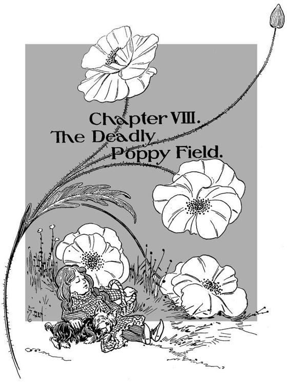

从《绿野仙踪》的书页中
奥兹国的奇妙魔法师
"欢迎你，最尊贵的女巫，来到蒙奇金的土地。我们非常感谢你杀死了邪恶的东方女巫，并使我们的人民摆脱了束缚。"(第22页)
当多萝西认真地看着稻草人那张怪异的、被涂抹过的脸时，她惊讶地看到其中一只眼睛慢慢地向她眨眼。她起初以为自己一定是看错了，因为堪萨斯州的稻草人都不眨眼。(第35页)
"无论我们的家园多么沉闷和灰暗，我们这些有血有肉的人宁愿生活在那里，也不愿生活在任何其他国家，无论它多么美丽。没有地方比得上家。"(第42页)
"我将采取心脏，"铁皮人回道；"因为大脑不会使人快乐，而快乐是世界上最好的东西。"(第55页)
"如果你不介意，我和你一起去，"狮子说，"因为如果没有一点勇气，我的生活简直无法忍受。"(第63页)
现在，他们遇到了越来越多的大红罂粟，其他的花越来越少；不久，他们发现自己处于一片巨大的罂粟花草地之中。众所周知，当许多这种花在一起时，它们的气味是如此强烈，以至于任何吸入这种气味的人都会睡着，如果睡觉的人没有被花的香味带走，他就会一直睡下去。(第78-80页)
"你杀死了东方女巫，你穿上了银鞋，它带有强大的魅力。现在这片土地上只剩下一个邪恶的女巫，当你能告诉我她已经死了，我就把你送回堪萨斯，但在此之前不行。"(第108-109页)
这让多萝西非常生气，她拿起站在附近的水桶，向女巫砸去，把她从头到脚都打湿了。(第127页)
当孙悟空讲完他的故事时，多萝西往下看，看到他们面前的翡翠城的绿色、闪亮的墙壁。她对猴子们的快速飞行感到惊奇，但对旅程的结束感到高兴。(第144页)
"我是奥兹，伟大而可怕的奥兹，"小人用颤抖的声音说，"但不要打我--请不要！--我会做任何你想要我做的事。"(第150页)
"你不能给我脑子吗？"稻草人问。
"你不需要它们。你每天都在学习一些东西。一个婴儿有大脑，但它不知道什么。经验是唯一能带来知识的东西，你在地球上的时间越长，你肯定会得到更多的经验。"(第154页)
"但我不想住在这里，"桃乐丝喊道。"我想去堪萨斯州，和艾姆婶婶和亨利叔叔一起生活。"(第174页)
多萝西什么也没说。奥兹没有遵守他对她的承诺，但他已经尽力了，所以她原谅了他。正如他所说，他是个好人，即使他是个坏巫师。(第182页)
当他们都很得体时，他们跟随女兵进入一个大房间，女巫格林达坐在一个红宝石的宝座上。
(第207页)
多萝西现在郑重地把托托抱在怀里，说了最后一句再见后，她把鞋跟拍了三下，说："带我回家找艾姨！"(第211页)
巴诺书店出版
第五大道122号
纽约，NY 10011
www.barnesandnoble.com/classics
神奇的绿野仙踪》（The Wonderful Wizard of Oz首次出版于1900年。
2005年由Barnes & Noble Classics出版，有新的介绍。
注释，传记，年表，灵感来源，评论和问题。
和《进一步阅读》。
导言、注释和进一步阅读
Copyright © 2005 by J. T. Barbarese.
关于L. Frank Baum的说明，《L. Frank Baum的世界》。
和 神奇的绿野仙踪》（The Wonderful Wizard of Oz灵感来自于 神奇的绿野仙踪》（The Wonderful Wizard of Oz,
和评论与问题
Copyright © 2005 by Barnes & Noble, Inc.
保留所有权利。本出版物的任何部分均不得以任何形式或通过任何手段，包括影印、录制、复制或传播。
任何形式或任何手段，电子或机械，包括影印、录音。
或任何信息存储和检索系统，未经事先
未经出版商事先书面许可。
巴诺经典 "和 "巴诺经典 "是巴诺公司的商标。
是Barnes & Noble, Inc.的商标。
神奇的绿野仙踪》（The Wonderful Wizard of Oz
ISBN-13: 978-1-59308-221-5 ISBN-10: 1-59308-221-5
eISBN : 978-1-411-43355-7
LC控制编号2005920760
与以下机构共同制作和出版。
Fine Creative Media, Inc.
第八大道322号
纽约，NY 10001
迈克尔-J-费恩，总裁和出版商
在美国印刷
ǞǞǞ
1 3 5 7 9 10 8 6 4 2
首次印刷
L.弗兰克-鲍姆
当莱曼-弗兰克-鲍姆在1882年向莫德-盖奇求婚时，这位女孩的母亲，一位女权主义先驱，激烈地反对这种结合。她显然有充分的理由。作为一个富有的石油商的儿子，鲍姆过着流动的生活，对他未来的事业没有把握；当时，他正在演一部由他父亲资助的巡回戏剧作品。尽管如此，莫德还是接受了这段婚姻，并发现她的丈夫是一个充满激情、勤奋工作的梦想家。就像他的同代人马克-吐温一样，鲍姆达到了文学成功的顶峰，但他的成果却被不合时宜的、经常充满幻想的投资所挫败。
如果说性格是鲍姆的命运，那么早期的愿望则预示着文学的未来。弗兰克1856年出生于纽约的奇特南戈，他的童年是在鲍姆家的庄园里度过的，在那里他得到了一台印刷机，并和他的兄弟一起创办了一份家庭报纸《玫瑰园家庭杂志》。尽管有先天性心脏疾病，鲍姆年轻时还是相当活跃。他开始写专业的报纸文章、戏剧、诗歌，甚至在美国内战后的几年里写了一本关于饲养汉堡鸡的入门书。
1887年，他的父亲和哥哥相继去世，家道中落，鲍姆和妻子搬到了达科他地区的阿伯丁，莫德的兄弟姐妹们也住在那里。鲍姆开了一家杂货店 "鲍姆集市"，当地的孩子们聚集在那里吃糖果，听鲍姆讲富有想象力的故事，以示娱乐。但是，他们向受干旱困扰的牧场主和农民慷慨地提供信贷，迫使这对夫妇在1890年停业。一次不合时宜的报纸编辑和其他出版企业的尝试使他们破产，并准备再次搬家，这次是去芝加哥。为了维持生计，弗兰克当过记者，并在皮特金和布鲁克斯的玻璃器皿公司当过巡回推销员，取得了不错的成绩。
尽管鲍姆的四个儿子长期以来一直喜欢他们父亲的幻想故事，但鲍姆直到1897年《鹅妈妈散文集》出版时才发表他的故事。它的成功激发了《鹅妈妈，他的书》（1899年），它是当年最畅销的儿童读物。但是，在1898年首次向他的儿子和邻居的孩子们讲述的一个名叫多萝西的农场女孩的故事，却立即获得了成功，并将作为一个永久的经典而持续下去。1900年以《绿野仙踪》的形式出版，由威廉-华莱士-登斯洛绘制插图，鲍姆的故事从商店里一飞冲天，当它在1902年上演时，从纽约到芝加哥的剧院都销售一空。
鲍姆对这部小说的受欢迎程度感到兴奋，他写了许多奥兹国故事的续集，并取得了相当大的经济成功。但他也想把自己的作品扩展到奥兹国的故事之外。他的其他书籍，有些是用笔名出版的，包括《伊克斯的紫溪女王》（1905年）、《王冠的命运》（1905年）和青少年系列作品《简姨的侄女》（1906年至1915年）。虽然这些作品享有健康的读者群，但失败的商业选择和他的观众对更多奥兹国故事的不满足的渴求，使他一直在写续集，直到他去世。
鲍姆一直是个忠实的家庭主妇，他在加利福尼亚度过了他的最后几年，过着平静的生活。他的房子（名为Ozcot）的地面上种满了鲍姆的获奖花卉，他一直在栽培这些花卉，直到心脏和胆囊问题严重威胁到他的健康。弗兰克-鲍姆于1919年5月6日因心脏病发作而去世。
法兰克-鲍姆的世界和 神奇的绿野仙踪》（The Wonderful Wizard of Oz
| 1856 | 莱曼-弗兰克-鲍姆于5月15日出生在纽约的奇特南戈，父亲是辛西娅-斯坦顿-鲍姆和本杰明-沃德-鲍姆。本杰明在石油和其他商业企业中获得了一笔可观的财富，他能够在舒适的环境中抚养他的九个孩子。 |
| 1861 | 美国南北战争开始。本杰明的前景继续改善，使他能够在纽约锡拉丘兹郊外购买一处乡村住宅；该住宅名为 "玫瑰草坪"，其面积足以让小弗兰克饲养一群小鸡。弗兰克是个体弱多病的孩子，生来就有心脏疾病，这将困扰他到成年。 |
| 1865 | 内战在4月9日结束，林肯总统在五天后被刺杀。 |
| 1866 | 刘易斯-卡罗尔的《爱丽丝漫游奇境记 》出版了。鲍姆后来被比作卡罗尔，因为他们都写了一个年轻的女主人公。 |
| 1868 | 弗兰克被送到皮克斯基尔军事学院；他厌恶学校严格的纪律和时间表。路易莎-梅-阿尔考特的《小妇人 》出版。 |
| 1870 | 弗兰克的健康状况不佳，使他得以离开皮克斯基尔军事学院。 |
| 1871 | 早期对写作和新闻的兴趣使弗兰克创建了一份家庭报纸--《玫瑰园家庭杂志》。 |
| 1873 | 儒勒-凡尔纳的《八十天环游世界 》出版。 |
| 1876 | 马克-吐温的《汤姆-索亚历险记》（The Adventures of Tom Sawyer ）出版。 |
| 1877 | 鲍姆开始撰写专业期刊文章，并开始参与剧院的工作。 |
| 1878 | 由于对舞台生涯抱有很大希望，他开始在曼哈顿的联合广场剧院表演。 |
| 1882 | 本杰明-鲍姆为弗兰克资助了一个戏剧公司，弗兰克写了他的第一个剧本《阿兰的女仆》。 该剧由弗兰克担任主角，在两年的演出中获得了一些评论和商业上的成功。鲍姆与莫德-盖奇结婚。 |
| 1883 | 鲍姆和莫德有一个孩子，弗兰克-乔斯林。罗伯特-路易斯-史蒂文森的《金银岛 》出版。 |
| 1884 | 管理不善和簿记员可能的贪污行为导致剧团倒闭。马克-吐温的《哈克贝利-芬的广告》 出现。 |
| 1885 | 鲍姆为他家的石油公司销售鲍姆蓖麻油，一种车轴润滑脂。 |
| 1886 | 鲍姆写了他的第一本书《汉堡鸡之书》 ，介绍汉堡鸡的饲养和照料。鲍姆的第二个儿子罗伯特出生。 |
| 1887 | 本杰明-鲍姆和他的大儿子去世。由于失去了两位有能力的鲍姆商人，家庭的收入大大减少。弗兰克和莫德-鲍姆搬到了达科他地区的阿伯丁，在那里他们开了一家杂货店。 |
| 1890 | 鲍姆的第三个儿子哈里出生。鲍姆的商店倒闭。鲍姆接任《阿伯丁星期六先锋报 》的临时编辑，他为该报撰写文章和专栏。 |
| 1891 | 鲍姆的第四个儿子肯尼斯出生。几乎身无分文的鲍姆搬到了芝加哥，在那里他成了《晚报》 的记者。 |
| 1892 | 由于无法靠做搬运工的微薄工资养家糊口，鲍姆还为智识公司Pitkin和Brooks做巡回推销员。 |
| 1893 | 规模庞大的世界哥伦布博览会在芝加哥举行。美国经历了一场经济衰退。 |
| 1894 | 鲁德亚德-吉卜林的《丛林之书 》出版。 |
| 1897 | 鲍姆的第一个儿童故事《散文鹅妈妈》出版，插图由马克斯菲尔德-帕里什提供。由于健康状况不佳，鲍姆被迫放弃了销售，他创办了《展示窗》 ，这是一本关于窗户修剪的杂志。作家Opie Read将鲍姆介绍给William Denslow，后者后来为鲍姆的书作插图。 |
| 1899 | 鹅爸爸，他的书》 由乔治-M-希尔公司出版，插图由丹斯洛绘制。它的成功--它比今年任何其他儿童书籍的销量都要多--鼓励鲍姆继续写作。有了多余的钱，他在米其根的马卡塔瓦公园买了一个避暑山庄，他把它命名为 "鹅的标志"。 |
| 1900 | 由邓斯洛绘制插图的《神奇的绿野仙踪 》出版，取得了巨大的成功。此后，它一直在印刷。 |
| 1901 | 邓斯洛插图的《Merryland的Dot和Tot 》已经出版。 |
| 1902 | 绿野仙踪》 在芝加哥被制作成音乐剧，轰动一时。鲍姆与他的插画师威廉-登斯洛分道扬镳。 |
| 1903 | 绿野仙踪》的音乐剧在纽约开演。鲍姆试图通过出版儿童读物《神奇的耀州岛 》来拓展业务，但收效甚微。 |
| 1904 | 为了满足人们对另一个奥兹国故事的高度需求，鲍姆出版了第二部小说《奥兹国的奇妙之地》。 |
| 1905 | Ix的Zixi女王》出版。鲍姆决心写其他类型的作品，以笔名斯凯勒-斯汤顿（Schuyler Staunton）出版了成人浪漫小说《王冠的命运 》。 |
| 1906 | 鲍姆出版了《简姨妈的侄女》 ，这是以伊迪丝-范-戴恩的笔名写的十部系列小说中的第一部。 |
| 1907 | 奥兹国的奥兹玛》 出版。 |
| 1908 | 鲍姆出版了《桃乐丝和绿野仙踪》，在书中他首次称自己为 "奥兹国的皇家历史学家"。他的《美国童话》 出现了。 |
| 1910 | 鲍姆试图以《奥兹国的翡翠城 》结束奥兹国系列。 鲍姆一家搬到了加利福尼亚。在健康状况不佳的情况下，鲍姆监督建造了一座他称之为奥兹国的房子。 |
| 1911 | 彼得和温迪》，J.M.巴利以小说形式创作的《彼得-潘 》剧本出版。 |
| 1913 | 因为鲍姆的非奥兹国书籍没有他的奥兹国故事那么成功，而且他需要钱，所以他写了《奥兹国的拼布女孩》 。 |
| 1914 | 将他的故事改编成电影的梦想使鲍姆买了一个 |
| 电影制作公司；但它在制作了几部电影后就失败了。第一次世界大战开始。 | |
| 1918 | 冠状动脉疾病和胆囊手术导致他长期卧床休息。尽管他的健康状况不佳，鲍姆仍在继续写作。 |
| 1919 | 鲍姆于5月5日心脏病发作，在《奥兹国的魔法》 出版后不久。他在二十四小时内去世。 |
| 1920 | 鲍姆的最后一个奥兹国故事《奥兹国的格林达 》出版。露丝-普拉姆利-汤普森接任 "奥兹国的皇家历史学家"。 |
| 1939 | 米高梅发行了经典电影《绿野仙踪 》，由16岁的朱迪-加兰主演。 |
第一个美国人
儿童读物
你注意到的第一件事就是桃乐丝注意到的。堪萨斯州是灰色的。
当多萝西站在门口环顾四周时，除了四面的灰色大草原，她什么也看不到。没有一棵树，也没有一座房子，打破了四面八方伸向天空边缘的广阔平坦的土地。太阳把耕地烤成了灰色的一团，上面有一些小裂缝。甚至连草也不是绿色的，因为太阳已经把长长的叶片顶部烧焦了，直到它们变成了到处可见的相同的灰色。房子曾经刷过漆，但太阳把漆泡坏了，雨水又把它冲走了，现在房子和其他东西一样灰暗无光（第13-14页）。
弗兰克-鲍姆并不是第一个在儿童书中给美国人描绘美国风景的人。吐温在《汤姆-索亚历险记》（The Adventures of Tom Sawyer）（1876年）中做到了这一点，在《哈克贝利-费恩历险记》（Adventures of Huckleberry Finn）（1884年）中甚至更加激进，而阿尔考特则带出了一套美国青少年成长为年轻成年人的《三月女孩》。但吐温和阿尔考特是在为更成熟的读者写少年书。这本书是多萝西的，多萝西是个孩子，用她自己的话说，是 "一个无助的女孩"，而且显然比美国人在1900年以前遇到的任何儿童叙事的主人都要年轻，甚至不确定。我们通过多萝西的眼睛看到了多萝西的世界，这个世界是由成年人构建和管理的，是由成年人耕种和提供的，但由散文风格来调节，像孩子一样而不像孩子。在多萝西身上，鲍姆给了美国第一个真正的美国儿童主角。 1
与当代仅有的两个竞争性的十几岁前的女主角版本不同，刘易斯-卡罗尔的爱丽丝和J-M-巴利的温迪（都是十岁的女孩），鲍姆把多萝西放在一本书里，其特点是没有潜在的认知困难，这些困难仍然倾向于驱使儿童（和一些成年人）远离《爱丽丝梦游仙境》和《彼得-潘》的文本。虽然他很欣赏《爱丽丝梦游仙境》（1865年），但他也发现它 "漫无边际，语无伦次"，这一判断得到了后来的评论家的赞同，而且显然拒绝了卡罗尔对儿童世界的高度内化和讽刺性的看法。2仅仅是开篇就揭示了这些童年愿景之间的巨大差异。
爱丽丝开始对坐在她姐姐身边的银行和无事可做感到非常厌倦：有一两次她偷看了她姐姐正在读的书，但里面没有图片或对话。"一本书有什么用，"爱丽丝想，"没有图片或对话？"
于是她在自己的脑海中考虑（因为炎热的天气使她感到非常困倦和愚蠢），制作雏菊链的乐趣是否值得起床采摘雏菊的麻烦，突然一只粉红色眼睛的白兔从她身边跑过。
这里确实没有 "外部"，因为作者正在利用儿童叙事的一个特点，即在文学和社会空间之间漂移的趋势。这一切都发生在 "她自己的脑海里"--开篇至少有三个这样的提法--在句法环境中，读者的注意力像乒乓球一样被分流到一些内部独白（"一本书有什么用，"爱丽丝想，"没有图片或对话？"）和括号的大门，这表明一个能够自我反思的头脑，导致了我们与高亢的维多利亚式讽刺有关的严重的假定性风格，而叙事则避开了内部和外部，到第三段时，已经进入仙境。
鲍姆也理解任何进入这一类型的作家的核心困境--儿童为这一类型带来了他们的名字，而不是其他，他致力于创造一个彻底外化的、发现自己陷入困境的儿童形象。在这一点上，桃乐丝与她最近的英国和欧洲的同行之间存在着决定性的区别。爱丽丝的兔子洞不仅是通往仙境的走廊，而且是进入无意识的通道；其结果是对一个她并不急于返回的世界的连续扭曲的看法，以及对没有自我声明的道德或逻辑中心的有序思想和行为的嘲弄。学者们喜欢《爱丽丝梦游仙境》，因为那里有很多解释干预的空间；但学术研究，特别是弗洛伊德，在奥兹国没有立足之地，对多萝西或她的旅程也没有什么可说的。奥兹国有很多东西--多彩的、危险的、愚蠢的--但决不是像仙境那样令人痴迷的疯狂或 "道德上不可理解"。3绿野仙踪》的世界是乐观的，而不是讽刺性的冷漠，或者像巴利的《彼得-潘》（1904年）中那样，经常是讽刺性的。仙境是一种精神上的，而不是身体上的折磨；梦幻岛是一个主题公园，其主要模式是怀旧。但奥兹国是一个气球的距离。米高梅决定把多萝西变成一个创伤受害者，把奥兹国变成一个精神状态，模糊了这两个根本对立的童话愿景之间的本质区别，而且可能是故意的，把多萝西变成一个美国的爱丽丝，把一个优雅细致的美国浪漫故事变成一个心理寓言。鉴于好莱坞对电影完全公开的痴迷，以及它的首要指令--没有任何事实可以不被解释，你得到了1939年的电影--一部天才之作，但不是鲍姆的天才之作。4
因此，对于那些在电影中长大的读者来说，最大的震惊是发现小说中没有电影中令人欣慰、填补空白的背景故事。电影中的一些修改，如暴风雪惊醒了在罂粟地里睡觉的人，并取代了第九章中老鼠女王对他们的营救，是对可能被证明不可能或不足以产生幻觉的特殊效果的成本效益的替代。5大多数人都知道，在1939年的电影中，从银鞋到红宝石拖鞋的变化是由技术上的考虑决定的（红色在当时的电影胶片上显示得比银色更生动）；如果没有其中一些令人难忘的对话，美国文化将变得更加贫穷。但是，主要的变化是在整个人物塑造方面，而且回过头来看，似乎不那么站得住脚。在书中，亨利叔叔和艾姨从未真正从背景中走出来，只在第一章中一起出现，艾姨在非常简短的结尾一章中单独出现。然而，电影却把他们表现为一个可爱的堪萨斯州家庭的可爱（如果是双色）的代表。玛格丽特-汉密尔顿的邪恶女巫原来是多萝西脑震荡的潜意识中的又一个涟漪，是西部邪恶女巫的堪萨斯原型，她甚至有一个名字--阿尔米拉-古奇。艾姨并不是那个 "瘦弱憔悴"、没有孩子的老妇人，她的眼睛已经失去了光彩，像堪萨斯州一样灰暗。她是一个全美国的原创者，有着与之相匹配的舌头和个性。"阿尔米拉-古尔奇，"她在听到阿尔米拉消灭多多的计划时说，"你拥有半个县，并不意味着你有权力管理我们其他人！"也许最大的变化是多萝西本人，她在小说中实际上是一个比电影中更有活力的孩子。考虑到女巫的死亡。电影将这一事件描述为一个意外--多萝西用一桶水对准燃烧的稻草人，结果却浇灭了女巫。但在小说中，这不是意外。女巫欺骗了多萝西并得到了她的一只银鞋。多萝西变得 "非常生气，她拿起站在附近的水桶，把它砸向女巫"。朱迪-加兰笔下的多萝西是含泪道歉的；鲍姆笔下的多萝西则是直言不讳的 "愤怒"。6
编剧（Noel Langley、Florence Ryerson和Edgar Allan Woolf）还扩大了三个同伴的角色，把稻草人、铁皮人和狮子变成了元气大伤的农夫，名叫Hunk、Hickory和Zeke。马维尔教授（弗兰克-摩根），这个和蔼可亲的骗子，在龙卷风准备降临时看着多萝西离开，作为巫师重新出现在她的梦境中（还有，一旦进入奥兹城，翡翠城的门卫、出租车司机和巫师的警卫）。这些都不只是简单的心理现实主义的润色。就像多萝西到达蒙奇金大陆时从黑白转为彩色的技术笔触，以及突然不可或缺的配乐，这些对奥兹国神话的永久贡献也是即兴创作，不一定构成改进。7它们模糊了原作的清晰度，在一个更清晰的原作上叠加了第二个关系网络。多萝西和她的同伴们每个人都缺少一些东西，并冒险到翡翠城向巫师请求找到这些东西，但在小说中，无论是同伴还是他们的缺陷，在堪萨斯的 "真实 "世界中都没有对等的对应物。奥兹国不是炼狱或补偿性的教育经历，也绝对不是对无意识的隐喻。然而，这部电影说服了观众堪萨斯和奥兹国之间近乎寓言式的对称性，并提出了独特的问题。这是桃乐丝在梦中披露真相的方式，在清醒时太危险或太痛苦，无法承受？这三个同伴，就像暂时阻挡但丁进入地狱的三只野兽一样，是否反映了她性格中的缺陷？我们并不真正了解。电影对只有它提出的问题提供了挑逗性的结局。编剧的精彩改编--无论你是否觉得它受欢迎--将每个角色都变成了一个象征性的参照物，是精心策划的后周期彩虹上的一个点，始于堪萨斯，终于堪萨斯。因此，这部电影将重点从幻想转移到了心理学，并做出了一些 "不可原谅 "的改变。8不管它在商业或技术方面的理由是什么，这部电影迫使观众用心理学而不是想象力来衡量堪萨斯和奥兹国之间的距离；它通过消除解释的需要，整理了某些松散的结局，如铁皮人和稻草人的起源，他们的历史在书中都有解释。最后发生的一切都发生在多萝西的头脑中。
这是至关重要的一点：鲍姆的奥兹国，就像希腊神话中的极乐世界或《汉塞尔和格雷特》中的女巫之家，是一个你可以从这里到达的地方。这里没有复杂的前景，更适合成人而不是儿童，也没有对清醒的原物进行梦境投射的内容。该文本对自己的想象力状况有一种宁静的自信，加上其令人不安的简单风格，是其持久的优势。对于那些在电影中长大的人来说，"缺少 "的是表面的复杂性、角色的密度和诙谐的对话。鲍姆的散文清晰而富有童趣，代表了对情节而非风格、对事件而非人物的毫不妥协的关注。这几乎就像儿童文学在鲍姆身上找到了自己的荷马一样，一个作家的直截了当和偶尔的迂腐风格是他所要讲述的故事的奇特之处决定的。你可能会怀念电影中的人物叠加和它精心策划的语言讽刺，这是更复杂的儿童书籍的衍生品。你可能会渴望当你看到稻草人的轮廓后面的雷-波尔格或听到马维尔教授的声音中的巫师时，你会感到结束。9另一方面，这部小说省去了仙境式的出口，如多萝西在结尾处的到来，或最后的表态，包括马维尔教授在内的全体成员围着她的床，就像百老汇的演员在做第二次鞠躬。虽然在意图问题上最不应该咨询的是作者，但值得注意的是，鲍姆所说的目的是用 "一个现代化的童话来取悦今天的孩子"，其中保留了奇迹和欢乐，而不包括心痛和恶梦"（第3页）。换句话说，简单性是他的目标，而不是风格上的闪光或心理上的细微差别。
对于通俗文学的学生来说，《绿野仙踪》及其13部续集最不吸引人的特点之一可能是其平淡的风格和漂移的意义。爱丽丝梦游仙境》已经成为论文和诺顿批评版的主题。10巴利的《彼得-潘》还没有成为诺顿批评版，却成为了著名的、至今仍有反响的批评攻击的对象；巴利和卡罗尔/道奇森一样，仍然是一个具有强烈传记兴趣的人，其中大部分是针对他对戴维斯男孩的可疑的同性依恋。11安徒生和格林兄弟所吸引的脚注和读者一样多。相比之下，《绿野仙踪》对儿童来说总是一帆风顺，对学者来说则是一马平川，其作者的意图已经流逝在其叙述的简单媒介中，其怪异之处已经石化为一个连接系统，正如伊迪丝-汉密尔顿对希腊神话的评论，它是全面的，但从来没有连贯性。事实上，它的简单性自相矛盾地成为在教育中使用它的一个障碍。12然而，多萝西的书仍然是一本多萝西自己可能会阅读的书，而且可能是自己阅读的。一代又一代的读者对安徒生的道德僵化和他惩罚女主人公的倾向感到挣扎；他们发现格林童话的省略性令人厌烦，就像他们发现安徒生的过度紧张一样；而且在两者中都注意到对残忍和暴力的迷恋。爱丽丝梦游仙境》虽然没有暴力，但它是一个由古怪的文字游戏、影射和模仿组成的强烈的语言结构，其中有儿童，但实际上并不包括儿童。温迪和爱丽丝一样，都是十岁，但哪个十岁的孩子会明白，当彼得-潘的讨厌的叙述者把虎克船长比作 "海炊"--或金银岛的长约翰-希尔维时，他在暗指什么？要理解一个典故，就必须像作者一样读过很多书。任何文本的典故范围--无论是儿童读物还是艾略特的《荒原》--都是对作者所受教育以及文化期望和价值观的核心课程的一种无言的衡量和反映。不止一个读者问过他自己或他的父母，像爱丽丝或温迪这样的主人公是否能够阅读他们所在的书。谁会对《绿野仙踪》提出这个问题？
困难并不总是认知上的。安徒生、卡罗尔和巴利的情感气象可能是黑暗的、狂野的和令人讨厌的。讽刺对于所有的读者来说都是一个认知的门槛；对于儿童来说，它可能是禁用的或不允许的。(即使是最聪明的五岁儿童，也可以尝试讽刺，他或她可能永远不会原谅你）。讽刺是一种消极的例证，你听一件事，却听到两次；就好像文本在与它自己的含义和谐地歌唱。对大多数孩子来说，生活中的大部分内容都必须有一个剧本，但讽刺却假定你已经有了一个剧本；而在童话故事中，传统上是儿童最早的剧本，讽刺要么是结构性的，要么是不存在的。但是，当小美人鱼的祖母告诉她，她能获得人类灵魂的唯一方法是让王子 "如此爱你，以至于你对他来说比他的父亲或母亲更重要 "时，只有那些明白结婚仪式典故的人，才会欣赏这种苦涩的讽刺。小叮当在回应彼得一再看不到她对他的感情是浪漫的时候，口中念念有词地回答 "傻蛋"，这可能会激发一个10岁孩子的微笑，但可能不会让她认识到。不管是好是坏，像这样的困惑从来没有困扰过《奥兹国》的读者，在那里，普遍的情绪天气是乐观的，色调几乎没有讽刺意味。
几乎是，但不完全是。弗兰克-鲍姆对双关语非常着迷，他在书中充满了轻描淡写的双关语--对我们许多人来说，这就是讽刺101。在第十六章中，巫师在取下稻草人的头时，倒掉了稻草，并在头里填上了 "一定量的麦麸，他用大量的针线混在一起"，然后宣布："以后你会成为一个伟大的人，因为我给了你很多麦麸--新的大脑"（第160页）。过了一会儿，狮子说，"这就证明他很聪明"（第160页）。格琳达把铁皮人和稻草人相提并论，对前者说："你真的比他聪明--当你被打磨得很好时"（第208页）。鲍姆的一些双关语更微妙，但也差不了多少，比如铁皮人在第十五章中宣称他将 "毫无怨言地承受所有的不快"（第155页），这正是你对一个没有心跳的人物的期望。其他的文字游戏是有背景的：如果你问无脑的稻草人通常对傻瓜提出的问题--"你是昨天出生的吗？"他将不得不说是的，因为正如他在第三章所说，他实际上是昨天出生的。
鲍姆的小说也是一种被称为 "自我背叛的讽刺 "的防止儿童犯罪的人物讽刺的舞台，这种戏剧性的或情景性的讽刺既防止儿童犯罪，又保证儿童安全。13明显的例子是无脑的稻草人习惯于想出好主意。正是他提出（在第七章，第68页）朋友们必须跳过第一个鸿沟的顺序，每个人都骑在狮子的背上。当狮子问道："谁先走？"稻草人用精彩的理性语言解释了他的回答--"我来"。"如果你发现你不能跳过海湾，多萝西就会被杀死，或者铁皮人在下面的岩石上严重凹陷。但是，如果我在你的背上，就不会有这么大的问题，因为掉下去根本不会伤害我。"几分钟后，在指挥铁皮人砍下一棵树，以便在第二道鸿沟上架起一座桥，使他们能够逃脱追捕的Kalidahs后，狮子说："人们几乎怀疑你的脑袋里有脑子，而不是稻草"（第70页）。紧接着，稻草人又想出了如何让掠夺者Kalidahs坠入海湾（第70页），并要求田鼠女王争取她的臣民帮助把狮子从罂粟地里拖出来（第87页）。
最有趣的自相矛盾的场所之一是无情的铁皮人，他不断为这种或那种违反自然秩序的行为迸发出 "悲伤和遗憾的泪水"，例如他在第六章中意外压死了一只甲虫。
"这将给我一个教训，"他说，"要看清楚我的脚步。因为如果我再杀一只虫子或甲虫，我肯定会再次哭泣，而哭泣会使我的下巴生锈，以至于我无法说话。"
此后，他走得非常小心，眼睛盯着路，当他看到一只小蚂蚁经过时，就会从它身上跨过去，以免伤害它。铁皮人很清楚自己没有心，因此他非常小心，从不对任何东西残忍或不仁慈。
他说："你们这些有心人，""有东西指导你们，永远不需要做错事；但我没有心，所以我必须非常小心"（第63-64页）。
矛盾堆积如山。没脑子的人想出了最有脑子的主意，没心没肺的人超乎寻常的敏感，而胆小的人则勇敢地承认自己是个胆小鬼（然后在身体上表现出大胆的壮举）。木头人完全不知道没有心脏实际上会产生更深刻的东西--对一切会动的东西的强烈关注，就像稻草人在了解拥有大脑的真正含义时毫无头绪一样。所有这三个同伴在假设符号和它们的含义--大脑、心脏和勇气--之间的透明关系方面是相同的，当然，这也是本书的一个笑话。这三个人都已经拥有了他们要找的东西。谢尔顿-卡什丹（Sheldon Cashdan）提供了可能是对这部小说最好的简短描述，指出它是如何 "专注于感知自我的缺点，而不是过度"。 14这里的关键词是感知。 奇妙的绿野仙踪》的主题中心，就像任何发现叙事或通过仪式一样，是一个简单的信息。接受你自己是什么。
二
撇开多萝西和她的海外表亲之间的差异，她的故事，就像温迪和爱丽丝的故事一样，是一个版本的英雄追求，从吉尔伽美什到奥德修斯和埃涅阿斯，再到哈克-芬，古利-福尔（阿尔弗雷德-贝斯特的科幻小说《我的目的地》的主人公），以及卢克-天行者。15 绿野仙踪》是为儿童改编的奥德赛，是对《汉塞尔和格莱特》和《小美人鱼》等mi croquests的阐述。佩里-诺德尔曼将这些故事描述为 "离家出走 "的故事，是诺思罗普-弗莱的单口相声的儿童版。 16这是西方文化几千年来对自己讲述的同一个故事：自我认识需要身体和情感上的自我测试，英雄们往往不愿意响应这个号召，而在旅程的中心是与连接我们和我们的过去的深刻真理的相遇。在更多的意义上，多萝西的冒险符合这种描述，从她意外地降落在奥兹国，到她不情愿地接受她的力量，再到她站在巫师的大厅里认识到，即使是可爱的奥兹国翡翠城也不能超越灰色的堪萨斯。鲍姆的故事是儿童对荷马第二大主题--怀旧--的沉思，而且，像奥德修斯一样，他的名字意味着 "为麻烦而生"，他的主人公有一个姓氏（盖尔），是对决定她命运的事件--一场龙卷风的微妙预测。17艾莉森-卢里指出，在所有奥兹国的书中，女性往往占据主导地位，这是它与荷马的《奥德赛》的另一个相似之处，不管是不是偶然的，后者也是由女性主导的，传统上被称为我们伟大的家庭史诗。18
虽然奥兹国的想象力世界与整个幻想和冒险图书馆有很多相似之处，但很难确定鲍姆的主要影响。他如此巧妙地升华了他的来源，使它们看起来自成一体，让人想起艾略特的一句话：坏作家是借的，好作家是偷的。有些元素，如善良的鹳鸟，出现在所有的儿童文学作品中，其中有很多会说话的动物--值得注意的例外是托托，他体现了儿童文学的难题，即高飞/普鲁托之问--也就是说，为什么有些动物会说话，有些则不会，为什么高飞能完全掌握语言，而米奇的狗普鲁托却只会吠叫。19一些具有暗示性的图标价值的元素，如邪恶女巫对水的恐惧或她的血液已经全部干涸的事实，似乎很容易被解析。其他则不太确定。北方好女巫在多萝西额头上留下的印记是护身符，就像阿基里斯没有保护好的脚跟，或者是同一概念的更现代的继承者，哈利-波特眉心的闪电疤痕。它是否也指向被冒犯的神明为保护该隐不受伤害而做的标记，并使他的苦难延续下去？当奥德修斯在《奥德赛》第11卷中访问地狱时，原因是想从提瑞西阿斯那里得到回家的方向，同样地，多萝西进行翡翠城之行是为了询问巫师如何回到堪萨斯州。然而，奥兹国并不比哈迪斯奥兹国更像哈迪斯。女巫为了绊倒多萝西而在厨房地板中间放置的铁条有一半的作用--多萝西被绊倒，失去了她的一只银鞋，但也颠覆了传统。铁条通常与驱赶恶魔有关，而不是无辜的小女孩。女巫有一只单眼皮的眼睛，宣布了一个令人不安的畸形和全知的结合（对一些人来说，可能是指共济会的单眼皮，出现在美国货币上）。在希腊神话中，赫尔墨斯戴着一顶翅膀的帽子，而在鲍姆的《奥兹国》中，多萝西有一顶金帽。带翅膀的猴子似乎与哈皮斯或瓦格纳的女武神等邪恶权威的中性工具有关，但这些前身都不像鲍姆的对应物那样合理或雄辩。 20奥兹国的房地产分配令人印象深刻，女巫们管理着由四个基本点指定的区域。但是，为什么鲍姆把积极的道德价值分配给北方和南方，而把消极的道德价值分配给东方和西方--这是一个文学事实，或者说是一个意外，利特尔菲尔德在64年后把这本书作为一个政治寓言进行了著名的解读。21
或者，再拿那些银色鞋子来说。它们似乎回到了灰姑娘的故事，但不是完全有用的方式。多萝西不是灰姑娘--不仅仅是因为她还不到结婚的年龄。多萝西的家庭生活是舒适和幸福的；此外，所有的灰姑娘，不管是男性还是女性，都是由一些自然机构赞助的，这些机构作为父母的代理人发挥作用--仙女教母、Holle母亲、小火柴人的幽灵祖母，或者在《闪电舞》或《洛基》等衍生品中，作为主人公年迈的女舞蹈教练或他脾气古怪的拳击教练。每一个灰姑娘首先都是特别的，是一个自然贵族的成员，他们没有被狗和猫的人类所承认，直到大自然的介入，教世界用大自然的眼睛看美。这是儿童文学自己的自然选择法则，它指出，没有一个天生的天才儿童必须被迫长期忍受社会剥削、社会隐蔽性或家庭婚姻的影响。灰姑娘的情景几乎不适用于桃乐丝，她只是在被捡到并被安置在奥兹国之后才变得特别。她有一个幸福的家，只是在奥兹国时技术上 "无家可归"，并且有两个爱她的养父母。此外，她是一个来自堪萨斯州的典型的小女孩，她最珍贵的礼物是她知道。她被关在邪恶女巫的城堡里，似乎与灰姑娘的情况类似，但多萝西几乎没有做什么工作，她的部分时间是在痛苦的泪水中度过的。每一次对可能的先例的援引都只会引入更多的疏远。小说中散布着许多这样的符号，它们似乎是解释的死胡同--例如，白色是女巫的颜色，这颠覆了预期的颜色编码的价值等级，或者，正如我们在第十二章中所了解的，女巫害怕黑暗。许多故事元素也是如此，它们的出现，与其说是梦幻文学的一些古老特性的迭代，不如说是鲍姆清空它们，然后用他自己的美国内容来填充它们的机会。因此，从亨利-利特尔菲尔德到赫布克1939年的著名漫画，对这部小说的寓言式解读持续不断，而且可能无穷无尽，在这些漫画中，希特勒被当作西方的邪恶女巫，墨索里尼是飞猴之一。鲍姆接近他的资料来源时，就像一个正在购物的人，而不是一个正在进行精心策划的袭击的人。
也许这种异想天开也解释了为什么某些明显的细节会无疾而终，比如多萝西和她的同伴在去翡翠城的路上停在小房子里的那个人，"他的腿受伤了，躺在角落的沙发上"（第94-95页），"七个通道和三层台阶"（第104-105页或魔法师要求他们在早上 "九点过四分 "到他的宝座室来（第148页）。鲍姆是否在为这个腿脚不灵便的人物准备某种角色，而他要么忘记了，要么没能找到合适的位置？也许他的一个孩子是在上午9点04分出生的？或者这些细节只是可以原谅的不一致之处，比如铁皮人的行为，当他不小心踩到一只虫子时被感动得哭了，但他却杀死了一只野猫和40只狼，或者突然发现多萝西带着一个哨子，"自从老鼠女王给她的时候，她一直带在脖子上"（第140页），而事实上，这从未发生。
鲍姆对颜色的使用特别耐人寻味。最初有四个女巫，到第三章结束时，只剩下一个坏女巫，即西边的女巫。(多萝西一到奥兹国就立即使天平向好的方面倾斜，并穿上了白色（女巫的颜色）和蓝色的连衣裙，我们应该对这一事实有所了解吗？绿色，翡翠城的颜色，在文学中一直有着模糊的价值，是一个双头的语义箭头，指向相反或不同的方向。虽然它象征着自然和自然力量的诱人存在，但就像自然本身一样，它可以拥有一个恶毒的、反沃兹沃斯的一面。例如，在《高文与绿骑士》中，绿色被赋予了一个将美丽与畸形、美德与残酷混为一体的人物；在《了不起的盖茨比》中，绿色是黛西-布坎南码头尽头的灵感之光的颜色，也是杀害默特尔-威尔逊的 "死亡之车 "的颜色。但是鲍姆选择的绿色代表什么呢？22蓝色也是如此，蒙奇金 "最喜欢 "的颜色，也是 "最经常看到的"，根据Biedermann的说法，"作为精神和智力事物的象征"--从彩色玻璃窗中的圣母玛利亚的衣钵到Michael Lehmann的Heathers（1989）中Veronica Sawyer的服装。23多萝西从一个蓝色为主的土地到一个 "绿色 "的目的地的进展是否对她的旅程做出了一些重要的评论，或者这种关系是一种偶然的关联？导致无法解释的是奥兹国这个名字本身。24鲍姆，正如赫恩所说，不是最谨慎的作家，显然对他的材料很感兴趣--从长远来看，可能是纯粹的、无望的自传图画的来源进行了改编。
与爱丽丝在兔子洞底发现的弗洛伊德式的维度不同，奥兹国的所有危险都是外部的。而且，一种普遍的理解占了上风。当邪恶女巫派遣翼猴时，她指示他们消灭所有的人，除了狮子（"我有一个想法，把他像马一样驾驭，让他工作"）（第122页），他们成功地执行了她的命令，直到他们到达多萝西。
翼猴的首领飞到她身边，伸出长长的毛茸茸的手臂，丑陋的脸庞咧开了可怕的嘴；但他看到了好女巫在她额头上的吻痕，于是停了下来，示意其他人不要去碰她。
"我们不敢伤害这个小女孩，"他对他们说，"因为她受到善的力量的保护，这比邪恶的力量更大"（第123页）。
在奥兹国，以及几乎所有的幻想中，这都是首要的指令。善不可避免地比恶更强大。它影响了多萝西对魔法师的呼吁，在那之前，也影响了鹳的行为，而且它是第一代书迷所经历的不适的另一个原因，可以说是主要原因，因为他们面临着一个令人不安的模糊性。奥兹国是一个善良占主导地位的地方，但你也会在那里找到那个不可能的矛盾体，即好女巫。从所有证据来看，这是弗兰克-鲍姆的发明，也可以说是他对西方文学的代表性词汇的持久贡献。在鲍姆之前，你在任何地方都找不到好女巫，他将传统的神秘主义人物与美国进步人士对人性的乐观信念--即现在经常被贬低的世俗人文主义--结合起来，发明了一种全新的道德类型。那些可能被诱惑去读J.K.罗琳的正直人士非常了解这种困境。如果信息符合基督教道德，但载体不符合，那有什么用呢？从长远来看，鲍姆对传统的创业方式呼应了惠特曼 "信条和学校都被搁置 "的呼声；像惠特曼一样，鲍姆想给美国带来一些全新的东西--"中性魔法 "的概念，将神秘学作为合理的东西，在没有传统的 "恶魔 "助手的帮助下进行驯化。其结果在我们周围随处可见，特别是在电影中，从《星球大战》中的原力到实用魔法。鲍姆的道德观植根于人文主义理想，只是顺带一提的是圣经原则。
增加《绿野仙踪》的吸引力的事实是，它的主人公与观众的许多偏见相同。多萝西是美国道德核心课程的产物，她的反应与1900年的读者的反应一样。"我以为所有的女巫都是邪恶的，"她在第二章对北方的好女巫强硬地说。女巫的回答，包括一个关于奥兹国地理的课程，关键是哪个女巫拥有什么，并没有缓解她的情绪。
"但是，"多萝西说，经过片刻的思考，"艾姨告诉我，女巫们都已经死了--很多年以前。"
"谁是艾姨？"小老太太问道。
"她是我的姨妈，住在堪萨斯州，我来自那里。"
北方的女巫似乎思考了一段时间，她低着头，眼睛看着地面。然后她抬起头来说。
"我不知道堪萨斯在哪里，因为我以前从未听人提起过那个国家。但告诉我，它是一个文明的国家吗？"
"哦，是的；"多萝西回答。
"那就说明了这一点。在文明国家，我相信已经没有女巫了；也没有巫师，没有女巫，没有魔术师。但是，你看，奥兹国从未被文明化，因为我们与世界上所有其他地方隔绝。因此，我们中间仍然有女巫和魔法师"（第25页）。
这一交流具有重要的预示价值。许多和桃乐丝一样相信（"所有的女巫都是邪恶的"）的观众可能会反对整个好女巫的概念，这个概念肯定没有圣经或道德先例。唯一出现在《圣经》中的女巫是通过撒旦的影响而获得权力的；在此之前，唯一的诉求是希腊神话中的两个孤立的例子，Circe和Medea，她们都占据了不同的位置，因为从技术上讲，她们都没有与地狱有任何联系。至于童话，至少在1826年格林姆斯的故事以英语出版后就一直在流传，它们既没有 "好 "女巫，也没有黑魔法的模范人类实践者。25然而，鲍姆在多萝西的叙述中给了他的观众一个奇怪的、棘手的位置，让多萝西问他们的问题，并得到一个答案，这个答案在堪萨斯是文明的象征的暗示下，一定会引起一种矛盾的共鸣。他的基本想象力发现是，成为女巫并不意味着你属于某种黑暗的精神贵族，因为魔法是一种像电、磁或火一样的工具。26在这个新的想象力共和国中，一个人可以成为总统、巫师、有头脑的人或女巫。
从长远来看，鲍姆的书因其对科学、未来和技术的爱默生式态度而引人注目。在《绿野仙踪》中，你在任何地方都能找到一些小玩意或发明，似乎反映了作者的想象力的冒险性。奥兹国的巫师，毕竟不是一个坏人（当然也不是巫师），他最初来自奥马哈，乘坐气球到达（和离开）。他把奥兹国变成了翡翠城，一个绿色的乌托邦，主要是通过销售技巧完成的，他在人们中间分发绿色的眼镜，从而加入了美国文学中杰出的商业步兵阵容，从《新娘来到黄天》中斯蒂芬-克兰的鼓手到德莱塞的赫斯特伍德（《嘉莉妹妹》），菲茨杰拉德的尼克-卡拉威一直到威利-洛曼。奥兹国的巫师通过技术上的大胆或简单的诡计创造了 "奇迹"，这与围绕在他身边（和害怕）的好的和坏的女巫的胜利形成了鲜明的对比；奥兹国的翡翠城是传统和新奇的结合，是典型的幻想的魔法道具与美国的螺母和螺栓技术的结合。神奇的银鞋与巫师的气球共存，气球与邪恶的女巫共存，工匠和锡匠与翼猴以及奥兹国最古怪的脑瓜子，娇小的瓷人共存。第十六章的标题是 "伟大的洪堡人的魔法艺术"，有效地概括了鲍姆的目的：在人类和神秘学之间建立联盟，后者为前者所拥有。在没有强制要求将奇幻与科幻元素分开的情况下，他忽略了自觉的通用区别，在报摊上，你可以看到《模拟》与《幻想与科幻》杂志并排在一起，神奇与制造之间的区别仍然被强制执行。他用《奥兹国》设计了一个另类的仙境--美国的、外部的、可接触的。
还有一个巫师，以免我们忘记，他的成功--在我们认为是成功的程度上--不是黑魔法的结果，而是良性的骗局和游乐场的幻觉。我一直很惊讶，我们怎么会忽视这个标题和《了不起的盖茨比》一样具有讽刺意味的事实。鲍姆的巫师对于传统的巫师来说，就像约萨里安对于英雄一样，是一个滑稽的，因此也是一类人物的非常规代表，当我们看到他们时，我们很少，甚至从来没有嘲笑过他们。他是一个反巫师，是一个令人讨厌的骗子，他让镇上的每个人都戴上了绿色的眼镜，他造了一个气球，在鲍姆的时代是空中旅行的最后一个词，但他忘了给它装上控制装置--他的气球似乎只有在热空气冷却后才会下降。重点不是弗兰克-鲍姆认为所有的巫师都是骗子--这相当于暗示他已经对所有幻想的性质下定了决心--而是他可以想象一个骗子，如果有合适的机会，可能会变成一个相当好的巫师。奥兹国的道德类别是由你如何使用你所拥有的东西来确定的，而不是由你天生的性格特征来确定的--这曾是美国所代表的。换句话说，奥兹国不是贵族制度，而是一种神奇的民主。你可以成为你想要的任何东西--巫师或女巫--而不必担心你的选择是由一套特定的价值观来决定的。对一些人来说，像安徒生和格林姆斯的幻想的吸引力，通过卡罗尔并直接进入罗琳，是对道德人格贵族制的一种挥之不去的怀念，在那里，区别是与生俱来的，一个人出生时，正如布莱克所说，"一个准备好的花园和种植的"。在这些幻想中，那些弥合差距并引入可喜的模棱两可元素的人物出现了。即使是哈利-波特，青少年消费者的理想化，也有一个精英血统，将他与泥巴人区分开来。但多萝西几乎不是一个贵族，她进入的奥兹国从一开始就很模糊，是一种共存和相互依赖的道德和想象力技术的胜利。一种是古老的童话和奇幻文学，邪恶的女巫和不结盟的帮手，作为边缘人物的自然媒介，会说话的动物和被施了魔法的鞋子。另一个是鲍姆的，他最崇高的发明是这个非同寻常的地方和日常的东西并存并相互映照。当好女巫说奥兹国比奥兹国的其他女巫 "更强大 "时，她在为读者准备这本书中最温和但最吸引人的讽刺。"我怎么能不成为一个笨蛋呢，"他在被揭穿后说，"当所有这些人让我做大家都知道不能做的事情时，我怎么能不成为一个笨蛋呢？"(第162-163页)。但是，当然，他们不知道。绿野仙踪的力量最终取决于他的观众的轻信和他的供需意识。就像他自己承认的那样，他可能根本不是什么巫师。但他仍然是一个相当好的美国推销员。而在奥兹国，推销术--美国对西方文化价值的不可能的贡献--比巫术更强大。
J.T. Barbarese是儿童文学的权威，在新泽西州卡姆登的罗格斯大学任教，他是罗格斯儿童和儿童研究中心的成员。他著有四本诗集和一本欧里庇得斯的译作。他的第四本诗集《黑沙滩》（北德克萨斯大学出版社）于2004年获得瓦萨-米勒诗歌奖。他也是《新科学》（乔治亚大学出版社，1989年）和《非常小的世界》（Orchises出版社，2004年）的作者。他的诗作曾出现在《大西洋月刊》、《大道》、《乔治亚评论》、《丹佛季刊》、《西瓦尼评论》和《诗歌》上，最近还出现在《意大利裔美国人读本》（Morrow，2003年）的文集中。他的短篇小说出现在《故事季刊》和《北美评论》上，他的批评文章和文学新闻出现在各种出版物上，从《三季刊》、《英国文学研究》、《望远镜》、《现代文学杂志》到《乔治亚评论》和《纽约时报》。他目前正在写一本关于美国小联盟棒球的论文集。
笔记
1迈克尔-帕特里克-赫恩报告说，多萝西 "第一次到奥兹国旅行时可能不超过5或6岁"，他是根据续集中的材料、丹斯洛的画以及鲍姆的一个儿子所说的鲍姆 "为2至6岁的儿童写的书 "计算的。见Hearn,The Annotated Wonderful Wizard of Oz, 2000, p. 35, note 4。见 "供进一步阅读"。
2鲍姆，转引自赫恩，第12页，注1。
3唐纳德-拉金，"受祝福的愤怒"，见刘易斯-卡罗尔，《爱丽丝梦游仙境》，唐纳德-J-格雷编辑，《诺顿批评版》，第二版，纽约。W. W. Norton, 1971, p. 401.
4彩虹前的 绿野仙踪》一书的作者Mark Evan Swartz记录了《绿野仙踪》改编的演变过程，并证明了将所有这些变化归咎于米高梅和维克多-弗莱明是不准确的。早在1910年这部小说的单卷无声版中，电影制作人，其中一些人得到了鲍姆的祝福，就已经开始模糊堪萨斯和奥兹国之间的界限了。看待1939年的电影改编的一种方式是，它对早期改编中已经引入的变化进行了巨大的改进，并将一些漏洞和观众的让步提高到了高级艺术的水平。
5暴风雪是在1902年的音乐剧中引入的，可能是鲍姆自己的建议。见赫恩，第156页，注5。
6赫恩报告说，小学偶尔会让多萝西接受谋杀案的审判。见赫恩，第226页，注18。
7事实证明，当桃乐丝走出家门时，从棕褐色转为科技色的想法是对1933年早期较短的动画片版本中产生的效果的重复，该版本发行量有限。见赫恩，第33页，注2。
8赫恩，第27页，注13。
9戏剧默示体现其解释的想法并不是从《绿野仙踪》开始或结束的。在《小飞侠》的演出中，通常由同一个演员来扮演达林先生和虎克船长，传说在索福克勒斯的《菲罗克忒斯》中，同一个演员既扮演了邪恶的奥德修斯，又扮演了作为神灵出现的赫拉克莱斯。
10虽然有关于《绿野仙踪》的论文，但它吸引的学术兴趣却很少，因为从表面上看，它为学术界提供的机会太少，无法做它最擅长的事情--争论。
11杰奎琳-罗斯，《彼得-潘的案例，或者，儿童小说的不可能性》，伦敦。麦克米伦公司，1984年。道奇森和巴里都是传记片的主题。就巴利而言，最近的一部是《寻找梦幻岛》（2004）。
12绿野仙踪》的接受历史包括在1956年鲍姆诞辰一百周年前后爆发的敌意，当时发现这本书写得很差，在课堂上毫无用处的教师们组织了一次抗议活动。马丁-加德纳和拉塞尔-B-奈的书《绿野仙踪与他是谁》试图纠正对该书在教学上不健全的指控，并驳斥对鲍姆公认的单薄风格的攻击。
13这个词是D. C. Muecke创造的。见《讽刺》，J. D. Jump编辑。伦敦。Metheun, 1970.
14Sheldon Cashdan,The Witch Must Die: How Fairy Tales Shape Our Lives,New York:Basic Books，1999年，第218页。
15乔治-卢卡斯公开承认《绿野仙踪》中的人物对他自己的四人组卢克、莱娅公主、汉-索罗和楚巴卡的影响。
16见Joseph Campbell,The Hero with a Thousand Faces, Princeton, NJ: Princeton University Press, 1968, p. 114。也见诺思罗普-弗莱，《批评的剖析》。四篇论文，新泽西州普林斯顿：普林斯顿大学出版社，2000年，以及Perry Nodelman,The Pleasures of Children's Literature, New York:关于原型方法的讨论和应用，请参见Longman, 1992。关于荣格对原型的介绍，见《变革的象征》，第二版，由R.F.C.Hull翻译，普林斯顿，新泽西：普林斯顿大学出版社，1967年。赫恩指出，坎贝尔从未提及《绿野仙踪》，然后继续证明它与坎贝尔的启发式理论是多么一致。见赫恩，第59页，注5。
17其他的例子还有摩西（moishe，"拉出"，暗指他被放在芦苇筐里）和俄狄浦斯（"肿脚"）。多萝西的姓氏在该系列的第三部小说《奥兹国的奥兹玛》（1907年）中披露，但实际上在1902年的音乐剧中首次出现，是对她如何到达奥兹国的双关语，可能是由导演提供。见赫恩，第48页，注30。
18Alison Lurie，"奥兹国的怪异性"，《纽约书评》，2000年12月21日，第16-24页。
19这对成年人来说可能显得荒诞不经，但对细心的孩子来说却有一定的意义。赫恩报告说，在后来的《奥兹国》一书中，人们发现托托一直都能说话，但他选择不说话。
20在1939年的米高梅版本中，翼猴的首领由演员帕特-沃尔什（Pat Walshe）扮演，他有一个名字（Nikko），几句台词，并有账单。
21鲍姆的女巫，正如我在后面讨论的，是他最伟大的发明之一。她们与传统女巫的关系仅仅在于她们使用魔法。她们的力量不是来自 "恶魔"，至少在技术上不是。
22根据赫恩的说法，"从一个区域到另一个区域的变化遵循色彩理论的原则"。赫恩，第61页，注7。
23汉斯-比德曼，《象征主义词典》，由詹姆斯-胡尔伯特翻译，纽约。Meridian, 1994），第158页。根据G.Heinz Mohr（他的Lexikon der Symbole, Düsseldorf und Köln:Diederichs，1981年，在Biedermann中被引用），"基督教象征主义认为绿色 "与天堂的蓝色、地狱的红色等距离......是一种中间和调和的颜色，舒缓、清新、人性化，是沉思的颜色，是对复活的期待"（Biedermann，第158页）。此外，基于传统价值分配的颜色分析，将不得不解释为什么格林达的财产，即四方国，在鲍姆创造的奥兹国地图上被标记为红色，而邪恶女巫控制的Winkie国则被染成黄色。
24这个名字要么是事后想出来的，要么是一个意外。"一天晚上，鲍姆在给他的孩子和他们的朋友讲一个故事，说一个叫多萝西的小女孩被旋风带到了一个仙境，有人问他这个陌生的国家叫什么名字。他环顾房间，目光落在文件柜的抽屉上，上面贴着'A-N'和'O-Z'的标签；他告诉孩子们这就是奥兹国。"见赫恩，第43页，注17，关于这一解释和其他巧妙的解释。
25例如，格林同名童话中名为Holle母亲的老妇人是大自然母亲的化身，显然是超人类或非人类的，作为对比，她与试图吃掉汉塞尔和格雷特的女巫不同。事实上，Holle母亲不是好女巫的类型，而是天意或自然秩序的化身，在儿童文学中不可避免地、积极地是好的。
26鲍姆的《万能钥匙》。一个名叫罗布的男孩发现了电的力量，他意外地召唤了电的恶魔。这个恶魔，并非偶然，是鲍姆的另一个杂交人物，他告诉罗布，"恶魔可能是好的，也可能是坏的，就像任何其他类别的生命一样。最初，所有的恶魔都是好的，然而近年来，人们开始认为所有的恶魔都是邪恶的"。然后，这个恶魔引用了赫西奥德的一段话，有趣的是，恶魔的词根是古希腊语daimon，意思是 "精神 "或 "神"。
简介
民间传说、传奇、神话和童话故事一直伴随着童年，因为每个健康的年轻人都对神奇、美妙和明显不真实的故事有着健康和本能的喜爱。格林和安徒生笔下长着翅膀的仙女给孩子们的心灵带来的快乐比所有其他人类创造的东西都多。
然而，旧时代的童话故事，经过几代人的努力，现在可以被列为儿童图书馆的 "历史"；因为现在已经到了一系列更新的 "神奇故事 "的时候了，其中消除了刻板的精灵、侏儒和仙女，以及作者设计的所有可怕的和令人血脉喷张的事件，为每个故事指出一个可怕的道德。现代教育包括道德；因此，现代儿童只在神奇的故事中寻求娱乐，并欣然放弃所有令人不快的事件。
考虑到这一点，《绿野仙踪》的故事完全是为了取悦今天的孩子而写的。它希望成为一个现代化的童话故事，其中保留了奇迹和欢乐，而忽略了心痛和恶梦。
L.FRANK BAUM
芝加哥，1900年4月
第一章。
旋风》。
多萝西住在堪萨斯州的大草原上，与作为农民的亨利叔叔和作为农民妻子的艾姨一起生活。他们的房子很小，因为建造房子的木材需要用马车运到很多地方。有四面墙，一个地板和一个屋顶，这构成了一个房间；这个房间里有一个看起来很生锈的炉子，一个放餐具的柜子，一张桌子，三或四把椅子，还有床。亨利叔叔和艾姆婶婶在一个角落里有一张大床，多萝西在另一个角落里有一张小床。这里根本没有阁楼，也没有地窖--只有一个在地上挖的小洞，叫旋风地窖，万一有大旋风刮起，足以压垮沿途的任何建筑物，一家人就可以去那里。地板中间有一个活板门，从那里有一个梯子通向这个小而黑暗的洞。
当多萝西站在门口环顾四周时，除了四面的灰色大草原，她什么也看不到。没有一棵树，也没有一座房子，打破了四面八方伸向天空边缘的广阔平坦的土地。太阳把耕地烤成了灰色的一团，上面有一些小裂缝。甚至连草也不是绿色的，因为太阳已经把长长的草叶顶部烧焦了，直到它们变成了随处可见的相同灰色。房子曾经刷过漆，但太阳把漆泡坏了，雨水又把它冲走了，现在房子和其他东西一样，都是暗淡的灰色。1
艾姨来到那里生活时，她是一个年轻漂亮的妻子。阳光和风也改变了她。它们夺走了她眼睛里的光芒，留下了沉郁的灰色；它们夺走了她脸颊和嘴唇上的红色，它们也变成了灰色。她瘦了，憔悴了，而且现在从不笑了。当身为孤儿的多萝西第一次来到她身边时，艾姨被孩子的笑声吓了一跳，以至于每当多萝西欢快的声音传到她的耳朵里时，她都会尖叫着用手按住自己的心脏；她仍然好奇地看着这个小女孩，她能找到任何可以笑的东西。
亨利叔叔从未笑过。他从早到晚努力工作，不知道什么是快乐。他也是灰色的，从他的长胡子到他的粗糙的靴子，他看起来严厉而庄重，很少说话。
是托托让多萝西笑了起来，使她不至于像她周围的人一样变得灰暗。托托不是灰色的，它是一只小黑狗，有着长长的、柔顺的毛发，一双黑色的小眼睛在它滑稽的小鼻子两边欢快地闪烁着。托托整天都在玩耍，多萝西也和它一起玩耍，并深深地爱着它。
然而，今天，他们没有玩。亨利叔叔坐在门口的台阶上，焦急地看着天空，天空比平时更灰暗了。多萝西抱着托托站在门口，也看了看天空。艾姨正在洗碗。
从遥远的北方，他们听到了低沉的风声，亨利叔叔和多萝西可以看到长草在即将到来的暴风雨面前呈波浪状弯曲。现在从南方传来一阵尖锐的呼啸声，当他们把目光转向那边时，他们看到草地上的涟漪也来自那个方向。
突然间，亨利叔叔站了起来。
"有一场旋风2来了，"他叫他的妻子；"我去照看一下牲口。"然后他跑向饲养牛和马的棚子。
艾姨放下手中的工作，走到门口。一眼就告诉她危险近在眼前。
"快，桃乐丝！"她尖叫道；"跑向地窖！"
托托从多萝西的怀里跳出来，躲在床底下，女孩开始去抓他。艾姆婶婶非常害怕，她推开了地板上的活板门，顺着梯子爬进了那个又小又黑的洞。多萝西终于抓住了托托，并开始跟着她的姨妈。当她走到房间的一半时，风中传来一声巨大的尖叫，房子剧烈摇晃，她失去了脚步，突然坐到了地上。
随后发生了一件奇怪的事情。
房子旋转了两三圈，在空中慢慢上升。多萝西觉得自己好像坐着气球在上升。
南北风在房子的位置相遇，使它成为旋风的确切中心。在旋风的中间，空气通常是静止的，但是风在房子每一边的巨大压力使它越升越高，直到它处于旋风的最顶端；它留在那里，被带到数英里之外，就像你可以携带一根羽毛一样容易。
天很黑，风在她身边可怕地呼啸着，但多萝西发现她骑得很轻松。在最初的几次旋转之后，还有一次房子严重倾斜的时候，她觉得自己好像被轻轻地摇晃着，就像摇篮里的婴儿。
托托并不喜欢这样。他在房间里跑来跑去，一会儿在这里，一会儿在那里，大声地吠叫着；但多萝西却一动不动地坐在地板上，等待着看会发生什么。
有一次，托托离打开的活板门太近了，掉了进去；起初，小女孩以为她失去了他。但很快她就看到他的一只耳朵从洞里伸了出来，因为空气的强大压力使他保持着，所以他不会掉下去。她蹑手蹑脚地走到洞口，抓住托托的耳朵，又把他拖进了房间；然后把活板门关上，以免再发生意外。
一个小时又一个小时过去了，多萝西慢慢地摆脱了惊吓；但她感到相当孤独，风在她周围大声尖叫，她几乎成了聋子。起初，她想知道当房子再次倒塌时，她是否会被砸成碎片；但随着时间的推移，没有任何可怕的事情发生，她不再担心，决心冷静地等待，看看未来会发生什么。最后，她从摇晃的地板上爬到床上，躺在床上；托托也跟着躺在她身边。
她抓住多多的耳朵。

尽管房子在摇晃，风在呼啸，多萝西很快就闭上了眼睛，很快睡着了。
第二章。
理事会与 "蒙奇金"。

她被一股冲击力惊醒，<如此突然和严重，如果多多没有躺在柔软的床上，她可能已经受伤了。果不其然，这个罐子让她喘不过气来，不知道发生了什么事；托托把他冰冷的小鼻子凑到她的脸上，沮丧地抱怨着。多萝西坐起来，注意到房子没有动；也不黑，因为明亮的阳光从窗口射进来，淹没了这个小房间。她从床上跳起来，带着托托跟在她后面，跑去开门。
小女孩发出一声惊奇的叫声，环顾四周，她的眼睛因为看到的奇妙景象而变得越来越大。
旋风把房子吹倒了，对于旋风来说，它非常温和地落在了一个美丽无比的国家中间。到处都是可爱的绿色草地，庄严的树木结着丰硕的果实。每一棵树上都开满了艳丽的花朵，羽毛鲜艳的鸟儿在树上和灌木丛中唱着歌、飞着舞。稍远处有一条小溪，在绿色的河岸之间奔流不息，波光粼粼，对一个长期生活在干燥、灰暗的草原上的小女孩来说，声音非常感激。3
当她站在那里热切地看着这些奇怪而美丽的景象时，她注意到有一群她所见过的最古怪的人向她走来。他们不像她一直习惯的那些成年人那样高大；但也不是很矮小。事实上，他们似乎和多萝西一样高，而多萝西在她这个年龄段是个成熟的孩子，尽管从外观上看，他们比她大很多岁。
三个是男人，一个是女人，都穿着古怪。他们戴着圆圆的帽子，帽子升到离头顶一英尺高的地方，帽檐上挂着小铃铛，随着他们的移动发出甜美的叮当声。男人的帽子是蓝色的；小女人的帽子是白色的。4她穿着一件白色的长袍，在肩上打着辫子；上面撒着小星星，在阳光下像钻石一样闪闪发光。男人们穿着蓝色的衣服，和他们的帽子一样的颜色，穿着擦得很好的靴子，上面有一圈深蓝色。多萝西认为，这些人的年龄和亨利叔叔差不多，因为他们中的两个人留着胡子。但那个小女人无疑要老得多：她的脸上布满了皱纹，头发几乎全白了，而且走路相当僵硬。
当这些人走到多萝西站在门口的房子附近时，他们停了下来，相互之间窃窃私语，似乎不敢走远。但那个小老太太走到多萝西面前，做了一个低的鞠躬，用甜美的声音说。
"欢迎你，最尊贵的女巫，来到蒙奇金人的土地。我们非常感谢你杀死了邪恶的东方女巫，并使我们的人民摆脱了束缚。"
多萝西好奇地听着这番话。这个小女人说她是女巫，并说她杀死了邪恶的东方女巫，这可能是什么意思？多萝西是一个无辜的、无害的小女孩，她被旋风带到离家很远的地方；而且她一生中从未杀过任何东西。
但这个小女人显然希望她能回答；所以多萝西犹豫着说。
"你真好；但一定有什么误会。我没有杀任何东西。"
"反正你的房子是这样，"小老太太笑着回答；"这也是一样的。看！"她继续说，指着房子的一角；"她的两个脚趾还从一块木头下面伸出来。"
多萝西看了看，吓得小声叫了起来。的确，就在房子所在的大梁的拐角处，伸出了两只脚，穿着银色的尖头鞋。
"哦，亲爱的！哦，亲爱的！"多萝西哭着说，她惊愕地双手合十；"房子肯定倒在她身上了。我们该怎么办呢？"
"没有什么可做的，"小女人平静地说。
"但她是谁？"多萝西问。
"她是东方的邪恶女巫，正如我所说的，"小女人回答。"她把所有的蒙奇金人都束缚了很多年，让他们日夜为她做奴隶。现在他们都获得了自由，并对你的恩惠表示感谢。"
"谁是Munchkins？"多萝西问道。
"他们是生活在东方这块土地上的人，邪恶的女巫在那里统治。"
"你是蒙奇金吗？"多萝西问。
"不；但我是他们的朋友，虽然我住在北方的土地上。当他们看到东方女巫死了，蒙奇金人就派人迅速来找我，我马上就来了。我就是北方的女巫。"
"哦，天哪！"多萝西叫道；"你是一个真正的女巫吗？"
"是的，确实如此；"小女人回答。"但我是个好女巫，人们都喜欢我。我不像统治这里的邪恶女巫那样强大，否则我应该自己让人们自由。"
"但我以为所有的女巫都是邪恶的，"5女孩说，她面对一个真正的女巫感到半点害怕。
"哦，不；这是个大错误。整个奥兹国只有四个女巫，其中两个，即住在北方和南方的女巫，是好女巫。我知道这是真的，因为我自己就是她们中的一员，不会错的。那些住在东部和西部的人确实是邪恶的女巫；但现在你已经杀了他们中的一个，在整个奥兹国只有一个邪恶的女巫--住在西部的那个。"
"我是北方的女巫。"
"但是，"多萝西说，经过片刻的思考，"艾姨告诉我，女巫们都已经死了--很多年以前。"
"谁是艾姨？"小老太太问道。
"她是我的姨妈，住在堪萨斯州，我来自那里。"
北方的女巫似乎思考了一段时间，她低着头，眼睛看着地面。然后她抬起头来说。
"我不知道堪萨斯在哪里，因为我以前从未听人提起过那个国家。但告诉我，它是一个文明的国家吗？"
"哦，是的；"多萝西回答。
"那就说明了这一点。在文明国家，我相信已经没有女巫了；也没有巫师，没有女巫，没有魔术师。但是，你看，奥兹国从未被文明化，因为我们与世界上所有其他地方隔绝。因此，我们中间仍然有女巫和魔法师。"
"谁是巫师？"多萝西问。
"奥兹国自己就是大巫师，"女巫回答说，把声音沉到了耳语。"他比我们所有人加起来还要强大。他住在绿宝石之城。"
多萝西还想再问一个问题，但就在这时，一直静静站在旁边的小矮人发出了一声大叫，并指着房子的角落，邪恶女巫就躺在那里。
"这是什么？"小老太太问道；看了看，开始笑了。死去的女巫的脚已经完全消失了，除了银色的鞋子，什么都没有留下。
"她太老了，"北方女巫解释说，"她在太阳下很快就干枯了。这就是她的结局。但这双银鞋是你的，你可以穿上它。"她伸手拿起鞋子，抖了抖上面的灰尘后，把它递给了多萝西。
"东方女巫为那双银鞋感到骄傲，"其中一个小矮人说；"有一些魅力与它们有关；但它是什么我们从来不知道。"
多萝西把鞋子搬进屋里，放在桌子上。然后她又出来对蒙奇奇们说。
"我急于回到我姨妈和姨夫身边，因为我确信他们会担心我。你能帮我找到路吗？"
芒奇金人和女巫先是互相看了看，又看了看多萝西，然后摇了摇头。
"在东方，离这里不远，"一个人说，"有一个大沙漠，没有人能够活着穿过它。"
"在南方也是如此，"另一个人说，"因为我去过那里，看到了。南方是Quadlings的国家。"
"我被告知，"第三个人说，"在西部也是如此。而温克人居住的那个国家，是由邪恶的西方女巫统治的，如果你通过她的方式，她会让你成为她的奴隶。"
"北方是我的家，"老妇人说，"在它的边缘，也是环绕着奥兹国的那片大沙漠。恐怕，我亲爱的，你将不得不和我们一起生活。"
多萝西开始抽泣，因为她在这些陌生的人中感到很孤独。她的眼泪似乎让那些好心的蒙奇金人很伤心，因为他们马上拿出手帕，也开始哭泣。至于那个小老太太，她摘下帽子，把帽子尖放在她的鼻端，同时用庄重的声音数着 "一、二、三"。帽子立刻变成了一块石板，上面写着大大的白色粉笔字。
"让多萝西去绿宝石之城。"
小老太太从她的鼻子上取下石板，看了上面的字后，问道。
"你叫多萝西吗，我亲爱的？"
"是的，"孩子回答，抬起头来，擦干眼泪。
"那么你必须去绿宝石之城。也许奥兹会帮助你。"
"这个城市在哪里？"多萝西问。
"它正好在国家的中心，由我告诉你的大魔法师奥兹统治。"
"他是个好人吗？"女孩焦急地问道。
"他是个好巫师。他是不是一个人，我不能说，因为我从未见过他。"
"我怎么能去那里？"多萝西问道。
"你必须步行。这是一段漫长的旅程，穿过一个有时令人愉快、有时黑暗可怕的国家。然而，我将使用我所知道的所有魔法，使你们免受伤害。"
"你不和我一起去吗？"女孩恳求道，她已经开始把这个小老太太看成是她唯一的朋友。
"不，我不能这样做，"她回答说；"但我会给你我的吻，没有人敢伤害一个被北方女巫吻过的人。"
她走近多萝西，在她的额头上轻轻地吻了一下。她的嘴唇接触到女孩的地方留下了一个圆圆的、闪亮的印记，桃乐丝很快就发现了这一点。
"通往绿宝石城的路是用黄砖铺成的。6巫婆说；"所以你不能错过它。当你到了奥兹国时，不要害怕他，而是讲出你的故事，请他帮助你。再见了，我亲爱的。"
三个蒙奇金人向她低头鞠躬，祝她旅途愉快，之后他们穿过树林走了。女巫向多萝西友好地点点头，在她的左脚跟前转了三圈，然后直接消失了，这让小托托非常惊讶，她走后，小托托在她身后大声地叫着，因为她站在旁边时，它甚至不敢吼叫。
但多萝西知道她是个女巫，早就料到她会以这种方式消失，所以丝毫不觉得奇怪。
第三章
桃乐丝如何拯救稻草人。


当多萝西被单独留下时，她开始感到不高兴。于是她走到橱柜前，自己切了一些面包，涂上黄油。她给了多多一些，然后从架子上拿了一个桶，把它带到小河边，装满了清澈的水。托托跑到树上，开始对着坐在那里的鸟儿吠叫。多萝西去找他，看到树枝上挂着如此美味的水果，她收集了一些，发现这正是她想要的，可以帮助她的早餐。
然后她回到屋里，帮自己和托托喝了一口清凉的水后，她开始为前往绿宝石城的旅程做准备。
多萝西只有一件衣服，但那件衣服恰好是干净的，挂在她床边的一个木桩上。它是格子布的，有白色和蓝色的格子7虽然蓝色在多次洗涤后有些褪色，但它仍然是一件漂亮的连衣裙。女孩仔细地洗了澡，穿上干净的格子布，把粉红色的遮阳帽系在头上。她拿起一个小篮子，从橱柜里装上面包，在上面铺上一块白布。然后她低头看了看自己的脚，发现她的鞋子很旧很破。
"她说："它们肯定不适合长途旅行，托托。多多用他的小黑眼看着她的脸，摇着尾巴，表示他知道她的意思。
这时，多萝西看到桌子上躺着属于东方女巫的银鞋。
"我想知道它们是否适合我，"她对多多说。"穿上它们就可以走很远的路了，因为它们不会磨损。"
她脱下她的旧皮鞋，试穿银色的鞋子，这双鞋很适合她，就像为她量身定做一样。8
最后她拿起了她的篮子。
"走吧，托托，"她说，"我们要去翡翠城，问问伟大的奥兹如何再回到堪萨斯。"
她关上了门，锁上了门，并把钥匙小心翼翼地放进了衣服的口袋。就这样，托托在她身后清醒地小跑着，她开始了她的旅程。
附近有几条路，但她没花多长时间就找到了用黄砖铺成的那条路。9在很短的时间内，她就轻快地走向翡翠城，她的银鞋在坚硬的黄色路基上欢快地叮当响。阳光明媚，鸟儿欢唱，桃乐丝并没有像你想象的那样，一个小女孩突然被从她自己的国家带走，落在一片陌生的土地上，感觉很糟糕。
当她走在路上时，她惊讶地看到她周围的乡村是如此美丽。道路两旁有整齐的栅栏，被涂成可爱的蓝色，栅栏外是丰收的谷物和蔬菜田。显而易见，蒙奇金人是个好农民，能够种植大量作物。偶尔她会经过一栋房子，当她经过时，人们会出来看她并低头鞠躬；因为每个人都知道她是消灭邪恶女巫的手段，使他们摆脱了束缚。芒奇金人的房子看起来很奇怪，因为每个房子都是圆形的，有一个大圆顶作为屋顶。所有的房子都被漆成蓝色，因为在这个东方国家，蓝色是最受欢迎的颜色。
接近傍晚时分，当多萝西走得很累，开始想在哪里过夜时，她来到了一座比其他地方大的房子。在它面前的绿色草坪上，许多男人和女人正在跳舞。五个小提琴手尽可能大声地演奏，人们欢笑着唱歌，而旁边的一张大桌子上摆满了美味的水果和坚果、馅饼和蛋糕，还有许多其他好吃的东西。
人们亲切地欢迎多萝西，并邀请她去吃晚饭，和他们一起过夜；因为这里是这片土地上最富有的蒙奇金人之一的家，他的朋友们和他聚集在一起，庆祝他们摆脱邪恶女巫的束缚。
多萝西吃了一顿丰盛的晚餐，并得到了富翁孟克本人的伺候，他的名字叫博克。然后她坐在一张沙发上，看着人们跳舞。
当博克看到她的银鞋时，他说。
"你一定是个伟大的女巫。"
"为什么？"女孩问。
"因为你穿的是银鞋，而且杀死了邪恶的女巫。此外，你的连衣裙是白色的，而只有女巫和女魔法师才穿白色。"
"我的衣服是蓝白相间的格子，"桃乐丝说，抚平了衣服上的褶皱。
"你穿这样的衣服真好，"博克说。"蓝色是蒙奇奇的颜色，白色是女巫的颜色；所以我们知道你是一个友好的女巫。"
多萝西不知道该怎么说，因为所有的人似乎都认为她是个女巫，而她很清楚自己只是一个普通的小女孩，在旋风的作用下来到了一个陌生的地方。
当她看累了舞蹈时，博克把她领进屋里，在那里他给她一个房间，里面有一张漂亮的床。床单是用蓝布做的，多萝西在里面睡得很香，一直睡到早上，托托蜷缩在她身边的蓝地毯上。
她吃了一顿丰盛的早餐，看着一个小蒙奇奇的孩子，他和托托一起玩耍，拉着他的尾巴，啼哭着，笑得很开心，这让多萝西很开心。托托对所有的人来说都是一个很好的好奇心，因为他们以前从未见过狗。
"到翡翠城还有多远？"女孩问。
"我不知道，"博克严肃地回答，"因为我从未去过那里。人们最好远离奥兹，除非他们与他有生意往来。但去翡翠城的路很远，要花很多天。这里的国家富饶而愉快，但在你到达旅程的终点之前，你必须经过崎岖和危险的地方。"
"你一定是个伟大的女巫。"
这让多萝西有点担心，但她知道只有伟大的奥兹国才能帮助她再次到达堪萨斯，所以她勇敢地决定不回头。
她向她的朋友们告别，再次沿着黄砖路出发。当她走了几英里后，她想停下来休息一下，于是爬到路边的栅栏顶上坐下来。栅栏外有一大片玉米地，在不远处她看到了一个稻草人，它被高高地放在一根杆子上，以防止鸟儿吃到成熟的玉米。
多萝西把下巴靠在手上，若有所思地注视着稻草人。它的头是一个塞满稻草的小袋子，上面画着眼睛、鼻子和嘴，代表一张脸。头上戴着一顶属于某个小矮人的旧的、尖尖的蓝色帽子，其余部分是一套蓝色的衣服，破旧褪色，里面也塞满了稻草。脚上是一双蓝色的旧靴子，就像这个国家每个人都穿的那样，而这个人物通过插在其背上的杆子被抬到了玉米秆上面。
当多萝西认真地看着稻草人那张怪异的脸时，她惊讶地看到其中一只眼睛慢慢地对她眨眼。她起初以为自己一定是看错了，因为在堪萨斯州没有一个稻草人会眨眼；但很快，这个人物向她友好地点了点头。然后她从栅栏上爬下来，走到它面前，而托托则绕着杆子跑来跑去地叫。
"日安，"稻草人用相当沙哑的声音说。
"你说话了吗？"女孩惊讶地问。
"当然，"稻草人回答说；"你好吗？"
"我很好，谢谢你，"多萝西礼貌地回答；"你好吗？"
"我不舒服，"稻草人笑着说，"因为夜以继日地栖息在这里吓走乌鸦是非常乏味的。"
多萝西若有所思地凝视着稻草人。
"你不能下来吗？"多萝西问。
"不，因为这根杆子插在我的背上。如果你能把杆子拿走，我将对你感激不尽。"
多萝西伸出两只手，把这个人物从杆子上抬起来；因为它是用稻草塞住的，所以很轻。
"非常感谢你，"当稻草人被放在地上时，他说。"我觉得自己像个新的人。
多萝西对此感到疑惑，因为听到一个毛绒绒的人说话，看到他鞠躬并走在她身边，这听起来很奇怪。
"你是谁？"当稻草人伸了个懒腰并打了个哈欠后，他问道，"你要去哪里？"
"我叫多萝西，"女孩说，"我要去翡翠城，请求伟大的奥兹国送我回堪萨斯。"
"翡翠城在哪里？"他问道；"谁是奥兹国？"
"为什么，你不知道吗？"她惊讶地回道。
"不，真的；我什么都不知道。你看，我被塞满了，所以我根本就没有脑子，"他悲伤地回答。
"哦，"多萝西说；"我为你感到非常遗憾。"
"你认为，"他问，"如果我和你一起去翡翠城，伟大的奥兹会给我一些头脑吗？"
"我不能说，"她回道；"但如果你愿意，你可以和我一起去。如果奥兹不给你任何脑子，你也不会比现在更糟。"
"那是真的，"稻草人说。"你看，"他继续说，"我不介意我的腿、胳膊和身体被塞住，因为我不会受伤。如果有人踩到我的脚趾或用针扎我，那也无所谓，因为我感觉不到它。但我不希望别人说我是个傻瓜，如果我的脑袋里一直塞着稻草而不是脑子，就像你一样，我怎么可能知道什么呢？
"我理解你的感受，"小女孩说，她真的为他感到难过。"如果你愿意和我一起去，我会要求奥兹为你做他能做的一切。"
"谢谢你，"他感激地回答。
他们走回路上，多萝西帮助他越过栅栏，他们开始沿着黄砖路前往翡翠城。
起初，托托并不喜欢这个新加入的聚会。他在毛绒玩具人周围闻来闻去，好像他怀疑稻草里可能有一窝老鼠，而且他经常以不友好的方式对稻草人咆哮。
"别介意托托，"多萝西对她的新朋友说；"他从不咬人。"
"哦，我不怕，"稻草人回答说，"他不会伤害稻草的。让我帮你提篮子吧。我不会介意的，因为我不会觉得累。我告诉你一个秘密，"他继续说，一边走一边说；"世界上我只怕一件事。"
"那是什么？"多萝西问道；"制造你的那个蒙奇金农夫？"
"不，"稻草人回答；"这是一根点燃的火柴。"
第四章.
穿越森林之路.

几个小时后，道路开始变得崎岖不平，行走越来越困难，稻草人经常被黄砖绊倒，这里的黄砖非常不平整。有时，黄砖确实断裂或完全缺失，留下一些洞，托托跳过去，多萝西走过去。至于稻草人，他没有头脑，径直往前走，所以踩到了洞里，全身上下都摔在了硬砖上。然而，这并没有伤害到他，多萝西会把他扶起来，让他重新站起来，而他也和她一起为自己的不幸而开心地笑着。
这里的农场没有远处的农场那么好打理。房屋和果树都比较少，他们走得越远，这个国家就越是凄凉和孤独。
中午，他们在路边坐下，靠近一条小溪，多萝西打开她的篮子，拿出了一些面包。她给了稻草人一块，但他拒绝了。
"我从来不饿，"他说；"我不饿是件幸运的事。因为我的嘴只是画了一个洞，如果我在上面凿一个洞，这样我就可以吃东西了，我塞进去的稻草就会出来，那会破坏我的头型。"
多萝西一眼就看出这是真的，所以她只点了点头，继续吃她的面包。
"给我讲讲你自己和你来自的国家，"稻草人说，当她吃完饭后。于是她告诉他关于堪萨斯州的一切，以及那里的一切是如何的灰暗，还有旋风是如何把她带到这个奇怪的奥兹国的。稻草人仔细听着，然后说。
"我不明白你为什么希望离开这个美丽的国家，回到你称之为堪萨斯的干燥、灰暗的地方。"
"那是因为你没有头脑，"女孩回答。"无论我们的家多么沉闷和灰暗，我们这些有血有肉的人宁愿住在那里，也不愿住在任何其他国家，无论它多么美丽。没有什么地方比得上家。"
稻草人叹了口气。
"我当然不能理解，"他说。"如果你们的脑袋像我一样被塞满稻草，你们可能都会住在美丽的地方，那么堪萨斯州就根本没有人了。对堪萨斯州来说，幸运的是你们有头脑。"
"在我们休息的时候，你不给我讲个故事吗？"孩子问。
稻草人责备地看着她，并回答说。
"我的生命是如此短暂，以至于我真的什么都不知道。我是前天才出生的。在那之前世界上发生了什么，我都不知道。幸运的是，当农夫制造我的头时，他做的第一件事就是给我的耳朵上色，这样我就能听到发生了什么。和他一起的还有另一个蒙奇人，我听到的第一件事就是农夫说。
"'你喜欢这双耳朵吗？
""他们不是直的，"对方回答。
""不要紧，"农夫说；"它们的耳朵是一样的，"这一点很正确。
"'现在我来画眼睛，'农夫说。于是他给我画了右眼，一画完我就发现自己带着极大的好奇心看着他和周围的一切，因为这是我对世界的第一眼。
"'那是一只相当漂亮的眼睛，'正在观察农夫的蒙奇金说；'蓝色油漆正是眼睛的颜色。
"稻草人说："我是昨天才做的。
""我想我会把另一只眼睛做得大一点，"农夫说；当第二只眼睛做好后，我的视力比以前好了很多。然后他给我做了鼻子和嘴巴；但我没有说话，因为当时我还不知道嘴巴是干什么用的。我很开心地看着他们制作我的身体和手脚；当他们最后把我的头固定在上面时，我感到非常自豪，因为我认为我和其他人一样是个好男人。
"'这个家伙会很快吓到乌鸦的，'农夫说；'他看起来就像一个人。
""为什么，他是个男人，"另一个人说，我很同意他的话。农夫把我夹在腋下带到玉米地里，把我放在一根高高的棍子上，你就在那里找到我。他和他的朋友很快就走了，留下我一个人。
"我不喜欢这样被遗弃；所以我想跟着他们走，但我的脚不沾地，我被迫留在那根杆子上。这是一种孤独的生活，因为我没有什么可想的，因为我是在不久前才被制造出来的。许多乌鸦和其他鸟儿都飞进了玉米地，但它们一看到我就又飞走了，以为我是个孟克金；这让我很高兴，让我觉得自己是个相当重要的人。渐渐地，一只老乌鸦飞到我身边，仔细看了看我，然后趴在我的肩膀上说。
"'我想知道那个农夫是否想到用这种笨拙的方式来欺骗我。任何有理智的乌鸦都能看出你只是塞满了稻草'。然后他跳到我的脚下，吃下了他想要的所有玉米。其他的鸟看到他没有受到我的伤害，也来吃玉米，所以在很短的时间内，我身边就有一大群的鸟。
"我对此感到很难过，因为这表明我毕竟不是一个好的稻草人；但老乌鸦安慰我说：'如果你的脑子里有脑子，你就会和他们中的任何一个人一样好，而且比他们中的一些人更好。脑子是这个世界上唯一值得拥有的东西，不管一个人是乌鸦还是人。
"乌鸦走后，我想了想，决定要努力争取一些脑子。幸运的是，你出现了，把我从木桩上拉了下来，根据你所说的，我相信只要我们到了翡翠城，伟大的奥兹就会给我脑子。"
"我希望如此，"多萝西认真地说，"因为你似乎急于得到它们。"
"哦，是的；我很着急，"稻草人回道。"知道自己是个傻瓜，这种感觉真让人不舒服。"
"好吧，"女孩说，"让我们走吧。"然后她把篮子递给了稻草人。
现在路边根本没有栅栏，土地也很粗糙，没有人耕种。接近傍晚时分，他们来到一片大森林，那里的树木长得很大，而且紧紧地靠在一起，它们的树枝在黄砖的道路上交汇。树下几乎是一片漆黑，因为树枝遮住了日光；但旅行者并没有停下来，而是继续往森林里走。
"如果这条路进去了，就一定会出来，"稻草人说，"既然翡翠城在路的另一端，我们必须去它所指引的地方。"
"任何人都会知道，"多萝西说。
"当然；这就是我知道它的原因，"稻草人回道。"如果需要用脑子去想，我就不应该说出来。"
一个多小时后，光线渐渐消失了，他们发现自己在黑暗中蹒跚前行。多萝西完全看不清，但托托可以，因为有些狗在黑暗中看得很清楚；稻草人宣称他可以像白天一样看得清楚。于是她拉着他的胳膊，设法走得相当顺利。
"如果你看到任何房子，或者任何我们可以过夜的地方，"她说，"你一定要告诉我；因为在黑暗中行走是非常不舒服的。"
不久之后，稻草人停了下来。
他说："我看到在我们的右边有一间小茅屋，"他说，"用原木和树枝建造的。我们可以去那里吗？"
"是的，确实如此；"孩子回答。"我都累坏了。"
于是，稻草人带着她穿过树林，直到他们到达小屋，多萝西走进去，发现在一个角落里有一张干枯的树叶床。她马上躺下，和旁边的托托一起很快就进入了酣睡状态。稻草人从不疲倦，他在另一个角落里站起来，耐心地等待着，直到天亮。
第五章。
铁皮人的救援》<<
当多萝西醒来时，太阳正透过树林照耀着大地，多多早已出去追赶鸟儿和松鼠了。她坐起来，环顾四周。稻草人仍然耐心地站在他的角落里，等待着她。
"我们必须去寻找水，"她对他说。
"你为什么要喝水？"他问。
"在路上的尘土之后，要把脸洗干净，还要喝水，这样干面包就不会粘在我的喉咙里。"
"用肉做的一定很不方便，"稻草人若有所思地说；"因为你必须睡觉，吃喝。然而，你有大脑，能够正确地思考，是值得费心的。"
他们离开茅屋，穿过树林，直到找到一个清澈的小泉，多萝西在那里喝水、洗澡、吃早餐。她看到篮子里的面包所剩无几，女孩很感激稻草人不用吃任何东西，因为今天的面包几乎不够她自己和多多吃的。
当她吃完饭，准备回到黄砖的路上时，她惊奇地听到附近有一声深深的呻吟。
"那是什么？"她胆怯地问。
"我无法想象，"稻草人回答说；"但我们可以去看看。"
就在这时，另一声呻吟传到了他们的耳朵里，声音似乎来自他们身后。他们转身穿过森林走了几步，这时多萝西发现有什么东西在落在树间的一束阳光下闪闪发光。她跑到那个地方，然后停了下来，发出一声惊呼。
其中一棵大树被砍断了一部分，站在旁边的是一个完全由锡制成的人，手里拿着一把高举的斧头。10他的头和手脚都接在身上，但他站在那里一动不动，仿佛根本无法动弹。
多萝西惊讶地看着他，稻草人也是如此，而托托则急促地吠叫着，对着铁皮腿打了个响指，这让他的牙齿很疼。
"你呻吟了吗？"多萝西问。
"是的，"铁皮人回答说；"我做到了。我已经呻吟了一年多了，以前从来没有人听过我，也没有人来帮助我。"
"我能为你做什么？"她轻声问道，因为她被这个人说话时的悲伤声音所感动。
"拿个油壶来，给我的关节上油，"他回答。"它们生锈得很厉害，我根本无法动弹；如果给我上好油，我很快就会恢复正常。你可以在我小屋的架子上找到一个油罐。"
多萝西立即跑回小屋，找到了油罐，然后她回来，焦急地问："你的关节在哪里？"
"先给我的脖子上油，"铁皮人回答说。于是她给它上了油，由于它生锈得相当严重，稻草人握住锡头，轻轻地把它从一边移到另一边，直到它能自由地工作，然后那个人就可以自己转动它了。
"他说："现在给我胳膊上的关节上油。桃乐丝给它们上了油，稻草人小心翼翼地弯曲它们，直到它们完全没有生锈，像新的一样好。
铁皮人满意地叹了一口气，放下了他的斧子，他把斧子靠在树上。
"这是个很大的安慰，"他说。"自从我生锈以来，我一直把那把斧头举在空中，我很高兴最后能把它放下。现在，如果你能给我的腿的关节上点油，我就会再一次好起来。"
于是他们给他的腿上了油，直到他能自由活动；他一再感谢他们的释放，因为他似乎是一个非常有礼貌的生物，非常感激。
"如果你没有来，我可能一直站在那里，"他说；"所以你肯定救了我的命。你怎么会出现在这里？"
"我们正在去翡翠城的路上，去看伟大的奥兹国，"她回答说，"我们在你的小屋里停下来过夜。"
"你为什么希望见到奥兹？"他问。
"我想让他把我送回堪萨斯州；而稻草人想让他在他的脑袋里装几个脑袋，"她回答说。
铁皮人似乎深思了一会儿。然后他说。
"你认为奥兹能给我一颗心吗？"
"为什么，我想是的，"多萝西回答；"这就像给稻草人的大脑一样简单。"
"没错，"铁皮人回道。"所以，如果你允许我加入你的聚会，我也会去翡翠城，请奥兹帮助我。"
"走吧，"稻草人由衷地说；多萝西补充说，她很高兴能有他的陪伴。于是铁皮人扛起他的斧头，他们一起穿过森林，直到他们来到用黄砖铺成的道路上。
铁皮人让多萝西把油罐放在她的篮子里。"因为，"他说，"如果我被雨淋到了，又生锈了，我就很需要这个油罐。
他们的新伙伴加入了他们的队伍，这是一个很好的运气，因为在他们再次开始旅行后不久，他们来到了一个地方，那里的树木和树枝长得非常茂盛，以至于旅行者无法通过。但铁皮人开始用他的斧头工作，砍得很好，很快他就为整个队伍清理出一条通道。
"这是一个很大的安慰，"铁皮人说。

多萝西一边走一边认真思考，以至于当稻草人绊倒在一个洞里并滚到路边时，她没有注意到。事实上，他不得不叫她把他扶起来。
"你为什么不绕着洞口走？"铁皮人问。
"我知道的还不够多，"稻草人欢快地回答。"我的脑袋里塞满了稻草，你知道，这就是为什么我要去奥兹国向他要一些脑子的原因。"
"哦，我明白了；"铁皮人说。"但是，毕竟脑子不是世界上最好的东西。"
"你有吗？"稻草人问道。
"不，我的头很空，"樵夫回答说；"但我曾经有脑子，也有心；所以，在试过这两者之后，我更希望有一颗心。"
"那是为什么呢？"稻草人问。
"我将告诉你我的故事，然后你就会知道。"
因此，当他们在森林中行走时，铁皮人讲了以下故事。
"我是一个樵夫的儿子，他在森林里砍伐树木，卖掉木材谋生。当我长大后，我也成了一个砍柴人，在我父亲去世后，只要我母亲还活着，我就一直照顾她。后来我下定决心，不再独自生活，而是要结婚，这样我就不会感到孤独了。
"蒙奇金家的一个女孩非常漂亮，我很快就全心全意地爱上了她。她答应我，只要我能赚到足够的钱，为她建一个更好的房子，就嫁给我；于是我开始比以前更努力地工作。但是这个女孩和一个老妇人住在一起11她不想让她嫁给任何人，因为她太懒了，希望女孩留在她身边，做饭和做家务。于是老妇人去找邪恶的东方女巫，并承诺如果她能阻止这桩婚事，就给她两只羊和一头牛。于是，邪恶的女巫给我的斧头施了魔法，有一天，当我正在全力砍伐时，因为我急于尽快得到新房子和我的妻子，斧头一下子滑落，砍断了我的左腿。
"起初这似乎是一个很大的不幸，因为我知道一个独腿的人不可能做得很好，因为他是一个砍柴人。所以我去找了一个锡匠，让他用锡给我做了一条新腿。这条腿非常好用，一旦我习惯了它；但我的行为激怒了邪恶的东方女巫，因为她曾向老妇人保证我不会娶那个漂亮的蒙奇金女孩。当我再次开始砍伐时，我的斧头滑落，砍断了我的右腿。我又去找制衣匠，他又用锡给我做了一条腿。在这之后，魔法斧头接二连三地砍掉了我的胳膊；但我毫不畏惧，用锡做的胳膊代替了它们。然后，邪恶的女巫使斧头滑落，砍掉了我的头，起初我以为这就是我的结局。但是修理工碰巧来了，他用锡给我做了一个新头。
"当时我以为我已经打败了邪恶的女巫，我比以前更努力了；但我不知道我的敌人会有多残忍。她想出了一个新的方法来扼杀我对美丽的蒙奇金少女的爱，并使我的斧头再次滑落，以至于它直接切开了我的身体，把我劈成了两半。修理工又一次来帮助我，给我做了一个锡制的身体，用关节把我的锡制手脚和头固定在上面，这样我就可以像以前一样行动自如。但是，唉！我现在没有心了，所以我对蒙奇金姑娘失去了所有的爱，也不在乎是否娶她。我想她还和老太太住在一起，等着我去找她。
"我的身体在阳光下闪闪发光，我感到非常自豪，现在即使我的斧头打滑也无所谓了，因为它砍不到我。只有一个危险--我的关节会生锈；但我在我的小屋里放了一个油罐，并注意在我需要时给自己上油。然而，有一天，我忘记了这样做，在一场暴雨中，在我想到危险之前，我的关节已经生锈了，我只能站在树林里，直到你来帮助我。这是一件可怕的事情，但在我站在那里的一年里，我有时间思考，我所知道的最大损失是失去了我的心。在我恋爱的时候，我是世界上最快乐的人；但没有人能够爱上没有心的人，所以我决心要求奥兹给我一颗心。如果他这样做了，我就回去找那个蒙奇奇的少女，并娶她。"
多萝西和稻草人都对铁皮人的故事产生了极大的兴趣，现在他们知道为什么他如此急于得到一颗新的心脏。
"都一样，"稻草人说，"我将要求得到大脑而不是心脏；因为如果一个傻瓜有了心脏，他就不知道该怎么办了。"
"我将采取心脏，"铁皮人回道；"因为大脑不会使人快乐，而快乐是世界上最好的东西。"
多萝西没有说什么，因为她不知道她的两个朋友哪一个是对的，她决定如果她能回到堪萨斯和艾姆婶婶身边，无论木头人有没有脑子，稻草人有没有心，都没有那么重要，或者说每个人都得到了他想要的。
最让她担心的是，面包快吃完了，自己和托托再吃一顿就会把篮子掏空。可以肯定的是，木头人和稻草人都没有吃过东西，但她不是铁皮或稻草做的，如果不给她吃，她就活不了。
第六章。
胆小的狮子
在这段时间里，多萝西和她的同伴们一直在茂密的树林里行走。路上还铺着黄砖，但这些黄砖多被树上的干枝和枯叶覆盖，走起来一点也不顺畅。
森林的这一部分很少有鸟，因为鸟儿们喜欢阳光充足的开阔地带；但不时传来一些隐藏在树丛中的野生动物发出的低沉咆哮声。这些声音使小女孩的心跳加速，因为她不知道是什么发出的；但托托知道，他紧紧地走在多萝西的身边，甚至没有吠叫回应。
"还要多久，"孩子问铁皮人，"我们还要多久才能走出森林？"
"我不能说，"答案是，"因为我从来没有去过翡翠城。但我父亲在我还是个孩子的时候去过一次，他说那是一个漫长的旅程，要穿过一个危险的国家，虽然离奥兹国居住的城市比较近，但国家很美。但我不怕，只要我有我的油罐，没有什么能伤害稻草人，而你的额头上有好女巫之吻的印记，那会保护你免受伤害。"
"但是托托！"女孩焦急地说；"什么能保护他？"
"如果他有危险，我们必须自己保护他，"铁皮人回答。
就在他说话的时候，森林里传来一声可怕的吼叫，下一刻，一只大狮子跳到了路上。他用爪子一击，就把稻草人打翻在地，摔到了路边，然后他用锋利的爪子打向铁皮人。但是，令狮子惊讶的是，尽管铁皮人倒在路上一动不动，但他却无法对铁皮人留下任何印象。
小托托既然有了敌人，就向狮子狂吠着跑去，那只大野兽已经张嘴要咬狗了，这时多萝西担心托托会被杀死，不顾危险，冲上前去，拼命地拍打狮子的鼻子，同时她大哭起来。
"你敢咬托托吗？你应该为自己感到羞耻，像你这样的大畜生，竟然咬一只可怜的小狗！"
"我没有咬他，"狮子说，他用爪子揉着桃乐丝打过的鼻子。
"不，但你试图这样做，"她反驳道。"你不过是个大懦夫。"
"我知道，"狮子说，羞愧地垂下头；"我一直都知道。但我怎么能帮助它呢？"
"我不知道，我肯定。想到你打击一个填充物，像可怜的稻草人！"
"他被塞住了吗？"狮子惊讶地问道，他看着她把稻草人抱起来，放在他的脚上，同时她又把他拍成形状。
"他当然被塞住了，"多萝西回答说，她还在生气。
"这就是为什么他这么容易就过去了，"狮子说。"看到他如此旋转，我感到很惊讶。另一只也被塞住了吗？"
"不，"多萝西说，"他是锡制的。"然后她又把木头人扶了起来。
"这就是为什么他几乎使我的爪子变钝了，"狮子说。"当它们在铁皮上抓挠的时候，让我背上一阵冷颤。你这么温柔的小动物是什么？"
"他是我的狗，托托，"多萝西回答。
"他是锡做的，还是塞进去的？"狮子问。
"你应该为自己感到羞耻！"
"也不是。他是一只肉狗，"女孩说。
"哦，他是个好奇的动物，而且现在我看他似乎非常小。除了像我这样的胆小鬼，没有人会想到去咬这样一个小东西。"狮子悲伤地继续说。
"你为什么是个胆小鬼？"多萝西问道，惊奇地看着这头巨大的野兽，因为它像一匹小马一样大。
"这是个谜，"狮子回答说。"我想我生来就是这样的。森林里的所有其他动物自然希望我是勇敢的，因为狮子到处被认为是百兽之王。我了解到，如果我非常大声地吼叫，每个生物都会受到惊吓而避开我的道路。每当我遇到一个人，我都非常害怕；但我只是向他吼叫，他总是以最快的速度跑开。如果大象、老虎和熊曾经想和我打架，我应该自己跑，我就是这么一个胆小鬼；但是只要它们听到我的吼声，就都想从我身边逃走，我当然会让它们走。"
"但这是不对的。百兽之王不应该是一个懦夫，"稻草人说。
"我知道，"狮子回道，用尾巴尖擦了擦眼泪；"这是我最大的悲哀，使我的生活非常不愉快。但只要有危险，我的心就会开始快速跳动。"
"也许你有心脏病，"铁皮人说。
"可能是这样，"狮子说。
"如果你有，"铁皮人继续说，"你应该感到高兴，因为这证明你有一颗心。就我而言，我没有心脏；所以我不可能有心脏病。"
"也许，"狮子深思熟虑地说，"如果我没有心，我就不应该是个懦夫。"
"你有脑子吗？"稻草人问。
"我想是的。我从来没有看过，"狮子回答说。
"我要去找伟大的奥兹，请他给我一些，"稻草人说，"因为我的头上塞满了稻草。"
"而我要请他给我一颗心，"木头人说。
"而且我打算让他把托托和我送回堪萨斯，"多萝西补充说。
"你认为奥兹国能给我勇气吗？"胆小的狮子问道。
"就像他能给我脑子一样容易，"稻草人说。
"或者给我一颗心，"铁皮人说。
"或者把我送回堪萨斯，"桃乐丝说。
"那么，如果你不介意的话，我和你一起去，"狮子说，"因为如果没有一点勇气，我的生活简直无法忍受。"
"你会很受欢迎的，"多萝西回答说，"因为你会帮助赶走其他野兽。在我看来，如果它们允许你这么轻易地吓唬它们，它们一定比你更胆小。12如果他们允许你这么轻易地吓唬他们的话。"
"他们真的是，"狮子说；"但这并没有使我更勇敢，只要我知道自己是个懦夫，我就会不快乐。"
于是，小伙伴们又一次踏上了旅途，狮子在多萝西的身边迈着庄严的步伐。多多一开始并不喜欢这个新伙伴，因为他忘不了自己曾差点被狮子的大颚压死；但过了一段时间，他变得更加自在了，现在多多和胆小的狮子已经成了好朋友。
在那一天的其余时间里，没有其他的冒险来破坏他们旅途的平静。有一次，铁皮人踩到了一只在路上爬行的甲虫，把这只可怜的小东西踩死了。这使铁皮人非常不高兴，因为他总是小心翼翼地不伤害任何生物；当他走在路上时，他流下了几滴悲伤和遗憾的泪水。这些眼泪顺着他的脸缓缓流下，流到他下巴的铰链上，并在那里生锈了。当多萝西问他问题时，铁皮人无法张嘴，因为他的下巴已经紧紧地生锈了。他为此感到非常害怕，向多萝西做了很多动作，希望她能帮他解脱，但她不明白。狮子也很疑惑，不知道出了什么问题。但稻草人从多萝西的篮子里拿了一个油罐，给木头人的下巴上了油，所以过了一会儿，他就能像以前一样说话了。
"这将给我一个教训，"他说，"要看清楚我的脚步。因为如果我再杀一只虫子或甲虫，我肯定会再次哭泣，而哭泣会使我的下巴生锈，以至于我无法说话。"
此后，他走得非常小心，眼睛盯着路，当他看到一只小蚂蚁经过时，就会从它身上跨过去，以免伤害它。铁皮人很清楚自己没有心，因此他非常小心，从不对任何东西残忍或不仁慈。
"你们这些有心的人，"他说，"有东西指导你们，永远不需要做错事；但我没有心，所以我必须非常小心。当奥兹给我一颗心的时候，我当然不需要那么介意。"
第七章。
前往大奥兹国的旅程。

那天晚上，他们不得不在森林里的一棵大树下休息，因为附近没有房子。这棵树为他们提供了一个很好的、厚实的覆盖物，以保护他们不受露水的侵袭，铁皮人用他的斧头砍了一大堆木头，多萝西生了一堆漂亮的火，使她感到温暖，也使她不再感到孤独。她和托托吃完了最后的面包，现在她不知道他们的早餐该怎么吃。
"如果你愿意，"狮子说，"我将进入森林，为你杀一只鹿。你可以在火边烤它，因为你的口味很特别，喜欢吃熟食，然后你会有一顿非常好的早餐。"
"不要！请不要，"铁皮人哀求道。"如果你杀了一只可怜的鹿，我肯定会流泪，然后我的下巴又会生锈。"
但狮子走到森林里，找到了自己的晚餐，没有人知道那是什么，因为他没有提到。稻草人在一棵树上找到了满满的坚果13稻草人找到了一棵树，上面挂满了坚果，这样她就不会饿很久了。她认为稻草人这样做是非常善良和体贴的，但她对这个可怜的家伙捡起坚果的笨拙方式发出了会心的笑声。他那双垫脚的手是如此的笨拙，而坚果又是如此的小，以至于他掉落的坚果几乎和他放在篮子里的一样多。但稻草人并不介意他花多长时间装满篮子，因为这使他能够远离火堆，因为他担心火星会进入他的稻草，把他烧死。所以他离火堆很远，只在多萝西躺下睡觉的时候靠近她，给她盖上干树叶。这些树叶使她非常舒适和温暖，她睡得很香，直到早上。
当天亮时，女孩在一条小溪中沐浴她的脸，不久后他们都开始向翡翠城进发。
对旅行者来说，这将是多事之秋。他们刚走了一个小时，就看到面前有一条大沟，横在路上，把森林分割成两边的范围。这是一条非常宽的沟，当他们爬到沟边往里看时，可以看到它也非常深，而且沟底有许多大的、锯齿状的岩石。沟边非常陡峭，他们没有人能够爬下去，有那么一瞬间，他们的旅程似乎必须结束。
"我们该怎么办？"多萝西绝望地问。
铁皮人说："我也不知道，"狮子摇了摇他那蓬乱的鬃毛，显得很有想法。但稻草人说。
"我们不能飞，这是肯定的；我们也不能爬到这个大沟里。因此，如果我们不能跳过它，我们必须停在原地。
"我想我可以跳过去，"胆小的狮子说，在他的脑海中仔细测量了距离。
"那么我们就可以了，"稻草人回答说，"因为你可以用你的背把我们都背过去，一次一个。"
"好吧，我来试试，"狮子说。"谁先走？"
"我会的，"稻草人宣称；"因为，如果你发现你不能跳过海湾，多萝西就会被杀死，或者铁皮人在下面的岩石上严重凹陷。但是，如果我在你的背上，就不会有那么多问题了，因为掉下去根本不会伤害我。"
"我自己也非常害怕坠落，"胆小的狮子说，"但我想除了尝试，没有别的办法了。因此，请到我的背上来，我们将进行尝试。"
稻草人坐在狮子的背上，大兽走到海湾的边缘，蹲了下来。
"你为什么不跑不跳？"稻草人问。
"因为这不是我们狮子会做这些事情的方式，"他回答。然后，他猛地一跳，从空中飞过，安全地落在了另一边。稻草人从他的背上下来后，狮子再次跳过沟渠，他们都很高兴看到他是如此轻松地做到了。
桃乐丝认为她会是下一个；所以她把托托抱在怀里，爬到狮子的背上，用一只手紧紧抓住他的鬃毛。下一刻，她仿佛在空中飞了起来；然后，在她还没来得及思考的时候，她就安全地到达了另一边。狮子第三次回去，找到了铁皮人，然后他们都坐下来休息了一会儿，让野兽有机会休息，因为他的巨大跳跃使他呼吸急促，他像一只跑得太久的大狗一样喘息着。
他们发现这边的森林非常茂密，而且看起来很阴暗。狮子休息后，他们开始沿着黄砖路走，默默地想，每个人都在想，他们是否能走到森林的尽头，再次到达明亮的阳光下。更让他们感到不安的是，他们很快就听到森林深处有奇怪的声音，狮子悄悄告诉他们，卡利达人就住在这个地方。
"卡利达人是什么？"女孩问。
"他们是畸形的野兽，身体像熊，头像老虎，"狮子回答说；"爪子又长又尖，他们可以把我撕成两半，就像我可以杀死托托一样容易。我非常害怕Kalidahs。"
"我对你的情况并不感到惊讶，"多萝西回道。"他们一定是可怕的野兽。"
狮子正要回答，突然他们来到了另一个横在路上的海湾；但这个海湾又宽又深，狮子马上知道自己无法跃过它。
于是他们坐下来考虑应该怎么做，经过认真思考，稻草人说。
"这里有一棵大树，紧挨着沟渠。如果铁皮人能够把它砍倒，让它倒在另一边，我们就可以轻松地走过去。"
"这是个一流的主意，"狮子说。"人们几乎会怀疑你的脑袋里有脑子，而不是稻草。"
樵夫立即开始工作，他的斧头是如此锋利，很快就把树砍得差不多了。然后，狮子用他强壮的前腿顶住大树，使出浑身解数，大树慢慢倾斜，轰然倒在沟里，树顶的树枝也倒在另一边。
他们刚开始穿过这座奇怪的桥，一声尖锐的咆哮使他们都抬起头来，他们惊恐地看到两只身体像熊、头像老虎的巨大野兽向他们跑来。
"他们是Kalidahs！"14怯懦的狮子说，开始颤抖。
"快！"稻草人喊道，"让我们跨过去。"
于是多萝西抱着托托先走，铁皮人紧随其后，稻草人紧随其后。狮子虽然肯定很害怕，但还是转过身来面对卡利达们，然后他发出了如此响亮而可怕的吼声，多萝西尖叫起来，稻草人也向后倒去，而就连那些凶猛的野兽也停下脚步，惊讶地望着他。
但是，看到他们比狮子大，又想起他们有两个人，而他只有一个人，卡利达们再次冲上前去，狮子越过树，转身看他们接下来要做什么。凶猛的野兽们没有一瞬间的停留，也开始越过树，狮子对多萝西说。
"我们输了，因为他们一定会用他们锋利的爪子把我们撕成碎片。但请站在我身后，只要我还活着，我就会与他们战斗。"
"等一下！"稻草人叫道。他一直在想该怎么做才好，现在他让木头人把停在他们这一边的树的一端砍掉。铁皮樵夫马上开始使用他的斧头，就在两个卡利达人快到对面的时候，那棵树轰然倒下，带着这两个丑陋的、咆哮的畜生一起掉进了海湾，两个人都被摔在了底部的尖锐岩石上。
"好了，"胆小的狮子说，长长地舒了一口气，"我看我们要多活一段时间了，我很高兴，因为不活着一定是件很不舒服的事。那些生物把我吓得够呛，我的心还在跳。"
"这棵树轰然倒在海湾里。"
"啊，"铁皮人悲伤地说道，"我希望我有一颗可以跳动的心。"
这次冒险使旅行者比以往任何时候都更急于走出森林，他们走得很快，桃乐丝累了，不得不骑在狮子的背上。令他们高兴的是，他们越往前走，树木就越稀疏，到了下午，他们突然看到一条宽阔的河流，就在他们面前湍急地流淌。在水的另一边，他们可以看到黄砖路穿过一个美丽的国家，绿色的草地上点缀着鲜艳的花朵，所有的路边都有挂满美味水果的树木。看到眼前这个令人愉快的国家，他们感到非常高兴。
"我们该怎么过河？"多萝西问道。
"这很容易做到，"稻草人回答。"铁皮人必须为我们建造一个木筏，这样我们就能漂到另一边。"
于是，樵夫拿起斧头开始砍小树做木筏，当他忙着做这件事的时候，稻草人在河岸上发现了一棵结满精致水果的树。这让整天只吃坚果的多萝西很高兴，她用成熟的水果做了一顿丰盛的晚餐。
但是做一个木筏需要时间，即使像铁皮人那样勤奋不倦，到了晚上，工作还没有完成。于是他们在树下找到了一个舒适的地方，在那里他们睡得很好，直到天亮；多萝西梦见了翡翠城，梦见了善良的奥兹魔法师，他很快就会把她送回自己的家。
第八章。
致命的罂粟花田。

第二天早上，我们这群小旅行者神清气爽，满怀希望地起床，多萝西像公主一样吃着河边树上的桃子和李子。
在他们身后是他们安全通过的黑暗森林，尽管他们遭受了许多挫折；但在他们面前是一个可爱的、阳光明媚的国家，似乎在向他们招手，让他们前往翡翠城。
可以肯定的是，宽阔的河流现在将他们与这片美丽的土地隔绝开来；但木筏已接近完工，在铁皮人又砍了几根木头并用木销将它们固定在一起后，他们就准备出发了。多萝西在木筏中间坐下，把托托抱在怀里。当胆小的狮子踏上木筏时，木筏严重倾斜，因为他又大又重；但稻草人和铁皮人站在另一端稳住了木筏，他们手里拿着长杆，把木筏推过水面。
他们一开始走得很顺利，但当他们走到河中央时，湍急的水流把木筏冲向下游，离黄砖路越来越远；水越来越深，长杆都碰不到水底。
"这很糟糕，"铁皮人说，"因为如果我们不能到达陆地，我们将被带到西方邪恶女巫的国家，她会使我们着迷，让我们成为她的奴隶。"
"稻草人说："这样我就没有脑子了。
"胆小的狮子说："我也不应该得到任何勇气。
"铁皮人说："我也不应该得到心脏。
"而我应该永远不会回到堪萨斯，"桃乐丝说。
"如果可以的话，我们一定要去翡翠城，"稻草人继续说，他用力地推着他的长杆，以至于它被河底的泥土紧紧地卡住了，在他再次把它拉出来，或者放手之前，木筏被冲走了，可怜的稻草人被留在河中央紧紧地抓住杆子。
"再见！"他在他们后面叫道，他们非常遗憾地离开了他；的确，铁皮人开始哭了，但幸运的是，他记得他可能会生锈，所以在多萝西的围裙上擦干了眼泪。
当然，这对稻草人来说是一件坏事。
"我现在比我第一次遇到多萝西时更糟糕，"他想。"那时，我被困在玉米地里的一根杆子上，在那里我至少可以让人相信能吓到乌鸦；但对于一个被困在河中央的杆子上的稻草人来说，肯定是没有用的。恐怕我终究不会有什么头脑！"
木筏顺流而下，可怜的稻草人被远远地抛在后面。然后狮子说
"必须做点什么来拯救我们。我想我可以游到岸边，把木筏拉到我后面，只要你紧紧抓住我的尾巴。
于是他跳入水中，铁皮人紧紧抓住他的尾巴，这时狮子开始用尽全力向岸边游去。虽然他个头很大，但这是一项艰巨的工作；但他们渐渐地被拉出了水流，然后多萝西拿着铁皮人的长杆，帮助把木筏推到陆地上。
当他们最后到达岸边，踏上漂亮的绿草时，他们都累坏了，他们也知道，小溪带着他们走了很远的路，穿过了通往翡翠城的黄砖路。
"我们现在该怎么办？"铁皮人问，狮子躺在草地上让太阳晒干。
"我们必须以某种方式回到路上去，"多萝西说。
"最好的计划是沿着河岸走，直到我们再次来到公路上，"狮子说。
所以，当他们休息好后，多萝西拿起她的篮子，他们开始沿着草滩，回到河边的道路上。这是一个可爱的国家，有很多花和果树，还有阳光让他们高兴，如果他们不为可怜的稻草人感到难过，他们会非常高兴的。
他们尽可能快地走着，多萝西只停了一次，摘了一朵美丽的花；过了一会儿，铁皮人哭了起来。
"看！"
然后他们都看向河边，看到稻草人栖息在水中央的竹竿上，看起来非常孤独和悲伤。
"我们能做什么来救他？"多萝西问道。
狮子和樵夫都摇了摇头，因为他们不知道。于是他们坐在岸边，俏皮地望着稻草人，直到一只白鹳飞过，看到他们，便停下来在水边休息。
"你是谁，你要去哪里？"白鹳问。
"我是多萝西，"女孩回答说；"这些是我的朋友，铁皮人和胆小的狮子；我们要去翡翠城。"
"这不是路，"鹳鸟说，她扭动着长长的脖子，锐利地看着这群奇怪的人。
"我知道，"多萝西回道，"但我们已经失去了稻草人，而且在想我们该如何再找到他。"
"他在哪里？"白鹳问道。
"在那边的河里，"女孩回答。
"如果他不是那么大，那么重，我就把他给你弄来，"鹳鸟说。
"他一点也不重，"多萝西急切地说，"因为他被塞满了稻草；如果你能把他带回来给我们，我们会永远非常感谢你。"
"好吧，我试试，"鹳鸟说；"但如果我发现他太重了，无法携带，我将不得不再次把他扔进河里。"
于是大鸟飞到空中，越过水面，直到她来到稻草人栖息的地方。然后，鹳鸟用它的大爪子抓住稻草人的胳膊，把他带到空中，回到岸边，桃乐丝和狮子、铁皮人和托托正坐在那里。
当稻草人发现自己又在朋友中间时，他非常高兴，拥抱了他们所有人，甚至狮子和托托；当他们走在路上时，他每一步都唱着 "Tol-de-ri-de-oh！"，他感到非常高兴。
他说："我担心我将不得不永远呆在河里，""但好心的鹳鸟救了我，如果我有任何头脑，我将再次找到鹳鸟，对它进行一些善意的回报。"
"没关系，"鹳鸟说，他在他们身边飞来飞去。"我总是喜欢帮助有困难的人。但我现在必须走了，因为我的孩子们正在窝里等我。我希望你们能找到翡翠城，奥兹国会帮助你们。"
"谢谢你，"多萝西回答说，然后，善良的鹳鸟 15飞到空中，很快就不见了踪影。
他们走在路上，听着色彩鲜艳的鸟儿的歌唱，看着可爱的花朵，现在这些花朵变得如此茂盛，地面上铺满了它们。有黄色、白色、蓝色和紫色的大花，还有一大簇猩红的罂粟花，它们的颜色如此鲜艳，几乎让多萝西的眼睛眩晕。
"它们不漂亮吗？"女孩问道，她呼吸着花的辛辣香味。
"我想是的，"稻草人回答。"当我有脑子的时候，我可能会更喜欢他们。"
"如果我有一颗心，我就应该爱他们，"铁皮人补充说。
"我一直喜欢花，"狮子说；"它们看起来是那么无助和脆弱。但在森林里没有像这些花那么鲜艳的。"
现在，他们遇到了越来越多的大红罂粟，其他的花越来越少；不久，他们发现自己处于一片巨大的罂粟花草地之中。众所周知，当许多这种花在一起时，它们的气味是如此强烈，以至于任何吸入这种气味的人都会睡着，如果睡觉的人没有被花的香味带走，他就会一直睡下去。但多萝西不知道这一点，她也无法摆脱周围到处都是的鲜红的花朵；所以现在她的眼睛越来越沉重，她觉得她必须坐下来休息和睡觉。
鹳鸟把他带到了空中。
但铁皮人不会让她这样做。
他说："我们必须抓紧时间，在天黑前回到黄砖路，"稻草人也同意他的说法。于是他们继续走，直到多萝西再也站不住了。她不顾一切地闭上眼睛，忘记了自己身在何处，倒在罂粟花丛中，很快就睡着了。
"我们该怎么做？"铁皮人问。
"如果我们把她留在这里，她会死的，"狮子说。"花的味道让我们都很难受。我自己几乎睁不开眼睛，狗已经睡着了。"
这是真的；托托在他的小主人身边倒下了。但稻草人和铁皮人不是肉做的，他们并没有被花香所困扰。
"快跑，"稻草人对狮子说，"尽快离开这个致命的花坛。我们会把小女孩带在身边，但如果你睡着了，你就太大了，不能被抱走。"
于是，狮子唤醒了自己，以最快的速度向前奔跑。一会儿，他就不见了踪影。
"稻草人说："让我们用我们的手做一把椅子，然后抱着她。于是他们抱起托托，把狗放在多萝西的腿上，然后他们用手做了一把椅子，用胳膊做了一把椅子，在他们之间抱着睡着的女孩穿过花丛。
他们不停地走着，似乎围绕着他们的巨大的致命花朵地毯永远不会结束。他们沿着河流的拐弯处走，最后看到了他们的朋友狮子，它躺在罂粟花丛中睡得很香。16花朵对这只巨大的野兽来说太强大了，它终于放弃了，在离罂粟园的尽头不远的地方倒下了，那里的甜草在他们面前展开了美丽的绿地。
"我们不能为他做什么，"铁皮人伤心地说；"因为他太重了，抬不动。我们必须让他在这里永远睡下去，也许他会梦见自己终于找到了勇气。"
"我很抱歉，"稻草人说；"狮子是一个非常好的同志，而他是一个如此懦弱的同志。但让我们继续前进吧。"
他们把睡着的女孩抱到河边的一个漂亮的地方，离罂粟地足够远，以防止她再吸入任何花的毒药，在这里他们把她轻轻地放在柔软的草地上，等待新鲜的微风把她吹醒。
第九章。
田鼠女王》。
我们现在离黄砖路不远了，"稻草人说，当他站在女孩身边时，"因为我们几乎已经走到了河水带走我们的距离。"
铁皮人刚要回答，就听到一声低沉的吼叫，他转过头（铰链的作用很好），看到一只奇怪的野兽从草地上向他们奔来。这的确是一只巨大的黄色野猫，木头人认为它一定是在追赶什么东西，因为它的耳朵紧贴着头，嘴巴大张着，露出两排丑陋的牙齿，而它红色的眼睛像火球一样闪闪发光。当它走近时，铁皮人看到在野兽面前奔跑的是一只灰色的小田鼠，虽然他没有心，但他知道野猫试图杀死这样一个漂亮、无害的生物是不对的。
于是，樵夫举起斧头，当野猫跑过时，他迅速给了它一击，将野猫的头从身上砍了下来，野猫在他脚下滚成两截。
这只田鼠现在摆脱了它的敌人，停了下来；它慢慢地走到木人面前，用吱吱喳喳的小声音说。
"哦，谢谢你!非常感谢你救了我的命。"
"别提了，我求你了，"木头人回答说。"我没有心，你知道，所以我小心翼翼地帮助所有可能需要朋友的人，即使它恰好只是一只老鼠。"
"只是一只老鼠！"小动物愤愤不平地叫道；"为什么，我是一个女王--所有田鼠的女王！"
"哦，确实如此，"樵夫说，作了个揖。
"因此，你做了一件伟大的事，也是一件勇敢的事，救了我的命，"女王补充道。
这时，有人看到几只老鼠以它们的小腿所能承载的速度跑了过来，当它们看到它们的女王时，它们惊呼起来。
"哦，陛下，我们还以为您会被杀呢！您是怎么逃出大野猫的？你是怎么逃出大野猫的手掌心的？"他们都向小女王低头鞠躬，以至于他们几乎站到了自己的头上。
"这个有趣的铁皮人，"她回答，"杀死了野猫，救了我的命。因此，此后你们都必须为他服务，并服从他最微小的愿望。"17
"我们会的！"所有的老鼠都喊道，发出尖锐的合唱。然后他们向四面八方跑去，因为托托已经从睡梦中醒来，看到周围有这么多老鼠，他高兴地叫了一声，直接跳到了队伍中间。托托住在堪萨斯州时，一直喜欢追赶老鼠，他认为这没有什么不好。
但铁皮人把狗抓在怀里，紧紧地抱着它，同时他向老鼠们呼唤。"回来吧！回来吧！"。托托不会伤害你。"
这时，老鼠女王从一丛草丛中伸出头来，用胆怯的声音问道。
"你确定他不会咬我们吗？"
"我不会让他这样做的，"木头人说；"所以不要害怕。"
老鼠一个接一个地爬回来，托托没有再叫，尽管它想从木头人的怀里出来，如果不是很清楚自己是锡做的，它还会咬他。最后，一只最大的老鼠说话了。
"有什么我们能做的吗？"它问，"为了报答你救了我们女王的命？"
"据我所知，什么都没有，"木头人回答说；但稻草人一直在努力思考，但由于他的头被稻草塞满，所以无法思考，他迅速地说。
"哦，是的；你可以拯救我们的朋友，胆小的狮子，他在罂粟花床上睡觉。"
"狮子！"小皇后喊道；"为什么，他会把我们都吃掉。"
"哦，不；"稻草人宣布；"这个狮子是个懦夫。"
"真的吗？"老鼠问。
"他自己这么说的，"稻草人回答说，"他绝不会伤害任何一个我们的朋友。如果你愿意帮助我们救他，我保证他将善待你们所有人。"
"很好，"王后说，"我们将信任你。但我们应该怎么做？"
"这些老鼠中是否有许多叫你为女王并愿意服从你的？"
"哦，是的；有成千上万的人，"她回答。
"那就叫他们都尽快来这里，让每个人都带一条长绳。"
女王转身对跟随她的老鼠们说，让他们马上去把她的人都找来。他们一听到她的命令，就尽可能快地朝各个方向跑去。
"现在，"稻草人对铁皮人说，"你必须到河边的那些树上做一辆卡车，把狮子运走。"
于是，木头人立刻走到树下开始工作；他很快就用树枝做了一辆卡车，他把树叶和树枝都砍掉了。他用木桩把它固定起来，用大树干的短片做成四个轮子。他做得如此之快，如此之好，以至于在老鼠开始到来的时候，卡车已经为他们准备好了。
他们从四面八方赶来，有成千上万只：大老鼠、小老鼠和中等大小的老鼠；每个人的嘴里都带着一块绳子。就在这个时候，多萝西从长眠中醒来，睁开眼睛。她非常惊讶地发现自己躺在草地上，周围有成千上万只老鼠站在那里，怯生生地望着她。但稻草人把一切都告诉了她，并转身对威严的小老鼠说。
"请允许我向您介绍女王陛下。"多萝西严肃地点点头，女王做了一个礼节。a之后，她对这个小姑娘变得相当友好。
稻草人和樵夫现在开始用他们带来的绳子把老鼠固定在卡车上。绳子的一端系在每个老鼠的脖子上，另一端系在卡车上。当然，这辆卡车比任何一只要拉它的老鼠都要大一千倍；但是当所有的老鼠都被套上绳子后，他们就能很容易地拉动它。甚至连稻草人和铁皮人也能坐在上面，并被他们奇怪的小马迅速地拉到狮子睡觉的地方。
经过大量艰苦的工作，因为狮子很重，他们设法把它抬上了卡车。然后，女王急忙给她的人下达了出发的命令，因为她担心如果老鼠在罂粟花丛中呆得太久，它们也会睡着。
起初，这些小动物，虽然数量很多，却很难搅动满载的卡车；但木头人和稻草人都从后面推着，他们就好了。很快，他们就把狮子从罂粟花坛里推到了绿色的田野上，在那里他又可以呼吸到甜美、新鲜的空气，而不是有毒的花香了。
多萝西来见他们，热情地感谢小老鼠把她的同伴从死亡线上救下来。她已经非常喜欢大狮子了，她很高兴他被救了。
然后，老鼠们被从卡车上解下来，穿过草丛窜到了自己的家里。鼠后是最后一个离开的。
"如果你再需要我们，"她说，"到田野里来叫，我们会听到你的声音并来帮助你。再见！"
"再见！"他们都回答说，然后女王就跑开了，而多萝西则紧紧地抱着托托，以免他在她后面跑，吓到她。
之后，他们坐在狮子旁边，直到他醒来；稻草人从附近的一棵树上给多萝西带来一些水果，她把这些水果当作晚餐吃了。
"请允许我向你们介绍女王陛下。"

第十章。
大门的守护者。
过了一段时间，胆小的狮子才醒过来，因为他在罂粟花中躺了很久，呼吸着它们致命的香味；但当他真的睁开眼睛，滚下卡车时，他非常高兴地发现自己还活着。
"我拼命地跑，"他说，坐下来打了个哈欠；"但这些花对我来说太强大了。你是怎么把我弄出来的？"
然后他们告诉他田鼠的事，以及他们如何慷慨地把他从死亡中救出来；胆小的狮子笑了，说。
"我一直认为自己很高大，很可怕；然而像花这样的小东西却差点要了我的命，而像老鼠这样的小动物却救了我的命。这一切是多么奇怪啊!但是，同志们，我们现在该怎么做？"
"我们必须继续旅行，直到我们再次找到黄砖之路，"多萝西说；"然后我们可以继续前往翡翠城。"
于是，狮子完全恢复了体力，感觉自己又恢复了，他们都开始了旅程，非常喜欢在柔软的新鲜草地上散步；不久，他们就到达了黄砖路，又转向了绿宝石城，伟大的奥兹国居住的地方。
现在的路很平坦，铺得很好，周围的乡村也很美；所以旅行者很高兴把森林远远地抛在后面，还有他们在阴暗的阴影中遇到的许多危险。他们又一次看到了建在路边的栅栏；但这些栅栏被涂成了绿色，当他们来到一座小房子前时，里面显然住着一个农民，那房子也被涂成了绿色。下午，他们经过了几所这样的房子，有时人们来到门前，看着他们，好像他们想问问题；但没有人靠近他们，也没有人和他们说话，因为他们非常害怕那头大狮子。这些人都穿着可爱的翠绿色衣服，戴着像蒙奇金人那样的尖顶帽子。
"这一定是奥兹国，"多萝西说，"我们肯定已经接近翡翠城了。"
"是的，"稻草人回答；"这里的一切都是绿色的。18而在芒奇金人的国家，蓝色是最受欢迎的颜色。但是，这里的人似乎不像芒奇金人那样友好，我担心我们会找不到过夜的地方。"
"除了水果，我还想吃点东西，"女孩说，"而且我确信托托几乎饿坏了。让我们在下一户人家停下来，和人们谈谈。"
所以，当他们来到一个规模不小的农舍时，桃乐丝大胆地走到门前，敲了敲门。一个女人打开了门，刚好可以看到外面，并说："你是谁？
"你想要什么，孩子，那个伟大的狮子为什么和你在一起？"
"如果你允许的话，我们希望和你一起过夜，"多萝西回答说；"狮子是我的朋友和战友，他不会伤害你的。"
"他很驯服吗？"女人问道，把门开得更大一些。
"哦，是的；"女孩说，"而且他也是个大胆小鬼；所以他将比你更害怕你。"
"好吧，"女人说，在想了想之后，又看了看狮子，"如果是这样的话，你可以进来，我会给你一些晚餐和一个地方睡觉。"
于是他们都进了屋，屋里除了那个女人，还有两个孩子和一个男人。那人的腿受伤了，正躺在角落的沙发上。他们看到如此陌生的同伴似乎非常惊讶，当女人忙着摆放桌子时，男人问道："你是谁？
"你们都要去哪里？"
"去翡翠城，"多萝西说，"去看伟大的奥兹国。"
"哦，确实如此！"那人叹道。"你确定奥兹会看到你吗？"
"为什么不呢？"她回答。
"为什么，据说他从来不让任何人进入他的视野。我去过翡翠城很多次，那是一个美丽而奇妙的地方；但我从来没有被允许见过伟大的奥兹国，我也不知道有任何活着的人见过他。"
"他从不出门吗？"稻草人问。
"从来没有。他日复一日地坐在他宫殿的大宝座室里，甚至那些伺候他的人也没有面对面地看到他。"
"他是什么样的人？"女孩问。
"这很难说，"那人若有所思地说道。"你看，奥兹是一个伟大的巫师，可以变成他想变成的任何形式。因此，有人说他看起来像一只鸟；有人说他看起来像一只大象；有人说他看起来像一只猫。对其他人来说，他就像一个美丽的仙女，或一个布朗尼。19或以任何其他他所喜欢的形式出现。但真正的奥兹国是谁，当他以自己的形式出现时，没有一个活人能说得清楚。"
"这很奇怪，"多萝西说；"但我们必须尝试，以某种方式去见他，否则我们的旅程就白费了。"
"你为什么希望看到可怕的奥兹？"那人问。
"我想让他给我一些脑子，"稻草人急切地说道。
"哦，奥兹可以很容易地做到这一点，"那人宣布。"他的脑子比他需要的还要多。"
"我希望他能给我一颗心，"铁皮人说。
"这不会给他带来麻烦，"那人继续说，"因为奥兹收集了大量的心脏，有各种大小和形状。"
"我希望他能给我勇气，"胆小的狮子说。
"奥兹在他的王室里放了一个大锅的勇气，"那人说，"他用一个金盘子盖着，防止它流出来。他将很高兴给你一些。"
"而且我想让他把我送回堪萨斯，"桃乐丝说。
"堪萨斯州在哪里？"那人惊讶地问。
"我不知道，"多萝西悲伤地回答；"但它是我的家，我肯定它就在某个地方。"
"很有可能。好吧，奥兹能做任何事；所以我想他会为你找到堪萨斯。但首先你必须去见他，这将是一项艰巨的任务；因为伟大的巫师不喜欢见任何人，而且他通常有自己的方式。但你想要什么？"他继续说，对多多说。多多只是摇了摇尾巴；因为，说来奇怪，他不能说话。20
女人现在叫他们吃晚饭，于是他们围着桌子，多萝西吃了一些美味的粥和一盘炒蛋，还有一盘漂亮的白面包，很享受她的晚餐。狮子吃了一些粥，但并不喜欢，说这是用燕麦做的，燕麦是马的食物，不是狮子的。稻草人和铁皮人根本就没吃。托托什么都吃了一点，他很高兴能再次得到一顿丰盛的晚餐。
女人现在给多萝西一张床睡觉，托托躺在她身边，狮子则守在她的房间门口，以免她被打扰。稻草人和铁皮人站在角落里，整夜保持安静，尽管他们当然无法入睡。
第二天早上，太阳一出来，他们就开始上路了，很快就看到天空中出现了美丽的绿色光辉，就在他们面前。
"那一定是翡翠城，"多萝西说。
随着他们的行走，绿色的光芒变得越来越亮，似乎他们终于接近了旅行的终点。然而，到了下午，他们才来到包围城市的长城。这堵墙又高又厚，呈亮绿色。
在他们前面，在黄砖路的尽头，是一扇大门，上面镶满了绿宝石，在阳光下闪闪发光，连稻草人的画眼都被它们的光辉晃花了。
大门旁边有一个铃铛，多萝西按了一下按钮，听到里面发出银色的叮当声。然后大门外缓缓打开，他们都通过了，发现自己在一个高高的拱形房间里，墙上闪烁着无数的绿宝石。
狮子吃了一些粥。
在他们面前站着一个小人，和蒙奇奇夫妇差不多大。他从头到脚都穿着绿色的衣服，甚至他的皮肤也是绿色的颜色。在他身边有一个绿色的大盒子。
当他看到多萝西和她的同伴时，这个人问道。
"你在翡翠城有什么愿望？"
"我们来这里是为了看大奥兹国，"多萝西说。
这个人对这个答案非常惊讶，他坐下来仔细思考。
"已经有很多年没有人让我去见奥兹国了，"他说，疑惑地摇摇头。"他是强大而可怕的，如果你来做一件闲事或愚蠢的事，打扰大巫师的明智思考，他可能会生气，并在瞬间摧毁你们所有人。"
"但这不是一个愚蠢的差事，也不是一个闲事，"稻草人回答说；"这很重要。而且我们已经被告知，奥兹国是一个好巫师。"
"他就是这样，"绿人说；"他明智地、很好地统治着翡翠城。但是对于那些不诚实的人，或者出于好奇接近他的人，他是最可怕的，很少有人敢要求见他的面。我是大门的守护者，既然你要求见大奥兹，我必须带你到他的宫殿。但首先你必须戴上眼镜。"
"为什么？"多萝西问。
"因为如果你不戴眼镜，翡翠城的亮度和光辉会使你失明。即使是住在城里的人，也必须日夜戴着眼镜。他们都被锁上了，因为奥兹在城市刚建成时就这样下令，而我有唯一的钥匙可以打开它们。"
他打开大箱子，桃乐丝看到里面装满了各种大小和形状的眼镜。其中都有绿色的眼镜。守门人找到一副正好适合多萝西的眼镜，把它们戴在她的眼睛上。眼镜上有两条金色的带子，绕过她的后脑勺，用一把小钥匙锁在一起，小钥匙在守门人脖子上戴着的一条链子的末端。戴上后，多萝西想摘也摘不下来，但她当然不想被翡翠城的强光弄瞎，所以她什么也没说。
然后，绿人给稻草人、铁皮人和狮子，甚至小托托都戴上了眼镜；所有的眼镜都被钥匙紧紧锁住。
然后大门的守护者戴上自己的眼镜，告诉他们他准备带他们去皇宫。他从墙上的钉子上取下一把金色的大钥匙，打开了另一扇门，他们都跟着他穿过门户，进入翡翠城的街道。
第十一章。
奇妙的绿宝石城奥兹国。翡翠城奥兹国。
即使眼睛受到绿色光谱的保护，桃乐丝和她的朋友们一开始也被这个奇妙的城市的光辉所迷惑。街道两旁都是美丽的房屋，都是用绿色大理石建造的，到处镶嵌着闪闪发光的翡翠。他们走在同样的绿色大理石铺成的路面上，块状物连接在一起的地方是一排排绿宝石，紧密地镶嵌在一起，在阳光的照耀下闪闪发光。窗玻璃是绿色的；甚至城市上方的天空也有绿色的色调，太阳的光线也是绿色的。
有许多人，男人、女人和孩子，走来走去，这些人都穿着绿色的衣服，皮肤是绿色的。他们用奇怪的眼光看着多萝西和她那群奇怪的同伴，孩子们看到狮子后都跑开了，躲在妈妈的身后；但没有人和他们说话。街道上有许多商店，多萝西看到里面的东西都是绿色的。绿色的糖果和绿色的爆米花被出售，还有绿色的鞋子、绿色的帽子和各种绿色的衣服。在一个地方，一个人在卖绿色的柠檬水，当孩子们买的时候，多萝西可以看到他们用绿色的便士付款。
似乎没有马，也没有任何种类的动物；人们用绿色的小车运东西，他们在前面推着。每个人似乎都很高兴，很满足，很繁荣。
大门的守护者带领他们穿过街道，直到他们来到一座大建筑，正好在城市的中央，这就是大巫师奥兹的宫殿。门前有一个士兵，穿着绿色的制服，留着长长的绿色胡须。
"这里有陌生人，"大门的守护者对他说，"他们要求见大奥兹。"
"进来吧，"士兵回答说，"我会把你的信息带给他。"
于是他们穿过宫门，被领进一个大房间，里面铺着绿色的地毯，有可爱的绿色家具，上面镶嵌着绿宝石。在进入这个房间之前，士兵让他们都在一个绿色的垫子上擦脚，当他们坐下后，他很有礼貌地说："你是谁？
"请各位自便，我去宝座室的门口告诉奥兹你们来了。"
他们不得不等了很久，那个士兵才回来。当他终于回来的时候，多萝西问道。
"你看到奥兹了吗？"
"哦，没有；"士兵回道；"我从未见过他。但当他坐在屏风后面时，我跟他说了话，并把你的信息告诉了他。他说，如果你们愿意，他可以让你们觐见；但你们每个人都必须单独进入他的视线，而且他每天只允许一个人进入。因此，由于你们必须在宫里呆上几天，我将带你们去一些房间，让你们在旅途之后可以舒适地休息。"
"谢谢你，"女孩回答说；"奥兹非常善良。"
士兵现在吹了一个绿色的哨子，马上就有一个穿着漂亮的绿色丝绸长袍的年轻女孩进入房间。她有一头可爱的绿发和一双绿色的眼睛，她在多萝西面前低下头，一边说。
"跟着我，我带你看你的房间。"
于是多萝西向她所有的朋友告别，除了托托，她抱着狗，跟着绿姑娘走过七条通道，上了三层楼梯21直到他们来到宫殿前面的一个房间。那是世界上最温馨的小房间，有一张柔软舒适的床，床单是绿色的丝绸，还有绿色的天鹅绒对襟布。房间中间有一个小喷泉，向空中喷出绿色的香水，又落到一个雕刻精美的绿色大理石盆里。美丽的绿色花朵矗立在窗前，还有一个架子，上面有一排绿色的小书。当多萝西有时间打开这些书时，她发现里面全是奇怪的绿色图片，让她大笑，它们是如此有趣。
在一个衣柜里有许多绿色的衣服，由丝绸、缎子和天鹅绒制成；所有这些衣服都完全适合多萝西。
"别客气，"绿姑娘说，"如果你想得到什么，请按铃。奥斯会在明天早上派人来接你。"
她让多萝西一个人呆着，又去找其他人。她也把这些人领到了房间里，他们每个人都发现自己住在皇宫里一个非常愉快的地方。当然，这种礼貌在稻草人身上被浪费了；因为当他发现自己独自在房间里时，他愚蠢地站在一个地方，就在门口，等待天亮。躺下也不能让他休息，他也不能闭上眼睛；所以他整晚都在盯着一只在房间一角织网的小蜘蛛，就好像这不是世界上最美妙的房间之一一样。铁皮人因习惯而躺在床上，因为他记得自己是肉做的；但他无法入睡，整夜都在上下移动他的关节，以确保它们保持良好的工作状态。狮子宁愿选择森林里的干树叶床，也不喜欢被关在房间里；但他太理智了，不会因为这个而担心，所以他窜到床上，像猫一样把自己卷起来，一会儿就呼呼大睡。
第二天早上，吃过早饭后，绿色的少女来接多萝西，她给她穿上了一件最漂亮的长袍22-绿色锦缎制成的。多萝西穿上了绿色的丝质围裙，在托托的脖子上系上了绿色的丝带，他们开始向大奥兹国的王座厅进发。
他们首先来到一个大殿，里面有许多宫廷的女士和先生，都穿着丰富的服装。这些人无事可做，只是互相交谈，但他们每天早上总是来王室外等候，尽管他们从未被允许见奥兹国。当多萝西进入时，他们好奇地看着她，其中一个人低声说。
"你真的要去看恐怖的奥兹的脸吗？"
"当然，"女孩回答，"如果他愿意见我的话。"
"哦，他会见你的，"给巫师带话的士兵说，"尽管他不喜欢别人要求见他。事实上，一开始他很生气，说我应该把你送回你来的地方。然后他问我你长什么样子，当我提到你的银鞋时，他非常感兴趣。最后我告诉他你额头上的标记，他决定让你去见他。
就在这时，一阵铃声响起，绿色女孩对多萝西说。
"这就是信号。你必须单独进入王座厅。"
她打开了一扇小门，多萝西大胆地走了过去，发现自己来到了一个奇妙的地方。这是一个大而圆的房间，有一个高高的拱形屋顶，墙壁、天花板和地板上布满了大块的绿宝石，紧密地镶嵌在一起。屋顶的中央有一盏大灯，像太阳一样明亮，使祖母绿闪烁着奇妙的光芒。
但多萝西最感兴趣的是站在房间中间的绿色大理石大宝座。它的形状像一把椅子，和其他东西一样，闪烁着宝石的光芒。椅子的中央是一个巨大的头颅，没有支撑它的身体，也没有任何手脚。这颗头没有头发，但它有眼睛、鼻子和嘴巴，比最大的巨人的头还大。
当多萝西惊讶和恐惧地注视着这一切时，眼睛慢慢地转过来，尖锐而稳定地看着她。然后嘴巴动了动，多萝西听到一个声音说。
"我是奥兹，伟大而可怕的人。你是谁，你为什么要找我？"
这不是她所期望的来自大头的可怕的声音；所以她鼓起勇气回答。
"我是桃乐丝，小而柔顺的人。23我来到你这里寻求帮助。"
那双眼睛若有所思地看着她。

那双眼睛若有所思地看着她，足有一分钟。然后，那个声音说。
"你从哪里得到这双银鞋的？"
"我是从东方的邪恶女巫那里得到的，当时我的房子倒在她身上，杀了她，"她回答。
"你的额头上的印记是怎么来的？"那个声音继续说。
"那是北方好女巫吻我的地方，当时她向我告别并把我送到你那里，"女孩说。
那双眼睛再次犀利地看着她，他们看到她说的是实话。然后奥兹问道。
"你希望我做什么？"
"把我送回堪萨斯州，我的艾姨和亨利叔叔在那里，"她恳切地回答。"我不喜欢你的国家，尽管它是如此美丽。而且我确信艾姆姑妈会因为我离开这么久而非常担心。
眼睛眨了三下，然后转到天花板上，又转到地板上，奇怪地转来转去，似乎能看到房间的每一个角落。最后，它们又看向了多萝西。
"我为什么要为你做这个？"24奥兹问道。
"因为你很强大，而我很弱小；因为你是一个大巫师，而我只是一个无助的小女孩，"她回答。
"但你足够强大，可以杀死东方的邪恶女巫，"奥兹说。
"就这么发生了，"多萝西简单地回道；"我没办法。"
"好吧，"团长说，"我将给你我的答案。你没有权利期望我把你送回堪萨斯，除非你为我做一些事情作为回报。在这个国家，每个人都必须为他得到的一切付出代价。如果你希望我用我的魔力再次送你回家，你必须先为我做一些事情。帮助我，我就会帮助你。"
"我必须做什么？"女孩问。
"杀死西方的邪恶女巫，"奥兹回答。
"但我不能！"多萝西感叹道，非常惊讶。
"你杀死了东方女巫，你穿上了银鞋，它带有强大的魅力。现在这片土地上只剩下一个邪恶的女巫，当你能告诉我她已经死了，我就把你送回堪萨斯，但在此之前不行。"
小女孩开始哭泣，她是如此的失望；眼睛又眨了眨，焦急地看着她，似乎大奥兹觉得如果她愿意，她可以帮助他。
"我从来没有杀过任何东西，心甘情愿的，"她抽泣着说；"即使我想，我怎么能杀死邪恶的女巫？如果你这个伟大而可怕的人不能亲自杀死她，你怎么能指望我去做呢？"
"我不知道，"团长说；"但这就是我的答案，在邪恶的女巫死之前，你不会再见到你的叔叔和婶婶。记住，女巫是邪恶的，非常邪恶，应该被杀死。现在走吧，在你完成你的任务之前，不要再要求见我了。"
多萝西悲伤地离开了王座厅，回到狮子、稻草人和铁皮人等人的地方，想听听奥兹国对她说了什么。
"我没有希望了，"她悲伤地说道，"因为奥兹国不会送我回家，除非我杀死西方的邪恶女巫；而这一点我永远做不到。"
她的朋友们很遗憾，但却无能为力；于是她回到自己的房间，躺在床上，哭着睡去。
第二天早上，那个留着绿胡须的士兵来到稻草人面前说。
"跟我来，因为奥兹已经派人来找你了。"
于是，稻草人跟着他，被允许进入伟大的宝座室，在那里他看到，坐在翡翠宝座上的是一位最可爱的女士。她身穿绿色的纱衣，在她飘逸的绿发上戴着一顶珠宝皇冠。她的肩膀上长着一双翅膀，颜色艳丽，而且非常轻盈，只要有一丝空气到达，它们就会飘动起来。
当稻草人在这个美丽的生物面前，以他的稻草填充物所允许的那样漂亮地鞠躬时，她甜蜜地看着他，并说。
"我是奥兹，伟大而可怕的人。你是谁，你为什么要找我？"
稻草人本以为会看到多萝西告诉他的那个伟大的头颅，现在他非常惊讶；但他勇敢地回答了她。
"我只是一个稻草人，用稻草塞住。因此，我没有脑子，我来到你这里，祈求你在我的脑袋里装上脑子，而不是稻草，这样我就能像你的领地里的任何其他人一样成为一个人。"
"我为什么要为你做这个？"夫人问。
"因为你有智慧和力量，没有人可以帮助我，"稻草人回答。
"奥兹说："我从来不会在没有回报的情况下施以援手，但我要保证这一点。如果你愿意为我杀死西方的邪恶女巫，我将赐予你大量的大脑，而且是如此好的大脑，你将成为整个奥兹国最聪明的人。"
"我以为你让多萝西去杀女巫，"稻草人惊讶地说。
"所以我做了。我不关心谁杀了她。但在她死之前，我不会满足你的愿望。现在走吧，不要再找我，直到你赢得你非常渴望的大脑。"
稻草人悲伤地回到他的朋友身边，告诉他们奥兹国的说法；多萝西惊讶地发现，伟大的魔法师并不是她所看到的头颅，而是一位可爱的女士。
"都一样，"稻草人说，"她和铁皮人一样需要一颗心。"25
第二天早上，那个留着绿胡须的士兵来到铁皮人面前说。
"奥兹派人来找你。跟着我。"
于是铁皮人跟着他，来到了大宝座厅。他不知道他将在奥兹国找到一位可爱的女士还是一个头，但他希望是可爱的女士。"因为，"他对自己说，"如果是头颅，我肯定不会得到一颗心，因为头颅没有自己的心，所以不能对我有感觉。但如果是可爱的女士，我将苦苦哀求一颗心，因为据说所有女士本身都是心地善良的。"
但当木头人进入大宝座室时，他既没有看到头，也没有看到夫人，因为奥兹已经变成了一个最可怕的野兽的形状。它几乎和大象一样大，而绿色的王座似乎几乎不足以承受它的重量。野兽有一个像犀牛一样的头，只是它的脸上有五只眼睛。有五条长臂从它的身体里长出来，它还有五条细长的腿。浓密的毛发覆盖了它的每一个部分，无法想象一个看起来更可怕的怪物。幸运的是，铁皮人在那一刻没有心脏，因为它可能会因为惊恐而跳得又快又响。但由于只是锡，铁皮人一点也不害怕，尽管他很失望。
"我是奥兹，伟大而可怕的奥兹，"野兽说话了，声音是一个巨大的吼叫。"你是谁，你为什么要找我？"
"我是一个木头人，是锡做的。因此我没有心，也不能爱。我祈求你给我一颗心，使我可以像其他人一样。"
"我为什么要这样做？"野兽要求道。
"因为我要求，只有你能满足我的要求，"木头人回答。
奥兹对此发出了低沉的吼声，但还是粗声粗气地说。
"如果你确实渴望得到一颗心，你必须赢得它"。
"如何？"伍德曼问道。
"帮助多萝西杀死西方的邪恶女巫，"野兽回答。"当女巫死后，到我这里来，然后我会给你整个奥兹国最大、最善良、最可爱的心。"
于是，铁皮人被迫悲痛地回到他的朋友们身边，告诉他们他所看到的可怕的野兽。他们都非常惊讶于伟大的巫师可以在自己身上采取多种形式，而狮子说。
"如果我去见他时，他是一只野兽，我将发出最响亮的吼声，使他受到惊吓，他将答应我的一切要求。如果他是可爱的女士，我将假装跳到她身上，从而迫使她听从我的命令。如果他是伟大的首脑，他将听从我的摆布；因为我将在房间里到处滚动这个头颅，直到他答应给我们想要的东西。所以，我的朋友们要打起精神来，因为一切都会好起来的。"
第二天早上，那个长着绿色胡须的士兵把狮子领到了大宝座室，并让他进入奥兹国的大门。
狮子立刻穿过门，环顾四周，惊讶地发现在王座前有一个火球，它是如此凶猛和炽热，他几乎不忍心注视它。他的第一个想法是，奥兹不小心着了火，正在燃烧；但是，当他试图走近时，热量如此强烈，以至于烧到了他的胡须，于是他颤抖地退到离门较近的地方。
然后，一个低沉的声音从火球中传来，它说的是这些话。
"我是奥兹，伟大而可怕的人。你是谁，你为什么要找我？"狮子回答说。
"我是一只胆小的狮子，害怕一切。我来求你给我勇气，让我在现实中成为人们口中的百兽之王。"
"我为什么要给你勇气？"奥兹要求道。
"因为在所有的巫师中，你是最伟大的，只有你有能力满足我的请求，"狮子回答。
火球猛烈地燃烧了一段时间，声音说。
"给我带来邪恶女巫已死的证据，那一刻我将给你勇气。但只要女巫还活着，你就必须继续当懦夫。"
狮子听了这番话很生气，但却无法回答，当他静静地站在那里凝视着火球时，火球变得如此狂热，他转身冲出房间。他很高兴发现他的朋友们在等他，并告诉他们他与巫师的可怕会面。
"我们现在该怎么办？"多萝西悲伤地问。
"我们只有一件事可以做，"狮子回道，"那就是去温克人的地盘，寻找邪恶女巫，并消灭她。"
"但假设我们不能？"女孩说。
"那么我将永远没有勇气，"狮子宣布。
"稻草人补充说："而且我将永远不会有头脑。
"而我将永远不会有心脏，"铁皮人说。
"我将永远见不到艾姨和亨利叔叔，"多萝西说，开始哭了。
"小心点！"绿姑娘喊道，"眼泪会落在你的绿丝袍上，把它弄脏。"
于是多萝西擦干眼睛说。
"我想我们必须试试；但我确信我不想杀任何人，甚至不想再见到艾姨。"
"我将和你一起去：但我太胆小了，不敢杀女巫，"狮子说。
"我也要去，"稻草人宣布："但我不会对你有什么帮助，我是个傻瓜。"
"我没有心思去伤害女巫，"铁皮人说，"但如果你去，我肯定会和你一起去。"
因此，决定第二天早上开始他们的旅程，木头人在绿色的磨刀石上磨了他的斧头，并在他的所有关节处上了油。稻草人用新鲜的稻草塞满了自己，桃乐丝给他的眼睛涂上了新的颜料，以便他能看得更清楚。绿姑娘对他们非常好，她在多萝西的篮子里装满了好吃的东西，并用绿丝带在托托的脖子上系了一个小铃铛。
他们很早就上床睡觉了，一直睡到天亮，这时他们被住在皇宫后院的一只绿色公鸡的打鸣声和一只下了绿蛋的母鸡的叫声惊醒了。
第十二章。
然后用5个carctv换取邪恶女巫。
带着绿色口哨的老者带领他们穿过翡翠城的街道，直到他们到达大门守护者居住的房间。这位官员打开了他们的眼镜锁26把它们放回他的大盒子里，然后他很有礼貌地为我们的朋友打开大门。
"哪条路通向西方的邪恶女巫？"多萝西问。
"没有路，"守门人回答；"没有人愿意走那条路。"
"那么，我们怎样才能找到她呢？"女孩问道。
"那很容易，"那人回答说；"因为当她知道你们在温克人的国家时，她会找到你们，让你们都成为她的奴隶。"
"也许不是，"稻草人说，"因为我们的意思是要消灭她。"
"哦，那是不同的，"大门的守护者说。"以前没有人消灭过她，所以我自然认为她会把你当作奴隶，就像她对其他所有人一样。但要小心；因为她是邪恶而凶猛的，可能不允许你消灭她。继续往西走，在太阳落山的地方，你不会找不到她。"
那个留着绿色胡须的士兵带领他们穿过街道。
他们向他表示感谢并向他告别，然后转向西方，走过柔软的草地，这里和那里点缀着雏菊和毛茛。多萝西仍然穿着她在皇宫里穿的那件漂亮的丝绸衣服，但现在，她惊讶地发现，它不再是绿色的，而是纯白色的。托托脖子上的丝带也失去了绿色，和多萝西的裙子一样白。
翡翠城很快就被远远抛在后面。随着他们的前进，地面变得更加崎岖不平，因为在西部的这个国家没有农场和房屋，土地没有被耕种。
下午，太阳火辣辣地照在他们的脸上，因为没有树给他们遮阳；所以到了晚上，多萝西、托托和狮子都累了，躺在草地上睡着了，木头人和稻草人在旁边守着。
现在，西方的邪恶女巫只有一只眼睛，但那只眼睛却像望远镜一样强大，可以看到任何地方。所以，当她坐在她的城堡门口时，她偶然环顾四周，看到多萝西躺在床上睡觉，她的朋友们都在她身边。他们在很远的地方，但邪恶的女巫发现他们在她的国家很生气，所以她吹响了挂在她脖子上的银哨子。
顿时，有一群大狼从四面八方向她跑来。它们有长长的腿，凶猛的眼睛和锋利的牙齿。
"去找那些人，"女巫说，"把他们撕成碎片。"
"你不打算让他们成为你的奴隶吗？"狼群的首领问道。
"不，"她回答，"一个是锡制的，一个是草制的；一个是女孩，一个是狮子。它们都不适合工作，所以你可以把它们撕成小块。"
"很好，"狼说，他全速冲了出去，其他人紧随其后。
幸运的是，稻草人和樵夫都很清醒，听到了狼群的到来。
"这是我的战斗，"木头人说；"所以到我后面去，我会在他们来的时候迎接他们。"
他拿起他的斧头。27当狼的首领走过来时，铁皮人挥动手臂，把狼的头从它的身体上砍下来，使它立即死去。他刚举起斧头，另一只狼就冲了上来，它也倒在了铁皮人武器的利刃之下。一共有四十只狼，四十次杀死一只狼，所以最后它们都死在了木头人面前。
然后他放下斧头，坐在稻草人的旁边，稻草人说。
"这是一场精彩的战斗，朋友。"
他们一直等到多萝西第二天早上醒来。当小女孩看到那一大堆毛茸茸的狼时，她相当害怕，但铁皮人告诉了她一切。她感谢他救了他们，然后坐下来吃早餐，之后他们又开始了他们的旅程。
这天早上，邪恶的女巫来到她城堡的门口，用她那只可以看到远方的眼睛向外看。她看到她所有的狼都死了，而那些陌生人仍然在她的国家中旅行。这使她比以前更生气了，她吹了两次银哨。
立刻就有一大群野乌鸦向她飞来，足以使天空变暗。邪恶的女巫对乌鸦王说。
"立即飞向陌生人；啄掉他们的眼睛，把他们撕成碎片。"
野乌鸦成群结队地飞向多萝西和她的同伴。小女孩看到他们来了，她很害怕。但稻草人说
"这是我的战斗。28躺在我身边，你就不会受到伤害。"
于是他们都躺在地上，只有稻草人例外，他站起来，伸开双臂。乌鸦看到他时，很害怕，因为这些鸟总是被稻草人吓到，不敢靠近。但乌鸦王说
"这只是一个填充的人。我要把他的眼睛啄出来。"
乌鸦王飞向稻草人，稻草人抓住它的头，扭住它的脖子，直到它死去。然后，另一只乌鸦向他飞来，稻草人也扭住了它的脖子。一共有四十只乌鸦，稻草人扭了四十次脖子，直到最后所有的乌鸦都死在他身边。然后他叫他的同伴们起来，他们又开始了他们的旅程。
当邪恶女巫再次向外看时，看到她的乌鸦都躺在一堆，她陷入了可怕的愤怒中，用她的银哨子吹了三声。
这时，空气中传来巨大的嗡嗡声，一群黑蜂向她飞来。
"去找那些陌生人，把他们蜇死！"女巫命令道，蜜蜂们转身迅速飞去，直到来到多萝西和她的朋友们行走的地方。但是木头人已经看到了他们的到来，稻草人也决定了该怎么做。
"把我的稻草拿出来，撒在小女孩、狗和狮子身上，"他对木头人说，"蜜蜂就不能蜇他们了。"樵夫这样做了，当多萝西紧紧地躺在狮子身边，把托托抱在怀里时，稻草完全覆盖了他们。
蜜蜂来了，发现除了木头人之外没有人可以蜇，于是它们向木头人飞去，把所有的刺对着铁皮折断，根本没有伤害到木头人。由于蜜蜂的刺被折断后无法生存，所以黑蜂的结局是这样的，它们密密麻麻地散落在木头人周围，像小堆的精煤。
然后多萝西和狮子站了起来，女孩帮助铁皮人把稻草再次放回稻草人体内，直到他和以前一样好。于是他们再次开始了他们的旅程。
邪恶的女巫看到她的黑蜜蜂像精煤一样成了小堆，非常生气，她跺着脚，撕扯着头发，咬牙切齿。然后她叫来了她的十几个奴隶，也就是温克人，给了他们锋利的长矛，叫他们去找那些陌生人，消灭他们。
Winkies不是一个勇敢的人，但他们必须听从命令；所以他们一直走到多萝西附近。这时，狮子发出一声巨大的吼叫，向他们冲了过来，可怜的Winkies被吓坏了，他们拼命往回跑。
当他们回到城堡时，邪恶的女巫用皮带狠狠地打了他们一顿，并让他们回去工作，之后她坐下来思考她接下来应该怎么做。她不明白为什么她消灭这些陌生人的所有计划都失败了；但她是一个强大的女巫，也是一个邪恶的女巫，她很快就下定决心如何行动。
在她的柜子里，有一顶金帽，上面有一圈钻石和红宝石环绕。这顶金帽有一种魔力。拥有它的人可以向翼猴召唤三次，翼猴会服从任何命令。但是没有人能够命令这些奇怪的生物超过三次。邪恶女巫已经两次使用了帽子的魅力。一次是她让温基人成为她的奴隶，并让自己统治他们的国家。翼猴曾帮助她做到这一点。第二次是她与大奥兹国作战，把他赶出了西方的土地。翼猴也曾帮助她做到这一点。她只能再使用一次这个金帽，因为这个原因，她不喜欢这样做，直到她所有的其他力量都用尽。但现在，她的猛狼、野乌鸦和蜇人的蜜蜂都不见了，她的奴隶也被胆小的狮子吓跑了，她看到只剩下一个办法来消灭多萝西和她的朋友。
于是，邪恶的女巫从她的柜子里拿出金帽，戴在她的头上。然后她站在她的左脚上，慢慢地说。
"Ep-pe, pep-pe, kak-ke！"
接下来她站在她的右脚上说。
"Hil-lo，hol-lo，hel-lo！"
此后，她双脚站立，大声哭喊。
"Ziz-zy，zuz-zy，zik！"
现在符咒开始起作用了。天空变暗了，空气中传来低沉的隆隆声。有许多翅膀的冲动；巨大的喋喋不休的笑声；太阳从黑暗的天空中出来，显示出邪恶的女巫被一群猴子包围着，每个猴子的肩上都有一对巨大而有力的翅膀。
有一个人，比其他人大得多，似乎是他们的领袖。他飞到女巫身边，说："你是谁？
"你已经第三次也是最后一次召唤我们了。你有什么吩咐？"
"去找那些在我土地上的陌生人，把他们都消灭掉，除了狮子，"邪恶女巫说。"把那畜生带到我这里来，因为我想把它像马一样驾驭，让它工作。"
"你的命令将被服从，"首领说；然后，随着大量的喋喋不休和噪音，翼猴们飞向多萝西和她的朋友们正在行走的地方。
一些猴子抓住铁皮人，带着他在空中飞翔，直到他们飞到一个布满尖锐岩石的地方。他们把可怜的木头人扔在这里，木头人掉到了很远的岩石上，他躺在那里，浑身是伤，不能动弹，也不能呻吟。
其他的猴子抓住了稻草人，用他们长长的手指把他衣服和头上的稻草全部拔掉。他们把他的帽子、靴子和衣服打成一个小包，扔到一棵高大的树的顶端树枝上。
剩下的猴子们把坚固的绳子扔在狮子周围，在他的身体、头和腿上绕了许多圈，直到他无法咬人、抓人或做任何挣扎。然后他们把他举起来，带着他飞到女巫的城堡里，把他放在一个小院子里，周围有高高的铁栅栏，这样他就无法逃脱。
但多萝西他们根本就没有受到伤害。她抱着托托站在那里，看着她的同伴们的悲惨命运，想着很快就会轮到自己。翼猴的首领飞到她身边，伸出长长的毛茸茸的手臂，丑陋的脸庞咧开了可怕的嘴；但他看到了好女巫在她额头上的吻痕，于是停了下来，示意其他人不要碰她。
"我们不敢伤害这个小女孩，"他对他们说，"因为她受到善的力量的保护，这比邪恶的力量更大。29我们所能做的就是把她带到邪恶女巫的城堡，把她留在那里。"
于是，他们小心翼翼地把多萝西抱在怀里，带着她在空中迅速飞行，直到他们来到城堡，在那里把她放在前门的台阶上。然后领导对女巫说
"我们已经尽可能地服从了你的命令。铁皮人和稻草人被消灭了，狮子被绑在你的院子里。我们不敢伤害那个小女孩，也不敢伤害她怀中的狗。你对我们这帮人的权力现在已经结束了，你再也不会见到我们了。"
然后，所有的翼猴带着许多笑声，叽叽喳喳的吵闹声，飞到空中，很快就不见了踪影。
猴子们在他的身上缠绕了许多线圈。
邪恶女巫看到多萝西额头上的印记时，既惊讶又担心，因为她清楚地知道，无论是翼猴还是她自己，都不敢以任何方式伤害这个女孩。她低头看了看多萝西的脚，看到那双银鞋，开始害怕得发抖，因为她知道那是多么强大的符咒。起初，女巫很想逃离多萝西；但她偶然看了看孩子的眼睛，发现他们背后的灵魂是如此简单，而且这个小女孩不知道银鞋给她带来的奇妙力量。于是，邪恶女巫自嘲地笑了笑，心想："我还是可以让她成为我的奴隶，因为她不知道如何使用她的力量。"然后她严厉地对多萝西说："多萝西。
"跟我来吧，我告诉你的每件事你都要记住，因为如果你不这样做，我就会像对待铁皮人和稻草人那样结束你。"
桃乐丝跟着她走过了她城堡里许多漂亮的房间，直到他们来到厨房，女巫让她清洗锅和水壶，扫地，用柴火养火。
多萝西温顺地去工作，心里打定主意要拼命工作；因为她很高兴邪恶女巫决定不杀她。
在多萝西努力工作的时候，女巫想去院子里把胆小的狮子像马一样拴起来；她相信，每当她想去开车的时候，让它拉着她的战车，会让她很开心。但当她打开大门时，狮子发出一声大吼，猛地向她扑来，女巫害怕了，就跑出去，又把大门关上。
"如果我不能驾驭你，"女巫对狮子说，透过大门的栅栏说话，"我可以让你挨饿。在你按我的意愿行事之前，你将没有任何东西可以吃。"
所以此后她没有拿食物给被囚的狮子；但每天中午她都会到门口来问。
"你准备好像马一样被束缚了吗？"
狮子也会回答。
"不，如果你进来这个院子，我就咬你。"
狮子之所以不必按女巫的意愿行事，是因为每天晚上，当那个女人睡着的时候，多萝西就会从橱柜里给他拿食物。吃完后，他就躺在他的稻草床上，多萝西就躺在他身边，把头放在他柔软而蓬松的鬃毛上，同时他们谈论他们的麻烦，并试图计划一些逃跑的方法。但他们找不到离开城堡的办法，因为城堡一直由黄色的Winkies守卫着，他们是邪恶女巫的奴隶，太害怕她了，所以不听她的话。
这个女孩在白天不得不努力工作，女巫经常威胁要用她手中的那把旧伞来打她。但事实上，她不敢打多萝西，因为她额头上有个印记。孩子不知道这一点，她对自己和多多充满了恐惧。有一次，女巫用她的伞打了多多一拳，这只勇敢的小狗向她飞来，咬住了她的腿，作为回报。女巫被咬的地方没有流血，因为她太邪恶了，她体内的血液在很多年前就已经干涸了。
多萝西的生活变得非常悲伤，因为她渐渐明白，要想再回到堪萨斯和艾姆婶婶身边，会比以前更难。有时她会痛苦地哭上几个小时，托托坐在她脚边，看着她的脸，凄厉地抱怨着，表示他对他的小女主人有多遗憾。只要多萝西和他在一起，托托并不关心他是在堪萨斯还是在奥兹国；但他知道这个小女孩很不开心，这也让他很不开心。
现在，邪恶的女巫非常渴望得到那双女孩经常穿的银鞋。她的蜜蜂、乌鸦和狼都成堆地躺在那里，而且她已经用完了金帽子的所有力量；但如果她能得到银鞋，它们会给她带来比她失去的所有其他东西更多的力量。她小心翼翼地观察着多萝西，看她是否曾经脱下她的鞋子，认为她可能会偷走它们。但是这个孩子为她的漂亮鞋子感到骄傲，除了在晚上和洗澡的时候，她从来没有脱过鞋子。女巫很怕黑，不敢在晚上进多萝西的房间拿鞋子，她对水的恐惧比对黑暗的恐惧更甚，所以当多萝西洗澡时，她从不靠近。事实上，老巫婆从来没有碰过水，也没有让水以任何方式接触她。
但这个邪恶的生物非常狡猾，她终于想到了一个能让她如愿以偿的把戏。她在厨房的地板上放了一根铁条，然后用她的魔法让人的眼睛看不见铁条。这样，当多萝西走过地板时，她就会被铁条绊倒，因为她看不到铁条，就这样摔倒了。她并没有受到什么伤害，但在她摔倒的过程中，有一只银鞋掉了下来，在她还没来得及够到它的时候，女巫就把它抢走了，放在了她自己的瘦脚上。
邪恶的女人对她的诡计的成功感到非常高兴，因为只要她有一只鞋，她就拥有它们魅力的一半，而多萝西无法用它来对付她，即使她知道如何做。
小女孩看到自己丢了一只漂亮的鞋子，就很生气，对女巫说。
"把我的鞋还给我！"
"我不会的，"女巫反驳道，"因为现在是我的鞋，而不是你的。"
"你是个邪恶的生物！"多萝西喊道。"你没有权利从我这里拿走我的鞋子。"
"我将保留它，就是这样，"女巫说，对她笑了笑，"有一天我也会从你那里得到另一个。"
这让多萝西非常生气，她拿起站在附近的水桶，向女巫砸去，把她从头到脚都打湿了。
瞬间，这个邪恶的女人发出了一声惊恐的叫声；然后，当多萝西惊奇地看着她时，女巫开始萎缩并倒下了。
"看看你都干了些什么！"她尖叫道。"在一分钟内，我将融化。"
"我非常抱歉，确实如此，"多萝西说，她看到女巫真的像红糖一样在她眼前融化了，真的很害怕。
"你不知道水会是我的终结者吗？"女巫用哀嚎、绝望的声音问。
"当然不是，"多萝西回答；"我怎么会呢？"
"好吧，再过几分钟我就会被融化，而你将拥有自己的城堡。我以前也做过坏事，但我从未想过像你这样的小女孩能够融化我，结束我的坏事。看外面--我走了！"
随着这些话，女巫倒下了，变成了棕色的、融化的、没有形状的一团，开始在厨房地板的干净木板上蔓延。看到她真的融化得无影无踪了，多萝西又打了一桶水，泼在了这一团乱麻上。然后她把它全部扫到门外。挑出那只银色的鞋子，那是老妇人剩下的全部东西，她用布把它擦干净、擦干，然后又把它放在脚上。然后，她终于可以自由地做她想做的事了，她跑到院子里告诉狮子，西方的邪恶女巫已经结束了，他们不再是陌生土地上的囚犯了。30
第十三章。
戒毒所
胆小的狮子听说邪恶女巫被一桶水融化了，非常高兴，多萝西一下子打开了他的监狱大门，让他获得了自由。他们一起进了城堡，多萝西的第一个行动是把所有的温克人叫到一起，告诉他们他们不再是奴隶了。
黄色的温基人非常高兴，因为他们多年来一直在为邪恶的女巫辛勤工作，而女巫总是非常残忍地对待他们。从那时起，他们就把这一天作为节日，并在这段时间里大吃大喝，跳舞。
"如果我们的朋友，稻草人和铁皮人，只和我们在一起，"狮子说，"我应该很高兴。"
"你不觉得我们可以救他们吗？"女孩焦急地问。
"我们可以试试，"狮子回答。
于是他们叫来了黄色的Winkies，问他们是否愿意帮助解救他们的朋友，Winkies说他们很乐意为桃乐丝做一切事情，因为她让他们摆脱了束缚。于是，她选择了一些看起来最熟悉的Winkies，他们都出发了。他们在那天和第二天的部分时间里一直在赶路，直到他们来到铁皮人躺着的岩石平原，他浑身是伤，身体弯曲。他的斧头就在他身边，但斧刃已经生锈，斧柄也断了。
Winkies把他温柔地抱在怀里，又把他抱回了黄色的城堡，多萝西在路上为她的老朋友的悲惨遭遇流下了几滴眼泪，狮子也显得很清醒和遗憾。当他们到达城堡时，多萝西对Winkies说。
"你们中有人是铁匠吗？"
"哦，是的；我们中有些人是非常好的铁匠，"他们告诉她。
"她说："那就把它们带来给我。当铁匠们来了，把他们所有的工具都装在篮子里，她问道："你是谁？
"你能把铁皮人身上的那些凹痕拉直，把他重新弯成形状，并把他破损的地方焊起来吗？"
铁匠们仔细地看了看木人，然后回答说，他们认为可以把他修好，这样他就会像以前一样好。于是，他们在城堡的一个黄色大房间里开始工作，工作了三天四夜，对铁皮人的腿、身体和头进行敲打、扭动、弯曲、焊接、抛光和敲击，直到最后他被拉直成原来的样子，而且他的关节也像以前一样好用。可以肯定的是，他身上有几个补丁，但铁匠们做得很好，而且由于木人不是一个虚荣的人，他根本不介意这些补丁。
最后，当他走进多萝西的房间，感谢她救了他，他高兴得流下了喜悦的泪水，多萝西不得不用围裙小心翼翼地擦去他脸上的每一滴泪水，以免他的关节生锈。同时，她自己的眼泪也因为再次见到她的老朋友而厚厚地落了下来，这些眼泪不需要被擦掉。至于狮子，他经常用尾巴尖擦拭眼睛，以至于尾巴变得相当湿润，他不得不走到院子里，把尾巴放在阳光下，直到它变干。
铁匠们工作了三天四夜。
"如果我们再有稻草人和我们在一起，"铁皮人说，当多萝西告诉他发生的一切后，"我应该很高兴。"
"我们必须设法找到他，"女孩说。
于是，她叫来了温克人帮助她，他们当天走了一整天，第二天也走了一部分，直到他们来到翼猴把稻草人的衣服扔在树枝上的那棵高树下。
那是一棵很高的树，树干很光滑，没有人能够爬上去；但木头人马上说。
"我把它砍下来，然后我们可以得到稻草人的衣服。"
现在，当铁匠们在工作中修补木头人自己的时候，另一个Winkies人，他是一个金匠，用纯金做了一个斧头的手柄，并把它装在木头人的斧头上，而不是旧的破手柄。其他人则对斧刃进行了抛光，直到所有的锈迹都被去除，它像烧过的银子一样闪闪发光。
他刚说完，铁皮人就开始砍，不一会儿，树就轰然倒下，这时，稻草人的衣服从树枝上掉下来，滚落在地上。
多萝西把它们捡起来，让温基人把它们抬回城堡，在那里用漂亮、干净的稻草塞住；看！稻草人来了，像以前一样好，一遍又一遍地感谢他们救了他。
现在他们团聚了，多萝西和她的朋友们在黄色城堡度过了快乐的几天，在那里他们找到了让他们舒服的一切。但有一天，女孩想到了艾姨，并说。
"我们必须回到奥兹国，并要求他的承诺。"
"是的，"木头人说，"最后我将得到我的心。"
"而我将得到我的大脑，"稻草人高兴地补充道。
"而我将获得我的勇气，"狮子若有所思地说。
"而我将回到堪萨斯，"桃乐丝拍着手叫道。"哦，让我们明天出发去翡翠城！"
他们决定这样做。第二天，他们把Winkies召集起来，向他们告别。Winkies对他们的离开感到很遗憾，他们已经非常喜欢铁皮人了，所以他们恳求他留下来统治他们和西方的黄土地。发现他们决心离开，温基人给了托托和狮子一个金项圈；给多萝西一个漂亮的手镯，上面镶满了钻石；给稻草人一个金头手杖，防止他跌倒；给铁皮人一个银油罐，上面镶嵌着黄金和珍贵的珠宝。
每位旅行者都向温克人发表了漂亮的讲话作为回报，并且都与他们握手，直到他们的手臂疼痛。
多萝西去女巫的柜子里装旅途中的食物，在那里她看到了金帽子。她把它戴在自己的头上，发现它完全适合她。她对金帽子的魅力一无所知，但她看到它很漂亮，所以她下定决心戴上它，把她的遮阳帽放在篮子里。31
然后，在做好准备的情况下，他们都开始向翡翠城进发；Winkies给了他们三次欢呼和许多美好的祝愿，让他们随身携带。
第十四章。
有翼的莫尔维基人

你会记得在邪恶女巫的城堡和翡翠城之间没有道路，甚至没有一条小路。当四个旅行者去寻找女巫时，她看到他们来了，于是派翼猴把他们带到她那里。在大片的毛茛和黄菊花中找到他们回来的路，比他们被带着走要难得多。他们当然知道，他们必须向东直走，朝着太阳升起的方向走；他们开始走在正确的路上。但到了中午，当太阳在他们头上时，他们不知道哪个是东，哪个是西，这就是他们在大田里迷路的原因。然而，他们继续行走，到了晚上，月亮出来了，照得很亮。于是他们躺在香甜的黄花丛中，睡得很香，直到天亮--除了稻草人和铁皮人。
第二天早上，太阳在云层后面，但他们开始前进，仿佛他们很确定要去的方向。
"如果我们走得够远，"多萝西说，"我们总有一天会来到某个地方，我相信。"
但是，一天天过去了，他们面前除了黄色的田野，仍然什么都看不到。稻草人开始有点抱怨了。
"我们肯定迷失了方向，"他说，"除非我们再次找到它，及时到达翡翠城，否则我永远不会得到我的大脑。"
"我也是，"铁皮人说，"在我看来，我几乎不能等到我到了奥兹国，你必须承认这是一次非常漫长的旅程。"
"你看，"胆小的狮子呜咽着说，"我没有勇气永远踩下去，根本没有任何收获。"
然后多萝西失去了信心。她坐在草地上，看着她的同伴们，他们也坐下来看着她，托托发现他有生以来第一次太累了，无法追逐一只从他头上飞过的蝴蝶；于是他伸出舌头，喘着气，看着多萝西，似乎在问他们接下来该怎么做。
"假设我们给田鼠打电话，"她建议。"它们也许能告诉我们去翡翠城的路。"
"当然，他们可以，"稻草人叫道；"为什么我们之前没有想到呢？"
多萝西吹响了她一直挂在脖子上的小哨子32自从鼠后给她的时候，她就一直带着这个小哨子。几分钟后，他们听到了淅淅沥沥的小脚步声，许多小灰鼠跑到了她身边。其中就有女王本人，她用她那吱吱喳喳的小声音问道。
"我能为我的朋友做什么？"
"我们迷失了方向，"多萝西说。"你能告诉我们翡翠城在哪里吗？"
"当然，"女王回答说；"但这是一个很大的距离，因为你们一直都在背着它。"然后她注意到多萝西的金帽子，并说："你为什么不使用金帽子的魅力，把翼猴叫到你身边？他们会在一个小时内把你带到奥兹国的城市。"
"我不知道有一种魅力，"多萝西惊讶地回答。"它是什么？"
"金帽子里面写着呢，"老鼠女王回答说；"但如果你要叫翼猴，我们就必须逃跑，因为它们充满了恶作剧，认为祸害我们是非常有趣的。"
"他们不会伤害我吗？"女孩焦急地问。
"哦，不；他们必须服从戴帽子的人的安排。再见了！"然后她跑出了视线，所有的老鼠都在后面匆匆追赶。
多萝西看了看金帽里面，看到衬里上写着一些字。她想，这些一定是符咒，所以她仔细阅读了说明，并把帽子戴在头上。
"Ep-pe，pep-pe，kak-ke！"她说，站在她的左脚上。
"你说什么？"稻草人问，她不知道自己在做什么。
"Hil-lo, hol-lo, hel-lo！"多萝西继续说，这次她用右脚站着。
"你好！"铁皮人平静地回答。
"兹兹，兹兹，兹克！"多萝西说，她现在双脚站立。这句话结束了，他们听到了巨大的嗡嗡声和翅膀的拍打声，因为翼猴队飞到了他们面前。国王在多萝西面前低下头来，问道。
"你的命令是什么？"
"我们希望去翡翠城，"孩子说，"我们已经迷失了方向。"
国王回答说："我们会带你走的。"他刚说完，两只猴子就把多萝西抱在怀里，带着她飞走了。其他猴子抓住了稻草人、樵夫和狮子，还有一只小猴子抓住了托托，飞快地追赶他们，尽管那只狗极力想咬他。
稻草人和铁皮人一开始相当害怕，因为他们记得翼猴以前是如何对待他们的；但他们看到没有人想伤害他们，所以他们很愉快地在空中骑行，并且很开心地看着远处的漂亮花园和树林。
桃乐丝发现自己轻松地骑在两只最大的猴子之间，其中一只是国王本人。他们用自己的手做了一把椅子，小心翼翼地不让她受伤。
"为什么你必须服从金帽的魅力？"她问。
"那是一个很长的故事，"国王笑着回答；"但由于我们面前有一段很长的旅程，如果你愿意，我将通过向你讲述它来打发时间。"
"我很高兴听到这个消息，"她回答。
猴子们把多萝西抱在怀里，带着她飞走了。
带着她飞走了。
"曾经，"领袖开始说，"我们是一个自由的民族，快乐地生活在大森林里，从一棵树飞到另一棵树，吃坚果和水果，做我们想做的事，不叫任何人做主人。也许我们中的一些人有时过于恶作剧，飞下来拉那些没有翅膀的动物的尾巴，追赶小鸟，向在森林中行走的人扔坚果。但我们粗心大意，快乐而充满乐趣，享受着一天中的每一分钟。这是很多年前的事了，早在奥兹从云中出来统治这片土地之前。
"当时这里住着一位美丽的公主，她也是一位强大的女魔法师，远在北方。她所有的魔法都是用来帮助人民的，她从来不会伤害任何善良的人。她的名字叫Gayelette，她住在一座由巨大的红宝石块建成的英俊宫殿里。每个人都爱她，但她最大的悲哀是她找不到可以回报的人，因为所有的男人都太愚蠢和丑陋了，无法与如此美丽和智慧的人交配。然而，最后她找到了一个男孩，他英俊潇洒，聪明过人。盖伊莱特下定决心，当他长大成人时，她要让他成为她的丈夫，所以她把他带到她的红宝石宫殿，用她所有的魔力使他成为任何女人所希望的强壮、善良和可爱。当他长大成人后，人们称他为奎拉拉，据说他是所有土地上最好和最聪明的人，而他的男子气概是如此之大，以至于盖勒特非常爱他，并急忙为婚礼做好一切准备。
"我的祖父当时是住在盖勒特宫殿附近森林里的翼猴之王，这个老家伙爱开玩笑胜过爱吃好东西。有一天，就在婚礼前，我祖父带着他的乐队飞出去，看到奎拉拉在河边走。他穿着一身粉红色丝绸和紫色天鹅绒的富丽堂皇的服装，我祖父认为他要看看他能做什么。听了他的话，乐队飞了下来，抓住了奎拉拉，把他抱在怀里，直到他们在河中央，然后把他扔进了水里。
"'游出来吧，我的好伙计，'我的祖父喊道，'看看水有没有弄脏你的衣服。奎拉拉太聪明了，不会游泳，他丝毫没有被他所有的好运气所破坏。他笑了，当他来到水面上，游到了岸上。但当盖伊莱特跑出来找他时，她发现他的丝绸和天鹅绒都被河水毁了。
"公主非常生气，她当然知道是谁干的。她把所有的翼猴带到她面前，起初她说应该把它们的翅膀绑起来，像对待奎拉拉一样对待它们，把它们扔到河里。但我祖父苦苦哀求，因为他知道猴子被绑住翅膀会淹死在河里，奎拉拉也为他们说了一句好话；所以盖勒特最终放过了他们，条件是翼猴以后要为金帽子的主人做三次事。这顶帽子是作为送给奎拉拉的结婚礼物而制作的，据说它花费了公主的一半王国。当然，我的祖父和所有其他猴子立即同意了这个条件，这就是为什么我们是金帽主人的三倍的奴隶，不管他是谁。"
"那他们后来怎么样了？"多萝西问道，她对这个故事非常感兴趣。
"奎拉拉是金帽子的第一个主人，"猴子回答说，"他是第一个把他的愿望放在我们身上的。由于他的新娘不能忍受我们的目光，他在与她结婚后把我们都叫到森林里，并命令我们始终保持在她不能再看到翼猴的地方，我们很高兴这样做，因为我们都很害怕她。
"这就是我们所要做的一切，直到金帽落入西方邪恶女巫的手中，她让我们奴役温克人。33之后又把奥兹本人赶出了西方大陆。现在金帽是你的了，你有三次权利把你的愿望放在我们身上。"
当孙悟空讲完他的故事时，多萝西往下看，看到他们面前的翡翠城的绿色、闪亮的墙壁。她对猴子的快速飞行感到惊奇，但对旅程的结束感到高兴。这些奇怪的生物把旅行者小心翼翼地放在城门前，猴王向多萝西低头鞠躬，然后迅速飞走，后面跟着他的所有队伍。
"那是一次好的旅程，"小女孩说。
"是的，这也是解决我们麻烦的一条捷径，"狮子回答说。"你带着那顶神奇的帽子走了，真是太幸运了！"
第十五章。
发现盎司，可怕的人。

四个旅行者走到翡翠城的大门前，敲响了钟。敲了几次后，门被他们之前遇到的那个守门人打开了。
"什么！你又回来了？"他惊讶地问。
"你没有看到我们吗？"稻草人回答。
"但我以为你已经去拜访西方的邪恶之痒了。"
"我们确实拜访过她，"稻草人说。
"她又让你走了？"男人惊奇地问。
"她没办法，因为她已经融化了，"稻草人解释道。
"融化了!嗯，这的确是个好消息，"那人说。"谁融化了她？"
"是桃乐丝，"狮子严肃地说。
"天哪！"那人感叹道，他在她面前鞠了一躬，确实很低。
然后他把他们领进他的小房间，把大盒子里的眼镜锁在他们所有人的眼睛上，就像他以前做的那样。之后，他们继续通过大门进入翡翠城，当人们从守门人那里听说他们已经融化了西方的邪恶女巫，他们都聚集在旅行者周围，跟着他们一起来到奥兹国的宫殿。
那个长着绿色胡须的士兵还在门前守着，但他马上让他们进去了，他们又见到了那个美丽的绿色女孩，她马上带他们每个人去了自己的老房间，这样他们就可以休息了，直到大奥兹准备好迎接他们。
士兵让人把消息直接传到奥兹国，说桃乐丝和其他旅行者在消灭了邪恶女巫后又回来了；但奥兹国没有答复。他们以为大巫师会马上派人来找他们，但他没有。第二天他们没有收到他的消息，下一天也没有，再下一天也没有。等待是令人厌烦和疲惫的，最后，他们对奥兹在送他们去经历困难和奴役之后，还以如此糟糕的方式对待他们感到恼火。于是，稻草人最后要求绿姑娘再给奥兹带个口信，说如果他不马上让他们进去见他，他们就叫翼猴来帮助他们，看看他是否遵守诺言。当魔法师得到这个消息时，他非常害怕，于是他传话给他们，让他们在第二天早上九点过四分到王座厅来。34他曾经在西域遇到过翼猴。35他不希望再遇到他们。
四个旅行者度过了一个不眠之夜，每个人都在想着奥兹国承诺赐予他的礼物。多萝西只睡了一次，然后她梦见自己在堪萨斯州，艾姆婶婶正在告诉她，她很高兴她的小女儿又回到了家里。
第二天早上九点，绿胡子士兵准时来到他们身边，四分钟后，他们都走进了大奥兹国的王座厅。
当然，他们每个人都期望看到巫师以前的样子，当他们环顾四周，看到房间里根本没有人时，都感到非常惊讶。他们紧挨着门，彼此更加亲近，因为空荡荡的房间的寂静比他们看到的奥兹的任何形式都要可怕。
现在他们听到了一个声音，似乎是从大圆顶附近的某个地方传来的，它庄严地说道。
"我是奥兹，伟大而可怕的人。你为什么要找我？"
他们又看了看房间的每个角落，然后，看到没有人，多萝西问道。
"你在哪里？"
"我无处不在，"36声音回答说："但在普通凡人的眼中，我是看不见的。我现在将坐在我的宝座上，你们可以与我交谈。"的确，刚才的声音似乎是直接来自宝座本身；所以他们走向它，站成一排，而多萝西说。
"我们是来索取我们的承诺的，奥兹啊。"
"什么承诺？"奥兹问。
"你答应过我，当邪恶女巫被消灭时，会把我送回堪萨斯，"女孩说。
稻草人说："你还答应给我脑子，"。
"你还答应给我一颗心，"铁皮人说。
"你还答应给我勇气，"胆小的狮子说。
"邪恶女巫真的被消灭了吗？"声音问道，多萝西认为它有点颤抖。
"是的，"她回答，"我用一桶水融化了她。"
"亲爱的，"好声音说；"太突然了！明天来找我，我必须有时间考虑。好吧，明天来找我，因为我必须有时间考虑一下。"
"你已经有足够的时间了，"铁皮人愤怒地说。
"我们不会再等一天了，"稻草人说。
"你必须遵守你对我们的承诺！"多萝西叹道。
狮子认为不妨吓唬一下巫师，于是他发出了一声巨大的吼声，这吼声是如此凶猛和可怕，以至于托托惊恐地跳开了，并掀翻了立在角落里的屏风。当它轰然倒下时，他们向那边看去，下一刻，他们所有人都充满了惊奇。因为他们看到，就在屏风遮挡的地方，站着一个小老头，光头，满脸皱纹，他似乎和他们一样惊讶。铁皮人举起他的斧头，冲向那个小人，大声喊道。
"你是谁？"
"我是奥兹，伟大而可怕的人，"小个子说。37用颤抖的声音说，"但不要打我--请不要！--我会做任何你想要我做的事。"
我们的朋友们惊讶和沮丧地看着他。
"我认为奥兹国是一个伟大的头，"多萝西说。
"我还以为奥兹国是一位可爱的女士，"稻草人说。
"而我认为奥兹国是一个可怕的野兽，"铁皮人说。
"我还以为奥兹国是一个火球，"狮子感叹道。
"不；你们都错了，"小个子男人温顺地说道。"我一直在制造信任。"
多萝西哭着说："相信吧！"。"你不是一个伟大的魔法师吗？"
"嘘，我亲爱的，"他说；"别这么大声说话，否则你会被人听到的--我就完了。我应该是个大巫师。"
"那你不是吗？"她问。
"一点也不，我亲爱的；我只是一个普通人。"
"你不仅仅是这样，"稻草人用悲痛的语气说；"你是个骗子。"b
"正是如此！"小个子男人宣称，他搓了搓手，好像这让他很高兴；"我是个笨蛋。"
"但这太可怕了，"铁皮人说；"我怎么能得到我的心呢？"
"还是我的勇气？"狮子问。
"还是我的大脑？"稻草人哀嚎着，用衣袖擦拭着眼中的泪水。
"我亲爱的朋友，"奥兹说，"我请求你们不要谈论这些小事。想想我，以及我在被发现后的可怕麻烦。"
"难道其他人不知道你是个笨蛋吗？"多萝西问。
"除了你们四个和我自己，没有人知道，"奥兹回答。"我骗了大家这么久，我以为我永远不会被发现。我曾经让你进入王座厅是一个很大的错误。通常我甚至不会见我的臣民，所以他们认为我是个可怕的东西。"
"正是如此!我是个蠢货。"
"但是，我不明白，"多萝西迷惑不解地说。"你怎么会作为一个伟大的首脑出现在我面前？"
"那是我的一个把戏，"奥兹回答。"请往这边走，我会告诉你所有的事情。"
他把路引到王座厅后面的一个小房间，他们都跟着他。他指着一个角落，里面躺着一个大头，是用许多厚度的纸做成的，脸上有精心绘制的图案。
"这是我用一根线挂在天花板上的，"奥兹说；"我站在屏幕后面，拉一根线，让眼睛移动，嘴巴张开。"
"但声音怎么样？"她询问道。
"哦，我是一个口技表演者，"小人说，"我可以把我的声音扔到任何我想扔的地方；所以你认为它是从头里出来的。这是我用来欺骗你的其他东西。"他给稻草人看了他似乎是可爱的女士时穿的衣服和戴的面具；铁皮人看到他的可怕的野兽不过是许多皮子，缝在一起，用板条挡住它们的侧面。至于火球，假巫师也把它挂在天花板上。它实际上是一个棉花球，但当油倒在它上面时，球就会猛烈地燃烧起来。
"真的，"稻草人说，"你应该为自己是这样的一个傻瓜而感到羞愧。"
"我--我当然是，"小个子男人悲哀地回答；"但这是我唯一能做的事。请坐吧，这里有很多椅子；我会告诉你我的故事。"
于是他们坐下来，听他讲下面的故事。
"我出生在奥马哈--"
"为什么，那离堪萨斯州不是很远！"多萝西喊道。
"没有；但离这里比较远，"他说，对她摇摇头，很难过。"当我长大后，我成了一名口技表演者，在那方面我被一位伟大的大师训练得非常好。我可以模仿任何种类的鸟类或野兽。"说到这里，他喵了一声，就像一只小猫，多多竖起耳朵，到处寻找她的位置。"过了一段时间，"奥兹继续说，"我厌倦了这样的生活，成了一名热气球运动员。"
"那是什么？"多萝西问。
"他解释说："一个人在马戏团活动日乘坐气球升空，以便把一群人吸引到一起，让他们花钱去看马戏团。
"哦，"她说；"我知道。"
"有一天，我坐着气球上天，绳索被扭断了，所以我无法再下来。它飞到了云层之上，飞得很远，一股气流冲击着它，把它带到了很多很多的地方。我在空中旅行了一天一夜，第二天早上我醒来，发现气球漂浮在一个陌生而美丽的国家上空。38
"它逐渐下来了，我没有受到一点伤害。但我发现自己身处一个陌生的人群中，他们看到我从云中走来，以为我是个大巫师。当然，我让他们这么想，因为他们害怕我，并答应做我希望他们做的任何事情。
"为了自娱自乐，让善良的人们忙碌起来，我命令他们建造这座城市，还有我的宫殿；他们都心甘情愿地做得不错。然后我想，由于这个国家是如此的绿色和美丽，我想把它称为翡翠城，为了使这个名字更合适，我给所有的人戴上了绿色的眼镜，这样他们看到的一切都是绿色的。"
"但是这里的东西不都是绿色的吗？"多萝西问道。
"不比其他城市多，"奥兹回答说；"但当你戴着绿色的眼镜时，为什么你看到的一切在你看来当然是绿色的。翡翠城是很多年前建造的，因为气球把我带到这里时我还是个年轻人，而现在我已经是个很老的人了。但我的人民已经在他们的眼睛上戴了很久的绿色眼镜，以至于他们中的大多数人认为这真的是一个翡翠城，它当然是一个美丽的地方，充满了珠宝和贵金属，以及使人快乐所需的每一件好东西。我一直对人们很好，他们也喜欢我；但自从这座宫殿建成后，我就把自己关起来，不愿见他们任何人。
"我最害怕的事情之一是女巫，因为虽然我根本没有魔法力量，但我很快就发现女巫真的能做一些奇妙的事情。在这个国家有四个女巫，她们统治着生活在北方和南方的人们，并且
东方和西方。幸运的是，北方和南方的女巫是好的，我知道她们不会伤害我；但东方和西方的女巫是非常邪恶的，如果不是她们认为我比她们自己更强大，她们肯定会消灭我。果然，多年来我一直生活在对她们的致命恐惧中；所以你可以想象，当我听说你的房子落在东方女巫的身上时，我是多么高兴。当你来找我时，我愿意承诺任何事情，只要你能把另一个女巫做掉；但是，现在你已经把她融化了，我很惭愧地说，我不能遵守我的承诺。"
"我认为你是一个非常糟糕的人，"多萝西说。
"哦，不，我亲爱的；我真的是一个非常好的人；但我必须承认，我是一个非常糟糕的巫师。"
"你不能给我脑子吗？"稻草人问。
"你不需要它们。你每天都在学习一些东西。一个婴儿有大脑，但它不知道什么。经验是唯一能带来知识的东西，你在地球上的时间越长，你肯定会得到更多的经验。"
"这可能都是真的，"稻草人说，"但我将非常不高兴，除非你给我脑子。"
假巫师仔细地看了看他。
"好吧，"他叹了口气说，"正如我所说，我不是什么魔术师；但如果你明天早上来找我，我就把你的脑袋塞满脑子。不过，我不能告诉你如何使用它们；你必须自己找出来。"
"哦，谢谢你，谢谢你！"稻草人叫道。"我会找到一个方法来使用它们，永远不要害怕！"
"但我的勇气呢？"狮子焦急地问。
"你有足够的勇气，我确信，"奥兹回答。"你所需要的只是对自己的信心。没有一种生物在面对危险时不害怕。真正的勇气是在你害怕的时候面对危险，而这种勇气你有很多。"
"也许我有，但我还是很害怕，"狮子说。"除非你给我那种让人忘记恐惧的勇气，否则我真的会很不开心。"
"很好；我明天会给你这种勇气，"奥兹回答说。
"我的心呢？"铁皮人问。
"为什么，至于那个，"奥兹回答说，"我认为你想要一颗心是错误的。它使大多数人不快乐。如果你知道的话，你不拥有一颗心是很幸运的。"
"这必须是一个意见问题，"铁皮人说。"就我而言，如果你愿意把心交给我，我将毫无怨言地承受所有的不愉快。"
"很好，"奥兹温顺地回答。"明天来找我，你会有一颗心。我扮演巫师已经这么多年了，我不妨把这个角色再继续下去。"
"而现在，"桃乐丝说，"我怎么才能回到堪萨斯呢？"
"我们必须考虑这个问题，"小个子回答说，"给我两三天时间考虑这个问题，我会想办法把你们带过沙漠。在此期间，你们都将被当作我的客人，当你们住在皇宫里时，我的人将伺候你们，并满足你们最微小的愿望。作为对我的帮助的回报，我只要求一件事--尽管它是。你必须保守我的秘密，不要告诉任何人我是个骗子。"
他们同意不说他们学到的东西，并兴致勃勃地回到他们的房间。甚至多萝西也有希望，她所称的 "伟大而可怕的蠢货 "会想办法把她送回堪萨斯，如果他这样做，她愿意原谅他的一切。
第十六章。
伟大的哈姆雷特的神奇艺术。

第二天早上，看护人对他的朋友们说。
"祝贺我吧。我终于要去奥兹国拿我的脑子了。当我回来时，我将像其他男人一样。"
"我一直喜欢你的样子，"桃乐丝简单地说。
"你喜欢一个稻草人是件好事，"他回答说。"但是，当你听到我的新大脑将要产生的精彩想法时，你肯定会对我有更多的想法。"然后，他用欢快的声音向他们所有人道别，走到宝座室，在那里拍打门。
"进来吧，"奥兹说。
稻草人走了进去，发现小人坐在窗边，正在进行深思。
"我是来找我的脑子的，"稻草人说，有点不安地说道。
"哦，是的；请在那张椅子上坐下来，"奥兹回答。"你必须原谅我把你的头拿下来，但我必须这样做，以便把你的大脑放在适当的地方。"
"没关系，"稻草人说。"我们非常欢迎你把我的头砍下来，只要你再戴上它的时候会是一个更好的头。"
于是，巫师解开他的头，把稻草倒出来。然后他进入里屋，拿起一量麦麸。c他将其与大量的针线混合。他把它们充分摇匀后，用混合物填入稻草人的头顶，并用稻草塞满其余的空间，以固定它。当他把稻草人的头再次固定在他的身上时，他对他说。
"以后你会成为一个伟大的人，因为我已经给了你很多麸质的新脑。"39
稻草人对自己最大的愿望得以实现感到既高兴又自豪，他热烈地感谢了奥兹，然后回到了他的朋友身边。
多萝西好奇地看着他。他的头顶上鼓起了不少的脑壳。
"你感觉如何？"她问。
"我确实感到很聪明，"他认真地回答。"当我习惯了我的大脑，我就会知道一切。"
"为什么那些针和针会从你的头上伸出来？"铁皮人问。
"这就证明他很聪明，"狮子说。
"好吧，我必须到奥兹国去取我的心，"木头人说。于是他走到王座室，敲了敲门。
"进来吧，"奥兹叫道，木头人进入后说。
"我为我的心而来"。
"很好，"小人回答。"但我必须在你的胸前开个洞，这样我才能把你的心脏放在正确的地方。我希望这不会伤害你。"
"哦，不；"木头人回答。"我根本不会感觉到它。"
于是奥兹拿来一把剪子，在铁皮人的左胸上剪了一个小方孔。然后，他走到一个抽屉里，拿出一颗漂亮的心，完全由丝绸制成，里面塞满了锯末。
"稻草人说："我确实感到很明智。
"是不是很美？"他问。
"确实如此！"樵夫回答，他非常高兴。"但这是一颗善良的心吗？"
"哦，非常！"奥兹回答。他把心脏放进了木人的胸口，然后换上了那块方形的锡，把它被切开的地方整齐地焊在一起。
"好了，"他说；"现在你有一颗任何男人都会感到自豪的心。我很抱歉不得不在你的胸前打上一块补丁，但这确实是没办法的事。"
"别管什么补丁了，"快乐的木头人感叹道。"我非常感谢你，并且永远不会忘记你的恩情。"
"不要说了，"奥兹回答。
然后，铁皮人回到了他的朋友那里，朋友们因他的好运气而祝愿他一切顺利。
狮子现在走到宝座室，敲了敲门。
"进来吧，"奥兹说。
"我是为我的勇气而来，"狮子宣布，进入房间。
"很好，"小个子回答说；"我会为你拿到它的。"
他走到一个柜子前，伸手从一个高高的架子上拿下一个方形的绿色瓶子，把里面的东西倒在一个绿色的金盘子里，雕刻得很精美。他把这个放在胆小的狮子面前，狮子闻了闻，好像不喜欢它，巫师说。
"喝。"
"怎么了？"狮子问道。
"好吧，"奥兹回答，"如果它在你体内，那就是勇气。当然，你知道，勇气总是在人的体内；因此，在你吞下它之前，这真的不能称为勇气。因此，我建议你尽快喝下它。"
狮子不再犹豫，而是一直喝到盘子里的东西都喝光了。
"你现在感觉如何？"奥兹问。
狮子回答说："充满勇气，"他高兴地回到他的朋友那里，告诉他们他的好运气。
奥兹自顾自地笑着想，他成功地给了稻草人、铁皮人和狮子他们认为想要的东西。"他说："当所有这些人让我做大家都知道不能做的事情时，我怎么能不成为一个傻瓜呢？让稻草人、狮子和木头人高兴很容易，因为他们想象我可以做任何事情。但要把多萝西抱回堪萨斯，需要的不仅仅是想象力，而且我肯定不知道如何能做到。"
第十七章。
Ballo是如何发起的。

三天来，桃乐丝没有听到任何来自奥兹国的消息。对这个小女孩来说，这些日子很难过，尽管她的朋友们都很开心，很满足。
稻草人告诉他们，他的脑子里有一些奇妙的想法，但他不愿意说出来，因为他知道除了他自己，没有人能够理解这些想法。当铁皮人走动时，他感觉到他的心在胸中跳动；他告诉多萝西，他发现这颗心比他是肉体时拥有的那颗心更善良、更温柔。狮子说他在世上什么都不怕，他很乐意面对一支人的军队或一打凶猛的卡利达人。
这样，除了桃乐丝，每个小伙伴都得到了满足，她比任何时候都更渴望回到堪萨斯。
第四天，令她非常高兴的是，奥兹派人去找她，当她进入宝座室时，他愉快地说道。
"坐下，我亲爱的；我想我已经找到了让你离开这个国家的方法。"
"那回堪萨斯吗？"她急切地问。
"嗯，我不确定堪萨斯州的情况，"奥兹说；"因为我不知道它在哪个方向。但首先要做的是穿越沙漠，然后应该很容易找到回家的路。"
"我怎样才能穿过沙漠？"她询问道。
"好吧，我来告诉你我的想法，"小人说。"你看，当我来到这个国家的时候，是在一个气球上。你也是通过空气来的，被旋风带走了。所以我相信穿越沙漠的最好方法是通过空气。现在，我没有能力制造旋风；但我一直在考虑这个问题，我相信我可以制造一个气球。"
"如何？"多萝西问道。
"气球，"奥兹说，"是由丝绸制成的，上面涂有胶水以保持气体在其中。我在皇宫里有很多丝绸，所以我们做气球并不困难。但是在这个国家，没有气体可以填充气球，使它漂浮起来。"
"如果它不能浮起来，"多萝西说，"它对我们就没有用处了。"
"没错，"奥兹回答。"但还有另一种方法可以使它浮起来，那就是用热空气填充它。热空气不如气体好。40因为如果空气变冷，气球就会在沙漠中掉下来，我们就会迷路。"
"我们！"女孩惊呼；"你要和我一起去吗？"
"是的，当然，"奥兹回答。"我已经厌倦了做这种虚伪的人。如果我走出这个宫殿，我的人民很快就会发现我不是一个巫师，然后他们会因为我欺骗了他们而生气。所以我不得不整天关在这些房间里，这让我感到厌烦。我更愿意和你一起回到堪萨斯州，再次参加马戏团。"
"我很高兴有你的陪伴，"多萝西说。
"谢谢你，"他回答。"现在，如果你能帮我把丝绸缝在一起，我们将开始制作我们的气球。"
于是多萝西拿起针和线，像奥兹把丝条剪成适当的形状一样，女孩把它们整齐地缝在一起。首先是一条浅绿色的丝条，然后是一条深绿色的丝条，然后是一条翠绿色的丝条；因为奥兹有一个想法，要把气球做成不同深浅的颜色，关于他们。花了三天时间把所有的条状物缝在一起，但当它完成时，他们有一大包超过20英尺长的绿丝。
然后奥兹在里面涂上一层薄薄的胶水，使其不透气，之后他宣布气球已经准备好了。
"他说："但是我们必须有一个篮子来乘坐。于是他让那个留着绿胡须的士兵去拿一个大衣篮，用许多绳子把它固定在气球的底部。
当一切准备就绪后，奥兹向他的人民发出消息，说他要去拜访一位住在云中的伟大的巫师兄弟。这个消息迅速传遍了整个城市，每个人都来看看这个奇妙的景象。
奥兹命令把气球抬到宫殿前，人们好奇地望着它。铁皮人砍了一大堆木头，现在他用木头生起了火，奥兹把气球的底部放在火上，这样一来，从里面冒出来的热气就会被吸入丝质的袋子里。渐渐地，气球膨胀起来，升到空中，直到最后篮子刚刚接触到地面。
然后奥兹上了篮子，大声地对所有的人说。
"我现在要走了，去拜访一下。我不在的时候，稻草人将统治你们。我命令你们像服从我一样服从他。"
这时，气球正使劲拽着把它固定在地上的绳子，因为里面的空气是热的，这使它的重量比没有空气的时候轻得多，所以它使劲拉着要升到天空。
"来吧，桃乐丝！"魔法师喊道；"快点，否则气球会飞走的。"
"我到处都找不到托托，"多萝西回答说，她不希望丢下她的小狗。托托跑到人群中对着一只小猫叫，多萝西终于找到了它。她抱起它，向气球跑去。
她离它只有几步之遥，奥兹伸出双手想把她扶到篮子里，这时，啪！绳子断了，气球升到空中，没有她。
"回来！"她喊道；"我也想去！"
"我不能回来了，我亲爱的，"奥兹从篮子里叫道。"再见了！"
"再见！"大家喊道，所有的目光都转向上方，巫师骑在篮子里，每时每刻都在天空中越升越远。
那是他们中的任何人最后一次看到奥兹国，神奇的巫师，尽管他可能已经安全到达奥马哈，现在就在那里，我们都知道。但人们亲切地记住了他，并互相说。
"奥兹国一直是我们的朋友。当他在这里时，他为我们建造了这个美丽的翡翠城，现在他走了，他留下了聪明的稻草人来统治我们，"
然而，在许多天里，他们仍然为失去神奇的巫师而感到悲伤，而且不会得到安慰。
第十八章。
向南走去。
多萝西为她再次回到堪萨斯州的希望破灭而痛哭；但当她想到这一切时，她很高兴自己没有乘坐气球升空。她也为失去奥兹国而感到遗憾，她的同伴们也是如此。
铁皮人来到她身边，说。
"如果我不为那个给了我可爱的心的人哀悼，我真的是忘恩负义。我想哭一下，因为奥兹已经走了，如果你能好心地擦去我的眼泪，这样我就不会生锈了。"
"很乐意，"她回答，并马上拿来一条毛巾。然后，铁皮人哭了好几分钟，她仔细地看着他的眼泪，用毛巾把它们擦干净。当他完成后，他亲切地感谢了她，并用他的珠宝油壶给自己彻底上了油，以防止发生意外。
稻草人现在是翡翠城的统治者，虽然他不是巫师，但人们为他感到骄傲。"因为，"他们说，"全世界没有另一个城市是由一个填充物的人统治的。"而且，就他们所知，他们是非常正确的。
在气球带着奥兹国升空后的第二天早上，四个旅行者在王座厅开会，讨论了一些问题。稻草人坐在大宝座上，其他人都恭敬地站在他面前。
"我们没有那么倒霉，"新统治者说；"因为这座宫殿和翡翠城属于我们，我们可以随心所欲地做。当我想起不久前我还在一个农民的玉米地里站在柱子上，而现在我是这个美丽城市的统治者，我对我的命运相当满意。"
"我也是，"铁皮人说，"对我的新心很满意；而且，说真的，这是我在全世界唯一希望的事情。"
"狮子谦虚地说："就我而言，我很满足，因为我知道我和有史以来的任何野兽一样勇敢，如果不是更勇敢的话。
"如果多萝西能满足于生活在翡翠城，"稻草人继续说，"我们可能都会一起快乐。"
"但我不想住在这里，"桃乐丝喊道。"我想去堪萨斯州，和艾姆婶婶和亨利叔叔一起生活。"
"那么，有什么办法呢？"木头人问道。
稻草人决定思考，他想得很辛苦，以至于针脚开始从他的脑子里扎出来。最后他说
"为什么不叫上翼猴，让他们带着你穿越沙漠？"
"我从来没有想过！"桃乐丝高兴地说。"这正是事情的关键。我马上就去找金帽子。"
当她把它带到王座厅时，她说出了神奇的话语，很快，翼猴团就从一扇打开的窗户飞了进来，站在她身边。
"这是你第二次叫我们了，"孙悟空说，在小女孩面前鞠躬。"你有什么愿望？"
"我想让你和我一起飞往堪萨斯，"桃乐丝说。
但孙悟空摇了摇头。
"这是不可能的，"他说。"我们只属于这个国家，不能离开它。堪萨斯州还没有一只翼猴，我想以后也不会有，因为它们不属于那里。我们将很高兴以任何方式为你服务，但我们不能穿越沙漠。再见。"
孙悟空又鞠了一躬，张开翅膀，从窗口飞走了，后面跟着他的所有乐队。
稻草人坐在大宝座上。

多萝西几乎准备因失望而哭泣。
"我白白浪费了金帽的魅力，"她说，"因为翼猴不能帮助我。"
"这当然太糟糕了！"心地温柔的伍德曼说。
稻草人又开始思考了，他的头鼓得很可怕，多萝西担心它会爆裂。
"让我们把那个留着绿胡须的士兵叫来，"他说，"问问他的意见。"
于是，士兵被召集起来，胆怯地进入了王座厅，因为奥兹活着的时候，他从来没有被允许走到门外。
"这个小女孩，"稻草人对士兵说，"希望能穿越沙漠。她怎么能这样做呢？"
"我不能说，"士兵回答说；"因为没有人曾经穿过沙漠，除非是奥兹本人。"
"难道没有人可以帮助我吗？"多萝西恳切地问。
"格林达可能，"他建议。
"谁是格林达？"稻草人问道。
"南方的女巫。她是所有女巫中最强大的，统治着Quadlings。此外，她的城堡矗立在沙漠的边缘，所以她可能知道穿越沙漠的方法。"
"格林达是个好女巫，不是吗？"孩子问道。
"夸德林人认为她很好，"士兵说，"她对每个人都很好。我听说格林达是个漂亮的女人。41她知道如何保持年轻，尽管她已经活了很多年。"
"我怎么能去她的城堡？"多萝西问道。
"这条路直达南方，"他回答，"但据说对旅行者来说充满了危险。树林里有野兽，还有一群奇怪的人，他们不喜欢陌生人穿过他们的国家。由于这个原因，没有一个四方人来到翡翠城。"
这名士兵随后离开了他们，稻草人说。
"尽管有很多危险，但桃乐丝能做的最好的事情就是去南方的土地上旅行，请格林达帮助她。当然，如果多萝西呆在这里，她将永远无法回到堪萨斯。"
"你一定又在思考了，"铁皮人说。
"我有，"稻草人说。
"我将和多萝西一起走，"狮子说，"因为我已经厌倦了你们的城市，渴望再次进入森林和乡村。我真的是一只野兽，你知道。此外，多萝西需要有人保护她。"
"这是真的，"樵夫同意。"我的斧头可能对她有帮助；所以我也将和她一起去南方的土地。"
"我们什么时候开始？"稻草人问。
"你要去吗？"他们惊讶地问。
"当然。如果不是桃乐丝，我永远不会有大脑。她把我从玉米地里的柱子上举起来，把我带到了翡翠城。所以我的好运气都是她的功劳，我永远不会离开她，直到她开始回到堪萨斯州，永远都不会离开她。"
"谢谢你，"多萝西感激地说道。"你们对我都很好。但我想尽快开始。"
"我们将在明天早上出发，"稻草人回道。"所以现在让我们都准备好，因为这将是一次漫长的旅程。"
第十九章。
被战斗之树攻击。42
第二天早上，多萝西亲吻了那个漂亮的绿色女孩，他们都和那个留着绿色胡须的士兵勾肩搭背，那个士兵和他们一直走到大门口。当城门守护者再次看到他们时，他非常奇怪，他们竟然能离开美丽的城市，惹上新的麻烦。但他马上解开了他们的眼镜，把它们放回绿盒子里，并给了他们许多美好的祝愿，让他们带着。
"你现在是我们的统治者，"他对稻草人说；"所以你必须尽快回到我们身边。"
"如果我有能力的话，我当然会的，"稻草人回答说；"但我必须先帮助多萝西回家。"
当多萝西向这位心地善良的监护人作最后的告别时，她说。
"我在你们可爱的城市受到了非常好的对待，每个人都对我很好。我无法告诉你我是多么感激。"
"别试了，我亲爱的，"他回答。"我们希望把你留在我们身边，但如果你希望回到堪萨斯，我希望你能找到办法。"然后他打开了外墙的大门，他们走了出来，开始了他们的旅程。
当我们的朋友把脸转向南方的土地时，阳光明媚。他们都很有精神，一起欢笑着聊天。多萝西再次充满了回家的希望，稻草人和铁皮人也很高兴能对她有所帮助。至于狮子，它高兴地嗅着新鲜的空气，尾巴甩来甩去，为再次来到乡下而感到高兴，而托托则在他们周围跑来跑去，追赶飞蛾和蝴蝶，一直欢快地叫着。
"城市生活根本不适合我，"狮子说，他们以轻快的步伐走着。"自从我在那里生活以来，我已经失去了很多肉体，现在我渴望有机会向其他野兽展示我是多么的勇敢。
他们现在转过身来，最后看了一眼翡翠城。他们所看到的是绿色城墙后面的大量塔楼和尖顶，以及高高在上的奥兹国宫殿的尖顶和圆顶。
"奥兹国毕竟不是那么糟糕的巫师，"铁皮人说，因为他感觉到自己的心在胸口乱跳。
"他知道如何给我头脑，而且是非常好的头脑，"稻草人说。
"如果奥兹吃了一剂他给我的同样的勇气，"狮子补充说，"他将成为一个勇敢的人。"
多萝西什么也没说。奥兹没有遵守他对她的承诺，但他已经尽力了，所以她原谅了他。正如他所说，他是个好人，即使他是个坏巫师。
第一天的行程是穿过绿色的田野和鲜艳的花朵，这些田野和花朵围绕着翡翠城的每一面延伸。那天晚上，他们睡在草地上，只有星星在他们头上；他们确实休息得非常好。
早上，他们继续前行，直到来到一片茂密的树林。他们没有办法绕过它，因为它似乎在他们能看到的范围内向右和向左延伸；此外，他们不敢改变旅行的方向，怕迷路。于是他们寻找最容易进入森林的地方。
稻草人走在前面，终于发现了一棵大树，树枝很宽，有空间让大家从下面通过。于是他向树下走去，但就在他走到第一根树枝下时，树枝弯下腰来缠绕着他，下一刻他就被从地上提了起来，一头栽进了他的同伴中。
这并没有伤害到稻草人，但却让他感到惊讶，当多萝西把他抱起来时，他看起来相当晕眩。
"这里是树木之间的另一个空间，"狮子叫道。
"让我先试试，"稻草人说，"因为被扔来扔去对我没有伤害。"他边说边走到另一棵树下，但树枝立刻抓住了他，又把他扔了回去。
"这很奇怪，"多萝西叹道；"我们该怎么办呢？"
"这些树似乎已经下定决心与我们战斗，并阻止我们的旅程，"狮子说。
樵夫说："我想我要亲自试试。"他扛起斧头，走到第一棵曾粗暴对待稻草人的树前。当一根大树枝弯下腰来抓住他的时候，樵夫猛地一斧头砍下去，把它砍成两截。顿时，这棵树开始摇晃它的所有树枝，仿佛很痛苦，而铁皮人则安全地从树下通过。
"来吧！"他对其他人喊道；"要快！"
他们都往前跑，在树下顺利通过，只有托托被一根小树枝抓住，被摇晃到嚎叫。但木头人及时砍掉了树枝，让小狗获得了自由。
森林里的其他树木对它们没有任何阻挡作用，所以他们决定，只有第一排树能弯下树枝，可能这些树是森林的警察，为了防止陌生人进入森林而被赋予这种奇妙的力量。
四个旅行者轻松地穿过树林，直到他们来到树林的更边缘。然后，令他们惊讶的是，他们发现面前有一堵高墙，似乎是用白瓷做的。它很光滑，像一个盘子的表面，比他们的头还高。
"我们现在该怎么做？"多萝西问。
"我会做一个梯子，"铁皮人说，"因为我们肯定要翻墙。"
树枝弯曲下来，缠绕着他。

第二十章。
娇滴滴的中国国家。

当樵夫用在森林里找到的木头做梯子时，多萝西躺下睡觉了，因为她走了很长时间的路，很累。狮子也爬起来睡觉，托托躺在他身边。
稻草人在木头人工作时看着他，并对他说。
"我想不出这堵墙为什么会出现在这里，也想不出它是由什么做成的。"
"让你的大脑休息一下，不要担心这堵墙，"樵夫回答说；"当我们翻过它时，我们就会知道另一边是什么。"
一段时间后，梯子完工了。它看起来很笨拙，但铁皮人确信它很坚固，可以满足他们的目的。稻草人叫醒了多萝西、狮子和托托，并告诉他们梯子已经准备好了。稻草人先爬上了梯子，但他太笨拙了，多萝西不得不紧跟其后，不让他掉下来。当他的头越过墙顶的时候，稻草人说。
"哦，我的！"
"继续，"多萝西叹道。
于是，稻草人再往上爬，坐在墙顶上，多萝西把头伸过去，哭了起来。
"哦，天哪！"就像稻草人所做的那样。
这时，托托走了过来，并立即开始吠叫，但多萝西让它不要动。
狮子接着爬上了梯子，铁皮人最后才爬上梯子；但他们俩一看到墙那边就喊："哦，天哪！"。当他们都在墙顶上坐成一排时，他们向下看，看到了一个奇怪的景象。
在他们面前的是一片广阔的乡村，其地板像大盘子的底部一样光滑、闪亮、洁白。周围散布着许多完全由瓷器制成的房屋，并涂有最鲜艳的颜色。这些房子相当小，其中最大的房子只有多萝西的腰部那么高。还有漂亮的小谷仓，周围有瓷器围栏，许多牛、羊、马、猪和鸡，都是瓷器做的，成群结队地站在一起。
但最奇怪的是生活在这个奇怪的国家的人。有挤奶女工和牧羊女，她们的衣服上有鲜艳的色彩和金色的斑点。d公主们穿着最华丽的银色、金色和紫色的袍子；牧羊人穿着有粉色、黄色和蓝色条纹的过膝马裤，鞋子上有金色的扣子；王子们头上戴着珠宝的皇冠，穿着朱红色的长袍和缎子的连衣裙e穿着貂皮长袍和缎子连衣裙的王子；还有穿着褶皱长袍，脸颊上有圆形红斑，戴着高高的尖帽的滑稽小丑。最奇怪的是，这些人都是瓷器做的，甚至连衣服都是瓷器做的，而且个头很小，最高的也不超过多萝西的膝盖。
一开始没有人看这些旅行者，只有一只头特别大的紫色小瓷狗走到墙边，用很小的声音向他们吠叫，之后又跑开了。
"我们怎么下去呢？"多萝西问。
这些人都是瓷器做的。
他们发现梯子很重，拉不上去，于是稻草人从墙上掉下来，其他人就跳到他身上，这样坚硬的地板就不会伤到他们的脚。当然，他们很小心地避免照到他的头和脚上的针。当所有的人都安全下来后，他们把稻草人抱了起来，他的身体被压得很扁，并把他的稻草重新拍成形状。
"我们必须穿过这个奇怪的地方，才能到达另一边，"多萝西说；"因为除了正南方向，我们走任何其他道路都是不明智的。"
他们开始走过中国人的国家，他们首先看到的是一个中国奶妈在给一头中国奶牛挤奶。当他们走近时，奶牛突然踢了一脚，踢翻了凳子、桶，甚至挤奶女工本人，都摔在了瓷器地上，发出巨大的响声。
多萝西震惊地看到，那头牛的腿已经断了，桶里躺着几块小碎片，而可怜的挤奶女工的左肘上有一个缺口。
"好了！"牛奶女工愤怒地叫道；"看看你都干了些什么！我的奶牛摔断了腿，我必须把它带到修补店重新粘上。我的牛断了腿，我必须把它带到修补店重新粘上。你来这里吓唬我的牛是什么意思？"
"我非常抱歉，"多萝西回道；"请原谅我们。"
但这位漂亮的牛奶女工非常生气，无法做出任何回答。她闷闷不乐地捡起那条腿，牵着她的牛走了，这只可怜的动物用三条腿跛着。当她离开他们的时候，牛奶女工向笨拙的陌生人投去了许多责备的目光，她紧紧握着她受伤的肘部。
多萝西对这一不幸事件相当悲痛。
"我们在这里必须非常小心，"心地善良的伍德曼说，"否则我们可能会伤害这些漂亮的小人，让他们永远无法释怀。"
在稍远的地方，多萝西遇到了一位穿着最漂亮的年轻公主，她看到陌生人时停住了脚步，开始跑开。
多萝西想多看看公主，所以她跟着她跑；但那个瓷器女孩哭了起来。
"不要追赶我！不要追赶我！"
她的声音如此惊恐，以至于多萝西停下来说。
"为什么不呢？"
"因为，"公主回答说，也停了下来，在一个安全的距离外，"如果我跑，我可能会摔倒，摔坏自己。"
"但你不能被修补吗？"女孩问。
"哦，是的；但一个人在被修补后永远不会那么漂亮，你知道，"公主回答说。
"我想不会，"多萝西说。
"现在有一位小丑先生，是我们的一个小丑，"瓷器女士继续说，"他总是想站在自己的头上。他经常弄伤自己，以至于他被补了一百个地方，看起来一点都不漂亮。他现在来了，你可以自己看看。"
的确，现在有一个快乐的小小丑向他们走来，多萝西可以看到，尽管他穿着红色、黄色和绿色的漂亮衣服，但他身上完全是裂缝，到处都是，清楚地表明他在许多地方被修补过。
小丑双手插在口袋里，鼓起腮帮子，冲他们俏皮地点点头后说。
"我的美丽女士。
你为什么盯着
盯着可怜的老小丑先生？
你是如此的僵硬
就像
你已经吃了一张扑克牌了！"f
"安静，先生！"公主说；"难道你看不出这些是陌生人，应该受到尊重吗？"
"好吧，这就是尊重，我希望，"小丑宣布，并立即站在他的头上。
"别介意小丑先生，"公主对多萝西说；"他的脑袋有相当大的裂缝，这使他很愚蠢。"
"哦，我一点都不介意他，"多萝西说。"但你是如此美丽，"她继续说，"我确信我可以深深地爱你。你不愿意让我把你带回堪萨斯州，把你放在艾姆姑妈的壁炉架上吗？我可以把你放在我的篮子里。"
"那会让我很不高兴，"中国公主回答。"你看，在我们自己的国家里，我们生活得很满足，可以随心所欲地说话和行动。但只要我们中的任何一个人被带走，我们的关节就会立刻僵硬，我们只能站得笔直，看起来很美。当然，当我们在壁炉架、橱柜和客厅的桌子上时，这就是人们对我们的期望，但在我们自己的国家，我们的生活要愉快得多。"
"我不会让你不开心的！"多萝西叹道；"所以我就说再见了。"
"再见，"公主回答说。
他们小心翼翼地走过瓷器国家。小动物和所有的人都争先恐后地跑开，生怕陌生人把它们弄坏了。一个多小时后，旅行者们到达了国家的另一边，来到了另一面瓷墙前。
然而，这堵墙没有第一堵那么高，通过站在狮子的背上，他们都设法爬上了墙顶。然后，狮子把他的腿放在身下，跳到墙上；但就在他跳的时候，他用他的尾巴打乱了一个瓷器教堂，把它全部打碎了。43
"这太糟糕了，"多萝西说，"但说真的，我认为我们很幸运，没有对这些小人物造成比打断牛腿和教堂更多的伤害。他们都太脆了！"
"他们确实是，"稻草人说，"我很庆幸我是稻草做的，不容易被损坏。世界上还有比做稻草人更糟糕的事情。"
第二十一章。
狮子成为百兽之王。

从瓷壁上一瘸一拐地走下来后，旅行者发现自己身处一个令人不快的地方，到处都是沼泽和泥沼，上面长满了高大的草。要想走得远而不掉进泥坑里是很困难的，因为草太厚了，遮住了他们的视线。然而，通过小心翼翼地挑选道路，他们安全地走了很久，直到他们到达坚实的地面。但在这里，他的国家似乎比以往任何时候都更荒凉，在经历了漫长而令人厌烦的灌木丛行走之后，他们进入了另一片森林，那里的树木比他们所见过的任何树木都要大，都要古老。
"这片森林非常令人愉快，"狮子宣布，他高兴地看着周围；"我从未见过一个更美丽的地方。"
稻草人说："它看起来很阴沉，"。
"一点也不，"狮子回答说；"我真想在这里住一辈子。看看你脚下的干树叶是多么柔软，这些老树上的苔藓是多么丰富和绿色。当然，没有任何野生动物会希望有一个更愉快的家。"
"也许现在森林里有野兽，"多萝西说。
"我想有的，"狮子回道；"但我没有看到他们中的任何一个。"
他们在森林里走着，直到天色变暗，不能再走远了。多萝西和托托以及狮子躺下睡觉，而木头人和稻草人像往常一样守着他们。
天亮后，他们再次出发。还没走多远，他们就听到一阵低沉的轰鸣声，就像许多野兽的咆哮声。托托有点呜咽，但其他人都没有受到惊吓，他们一直沿着那条熟悉的小路走，直到他们来到树林中的一个开口，里面聚集了数以百计的各种猛兽。这里有老虎、大象、熊、狼和狐狸以及所有自然史上的其他动物，有一瞬间，多萝西感到害怕。但狮子解释说，这些动物正在开会，他从它们的咆哮和吼叫中判断出它们有很大的麻烦。
当他说话时，有几只野兽看到了他，大伙儿立刻像被施了魔法一样安静下来。最大的那只老虎走到狮子面前，鞠躬说："谢谢你。
"欢迎你，万兽之王！你来的正是时候，你要与我们的敌人作战，为森林里的所有动物再次带来和平。"
"你的麻烦是什么？"狮子平静地问道。
"我们都受到了威胁，"老虎回答说，"最近有一个凶猛的敌人来到了这片森林。它是一个非常巨大的怪物，像一只大蜘蛛，身体像大象一样大，腿像树干一样长。它有八条长腿，当这个怪物在森林里爬行时，它用一条腿抓住一只动物，把它拖到自己的嘴里，然后像蜘蛛吃苍蝇一样吃它。在这种凶猛的生物活着的时候，我们没有一个人是安全的，当你来到我们中间的时候，我们已经召开了一次会议，决定如何照顾自己。"
狮子思考了一会儿。
"这个森林里还有其他狮子吗？"他问。
"不；有一些，但怪物把他们都吃了。而且，他们没有一个像你这么高大和勇敢的。"
"如果我结束了你的敌人，你会向我鞠躬并服从我这个森林之王吗？"狮子问道。
"我们会很高兴地这样做，"老虎回道；其他所有的野兽都发出了强大的吼叫声。"我们会的！"
"你的这只大蜘蛛现在在哪里？"狮子问。
"那边，在橡树丛中，"老虎说，用他的前脚指了指。"
"好好照顾我的这些朋友，"狮子说，"我马上就去打怪物。"
他告别了他的战友，骄傲地走了出去，与敌人作战。
狮子发现这只大蜘蛛时，它正躺在床上睡觉，它的样子非常丑陋，以至于它的敌人厌恶地抬起鼻子。它的腿和老虎说的一样长，身上长满了粗大的黑毛。它有一张大嘴，一排尖锐的牙齿有一英尺长；但它的头和胖胖的身体相连，脖子像黄蜂的腰一样纤细。这给狮子提示了攻击这个怪物的最佳方法，由于他知道在睡梦中与它搏斗比醒着时更容易，他猛地一跳，直接落在怪物的背上。然后，他用沉重的爪子一击，将蜘蛛的头从它的身体上打了下来，他的爪子都是锋利的。他跳下来，看着它，直到它的长腿不再扭动，这时他知道它已经死了。
狮子回到森林里的野兽们等待他的开口处，骄傲地说。
"你不需要再害怕你的敌人了。"
然后野兽们向狮子俯首称臣，成为他们的国王，他承诺一旦多萝西安全地前往堪萨斯，就会回来统治他们。
第二十二章。
奎德林之国
四个旅行者安全地通过了森林的其余部分，当他们从黑暗中走出来时，看到面前是一座陡峭的山，从上到下都覆盖着巨大的岩石。
"这将是一个艰难的攀登，"稻草人说，"但我们必须翻过这座山，尽管如此。"
于是他在前面带路，其他人跟着。他们几乎到达第一块岩石时，听到一个粗犷的声音在喊。
"往后退！"
"你是谁？"稻草人问。然后一个头颅在岩石上露出来，同样的声音说。
"这座山属于我们，我们不允许任何人跨越它。"
"但我们必须穿过它，"稻草人说。"我们要去奎德林的国家。"
"但你不可以！"那个声音回答说，然后从岩石后面走来一个旅行者所见过的最奇怪的人。
他很矮，很结实，有一个大头，头顶是平的，由一个充满皱纹的粗脖子支撑。但他根本没有手臂，看到这一点，稻草人并不担心如此无助的生物会阻止他们爬上山头。于是他说。
"我很抱歉不按你的意愿行事，但不管你喜不喜欢，我们必须经过你的山头。"他大胆地向前走去。
像闪电一样快，那人的头向前射出，脖子伸长，直到头顶上平坦的地方，击中了稻草人的中间，使他翻滚着，一遍又一遍地滚下山。几乎和来时一样快，头又回到了身体上，那人厉声笑着说。
"这并不像你想象的那么容易！"
一阵阵沸腾的笑声从其他岩石上传来，多萝西看到山坡上有数百个无臂锤头，每个岩石后面都有一个。
狮子对稻草人的失误所引起的笑声相当生气，发出一声响亮的吼声，像雷声一样回荡，他冲上山去。
一颗头颅再次迅速射出，大狮子就像被炮弹击中一样滚下了山。
多萝西跑下来，把稻草人扶起来，狮子走到她面前，感觉到相当的伤痛，说："你怎么了？
"与射头的人作战是没有用的，没有人能够抵挡他们。"
"那我们能做什么？"她问。
"叫上翼猴，"铁皮人建议说；"你还是有权利再指挥他们一次。"
"很好，"她回答，并戴上了金帽，说出了那句神奇的话。猴子们一如既往地迅速，不一会儿，整个乐队就站在她面前。
"你有什么吩咐？"猴王问道，低头鞠躬。
"带我们翻过山头，到夸德林斯的国家，"女孩回答。
国王说："应该这样做，"有翼猴立刻把四个旅行者和托托抱起来，带着他们飞走了。当他们越过山头时，锤子头大喊大叫，并把头高高举起；但他们无法接近翼猴，翼猴带着多萝西和她的伙伴们安全地越过山头，并把他们安置在美丽的夸德林斯国家。
头部向前射出，击中了稻草人。
"这是你最后一次召唤我们了，"领队对多萝西说；"所以再见，祝你好运。"
"再见，非常感谢你，"女孩回道；猴子们升到空中，转眼间就离开了视线。
奎德林的国家似乎很富裕、很幸福。一片片成熟的谷物田，中间有铺设好的道路，还有漂亮的小河，上面有坚固的桥梁。栅栏、房屋和桥梁都被涂成了鲜红色，就像在温基人的国家里被涂成黄色，在芒奇人的国家里被涂成蓝色一样。奎德林人本身又矮又胖，看起来胖乎乎的，性格很好，他们都穿着红色的衣服，在绿色的草地和发黄的谷物中显得格外耀眼。
猴子们把他们安置在一个农舍附近，四个旅行者走到那里，敲了敲门。开门的是农夫的妻子，当多萝西要求吃点东西时，这个女人给了他们一顿丰盛的晚餐，有三种蛋糕和四种饼干，还有一碗牛奶给多多。
"到格林达城堡还有多远？"孩子问道。
"这不是一条大路，"农夫的妻子回答。"走南方的路，你很快就会到达。"
感谢这位善良的妇女，他们重新出发，走过田野，穿过漂亮的桥梁，直到他们看到眼前有一座非常漂亮的城堡。大门前有三个年轻的女孩，她们穿着漂亮的红色制服，上面镶有金色的辫子；当多萝西走近时，其中一个女孩对她说。
"你为什么要到南国来？"
"去见统治这里的好女巫，"她回答。"你会带我去见她吗？"
"让我知道你们的名字，我会问格林达是否愿意接待你们。"他们告诉了自己是谁，那个女兵就进了城堡。过了一会儿，她回来说，多萝西和其他人将被立即接纳。
第二十三章。
好女巫授予多萝西的

然而，在他们去见格林达之前，他们被带到了城堡的一个房间，在那里，奥萝西洗了脸，梳理了空气，狮子抖了抖身上的灰尘，稻草人把自己拍成了EST形状，木头人擦了擦他的锡，给他的关节上了油。
当他们都很得体时，他们跟随女兵进入一个大房间，女巫格林达坐在一个红宝石的宝座上。
在他们眼中，她既美丽又年轻。她的头发是浓郁的红色，并在她的肩膀上形成流动的发圈。她的衣服是纯白色的；但她的眼睛是蓝色的。44他们亲切地看着这个小女孩。
"我能为你做什么，我的孩子？"她问。
多萝西把她的故事都告诉了女巫；旋风是如何把她带到奥兹国的，她是如何找到她的同伴，以及他们遇到的奇妙的冒险。
"我现在最大的愿望，"她补充说，"就是回到堪萨斯州，因为艾姨肯定会认为我发生了什么可怕的事情，那会让她披麻戴孝；除非今年的庄稼比去年好，否则我相信亨利叔叔肯定负担不起。"
格琳达俯身向前，亲吻了这个充满爱意的小女孩甜美的、仰起的脸。
"祝福你亲爱的心，"她说，"我肯定能告诉你一个回到堪萨斯的方法。"然后她补充道。
"但是，如果我这样做，你必须把金帽交给我。"
"心甘情愿！"多萝西叹道；"的确，它现在对我没有用处，当你得到它时，你可以指挥翼猴三次。"
"我想我需要他们的服务，就这三次，"格林达笑着回答。
多萝西就把金帽给了她，女巫对稻草人说。
"当多萝西离开我们后，你会怎么做？"
"我将回到翡翠城，"他回答说，"因为奥兹国已经让我成为它的统治者，人们也喜欢我。唯一让我担心的是如何越过锤头山的问题。"
"通过金帽，我将命令翼猴把你带到翡翠城的门口，"格林达说，"因为剥夺人民这么好的统治者将是一种耻辱。"
"我真的很棒吗？"稻草人问道。
"你很不寻常，"格林达回答。
她转向铁皮人，问道。
"当多萝西离开这个国家时，你会变成什么样？"
他靠在斧头上，想了一会儿。然后他说。
"温基人对我很好，希望我在邪恶女巫死后能统治他们。我很喜欢温基人，如果我能够再次回到西方国家，我最想做的就是永远统治他们。"
"我对翼猴的第二个命令，"格林达说，"将是他们把你安全地带到Winkies的土地。你的大脑可能不像稻草人的大脑那么大，但你确实比他聪明--当你被打磨得很好的时候--我相信你会明智地统治温克人。"
"你必须把金帽交给我。"

然后女巫看着毛茸茸的大狮子，问道。
"当多萝西回到她自己的家，你会变成什么样子？"
"在锤头山那边，"他回答说，"有一片古老的大森林，住在那里的所有野兽都把我当作他们的国王。如果我能够回到这片森林，我将在那里非常快乐地度过我的一生。"
"我对翼猴的第三个命令，"格林达说，"应该是把你带到你的森林。然后，在用完金帽的力量后，我将把它交给猴王，这样他和他的队伍就可以永远自由了。"
稻草人、铁皮人和狮子现在恳切地感谢好女巫的善意，多萝西感叹道。
"你当然和你的美貌一样好!但你还没有告诉我如何回到堪萨斯。"
"你的银鞋会带你越过沙漠，"格林达回答。"如果你知道它们的力量，你可以在来到这个国家的第一天就回去找你的艾姨。"
"但那样我就不会有我的聪明才智了！"稻草人叫道。"我可能会在农夫的玉米田里度过我的一生。"
"我就不会有我可爱的心了，"铁皮人说。"我可能会站在森林里生锈，直到世界的尽头。"
"而我应该永远是个懦夫，"狮子宣称，"整个森林中没有任何野兽会对我说一句好话。"
"这都是真的，"多萝西说，"我很高兴我对这些好朋友有帮助。但现在他们每个人都得到了他最想要的东西，而且每个人都为拥有一个可以统治的王国而高兴，我想我应该回到堪萨斯。"
"银鞋，"好女巫说，"有奇妙的力量。其中最奇特的一点是，它们可以在三步之内把你带到世界上的任何地方，而且每一步都会在眨眼之间完成。你要做的就是把鞋跟敲三下，命令鞋子带你到你想去的地方。"
"如果是这样，"孩子高兴地说，"我将要求他们立即把我抬回堪萨斯。"
她搂着狮子的脖子，亲吻他，温柔地拍着他的大脑袋。然后她吻了铁皮人，铁皮人正以一种对他的关节最危险的方式哭泣。但她没有亲吻稻草人的脸，而是抱着稻草人柔软的毛绒绒的身体，她发现她自己也在为与她可爱的伙伴们的悲痛离别而哭泣。
善良的格林达从她的红宝石宝座上走下来，给小女孩一个告别的吻，多萝西感谢她对她的朋友和自己的所有善意。
多萝西现在郑重地把多多抱在怀里，说了最后一句再见后，她把鞋跟拍了三下，说："我的鞋。
"带我回家找艾姨！"
瞬间，她在空中呼啸而过，速度之快让她只能看到或感觉到风从她耳边呼啸而过。
银鞋子只走了三步，然后她突然停了下来，在草地上滚了好几圈才知道自己在哪里。
然而，最后，她坐了起来，环顾四周。
"天啊！"她喊道。
因为她正坐在宽阔的堪萨斯大草原上，眼前是亨利叔叔在旋风吹走旧房子后建造的新农场房子。亨利叔叔正在牛棚里挤牛奶，托托从她的怀里跳出来，向牛棚跑去，欢快地吠叫着。
多萝西站起来，发现她穿着长筒袜。因为她的银鞋在空中飞行时掉了下来，永远消失在沙漠中。
尾注
如果没有迈克尔-帕特里克-赫恩的《绿野仙踪》注释版（1973年，2000年），对《绿野仙踪》的任何评论都是不可能的，我在这里和导言中充分提到了后一版本。我还要感谢凯瑟琳-罗杰斯的《L.弗兰克-鲍姆，奥兹国的创造者》和迈克尔-O-莱利的《奥兹国及其他》。弗兰克-鲍姆的幻想世界》，因为他们对这部作品和作者提供了丰富的背景资料。有关这些书的全部信息，请参见 "进一步阅读"。
1(第14页）房子和其他东西一样暗淡无光：以某种形式，形容词 "灰色 "在前六段中出现了十次，通过重复强调多萝西已经升华的家的方面，但观众意识到这是她前景中的一个重要因素。
2(第14页）旋风。 气旋是一个风暴系统，其中强风围绕着低气压中心旋转。热带气旋是一种飓风。在美国中西部，旋风往往意味着龙卷风；在鲍姆的时代，这两个词是可以互换的。
3(第22页）在干燥的灰色大草原上。奥兹国立即宣布了它与堪萨斯州的巨大差异--有花、有鸟，还有一条淙淙地向多萝西发出问候的河流。
4(第22页）小女人的帽子是白色的。白色是奥兹国的女巫颜色。多萝西还不知道，但北方女巫就是那个与蒙奇金人在一起的穿白衣服的小女人。
5(第23页）"但我以为所有女巫都是邪恶的"。鲍姆的大多数读者也是如此。好女巫的出现在儿童文学中是史无前例的，这可能与鲍姆对神学信仰的了解以及他对既定宗教的明显漠视有一定关系。
6(第27页）"通往绿宝石城的路是用黄砖铺成的"。虽然我们无法确定这个故事中许多乍看起来具有象征意义的元素，但将道路的颜色（黄色）和蒙奇奇的颜色（蓝色）混合在一起，就会产生绿色，也就是多萝西的目的地的颜色。
7(第31页）它是格子布，有白色和蓝色的格子。对多萝西裙子的描述很有意思，虽然是美国人进口到奥兹国的，但裙子的颜色包括蒙奇金蓝和女巫白，这又暗示了多萝西在奥兹国登陆是为了实现她的命运。
8(第32页），就像它们是为她制作的一样。灰姑娘对银鞋的触摸是对一个熟悉的细节的另一种转折。这双鞋是像金帽一样的护身符，金帽也 "完全适合她"（第135页），一旦西方的邪恶女巫死了，她就拥有了。
9(第32页）用黄砖铺成的路：黄砖路是利特尔菲尔德在他对《绿野仙踪》作为一个政治寓言的著名分析中解码的许多象征性指称之一。见亨利-M-利特尔菲尔德，《绿野仙踪：关于民粹主义的寓言》，《美国季刊》1964年16:1，第47-71页。
10(第50页）一个完全由锡制成的人：锡是不会生锈的，事实上是抗腐蚀的。赫恩（第135页）报告说，俄罗斯版本的小说将伍德曼描述为铁做的。
11(第53页）"那个女孩和一个老妇人住在一起"。铁皮人爱上了一个女孩，她的故事与童话故事中那些苦恼的年轻少女是一致的。当然，不同的是鲍姆对浪漫的细节和任何情色的暗示漠不关心，而情色的暗示往往在童话情节的运作中起着潜移默化的作用。
12(第63页）"在我看来，他们一定比你更懦弱"。观众会认同的多萝西，有时似乎参与了作者的玩笑，而这正是故事的中心。她的同伴中没有人真正缺乏他所寻求的东西。尽管作为一个文学人物，多萝西的做法很平淡，但她揭示了一个常识的核心和对周围世界的信心。
13(第67页）一棵满是坚果的树。多萝西最初是个素食主义者吗？书中唯一被确认的肉食者是胆小的狮子，他谨慎地进餐，而且总是在台下。多萝西通常吃的是坚果和水果，而托托有一次吃的是牛奶。另一个可能的证据是神学对鲍姆的影响。
14(第70页）Kalidahs。关于这个不知名的词的起源没有共识，它是鲍姆许多口头上的即兴创作之一。
15(第78页）善良的鹳鸟。鹳鸟总是喜欢 "帮助有困难的人"，它代表了那些在童话和儿童读物中大量存在的善良的大自然的代表之一，从灰姑娘和她去世的母亲之间沟通的鸟，到引领玛丽-伦诺克斯到秘密花园的门的知更鸟。鹳鸟阐述了一个原则，多萝西在与魔法师的访谈中重复了这个原则。强者的力量应该永远为弱者服务。
16(第80页）躺在罂粟花丛中快活地睡着了。鲍姆对罂粟花田的使用没有任何科学或现实意义。罂粟花的香味并不会引起困倦。
17(第86页）"并服从他最微小的愿望"。这一章的一个明显的反常现象是关于铁皮人的行为，他为一只被压死的甲虫哭泣，却能杀死一只野猫（后来又杀死了40只狼）而不流泪。
18(第94页）"这里一切都是绿色的"。奥兹国的色彩协调的地理环境为文本的学生提供了一个诱人的机会来寻找更深层的含义。像往常一样，赫恩对此做了最好的总结，他证明了该色彩方案与色彩理论和色轮上的原色位置是一致的。
19(p. 95)布朗尼。布朗尼是一个苏格兰精灵，它秘密地做儿童的家务和成人的家务。鲍姆与童话传统互动的一个迹象是，他如何将一个传统元素纳入其中，并将其颠倒过来（例如，"好女巫"），或将其与自己的东西相融合，有时甚至是矛盾的（例如，作为巫师的哈姆布）。赫恩还指出，下一章中的带翅膀的女士似乎是对童话传统的另一种借用。
20(第96页)他不能说话。为什么托托不能说话？在《绿野仙踪和他是谁》中，加德纳指出，托托在《奥兹国的嘀嗒》中确实会说话，根据锯马的说法，在奥兹国 "所有动物都会说话"。在最后一章中，得知此事的多萝西哄骗托托说话。
"我刚刚学会，第一次，你可以说的话--如果你想的话。你不愿意吗，托托？"
"汪！"托托说，这意味着 "不"。
"不只是一个词，托托，证明你和奥兹国的其他动物一样好？"
"汪汪！"
"就一句话，托托，然后你就可以跑了。"
他稳稳地看了她一会儿。
"好吧。我走了！"他说，然后像箭一样迅速地飞奔而去。
21(第105页）七个通道，上三层楼。七和三都是在幻想中经常出现的数字，它们可能与数字学有特定的联系，但假设鲍姆在这里或书中的其他地方有任何这样的联系，那是一种猜测。
22(第105页）最漂亮的长袍之一。多萝西换上了她在蒙奇金大陆上穿的蓝白格子裙。
23(第106页）"我是多萝西，小而温顺的人"。注意这个大写字母，这让人注意到巫师把自己说成是 "伟大而可怕 "的浮夸行为。无论多萝西是否有意将她的回答作为对巫师的谦虚嘲讽，这种排版方式可能是一种提示，表明她的作者几乎没有认真对待他的创作。
24(第108页）"我为什么要为你做这个？"。比较第78页。多萝西的力量是道德的，而不是身体的或超自然的；她明白强者的力量是或必须总是为弱者服务的--这种理解是儿童幻想的基础。
25(第110页）"她和铁皮人一样需要一颗心"。稻草人足智多谋，但却有着深刻的字面思维。他对巫师的 "缺陷 "的诊断是另一个指标，对所有三个同伴来说，思想是没有讽刺的。
26(第117页）解开了眼镜的锁。这是一个很容易被忽视的重要细节，它解释了多萝西的绿色衣服已经变成了 "纯白色"。这个变化也很有趣，因为白色是女巫的颜色。
27(第119页）他抓住了他的斧头。在这段关于樵夫杀狼的描述中，有一种文体上的优雅，一种近乎圣经的简洁。赫恩在（第206页，注3）中表示，圣经中的呼应可能是故意的。
28(第120页）"这是我的战斗"。同样，这种描述是公式化的，让人联想到童话故事中许多这样的时刻。
29(第123页）"她受到善的力量的保护，这比邪恶的力量更大"。这是所有童话故事的首要指令。
30(第128页）不再是陌生土地上的囚犯。这一点和下一章中的几个细节与西方文学中伟大的解救叙事--《出埃及记》产生了有趣的相似之处。多萝西和她的同伴们被奴役；水是他们解救的重要武器；叙述者自觉地把她和她的朋友们称为 "陌生土地上的囚犯"；我们知道解救之日将被温克人 "作为节日来纪念，当时和以后都是"（第131页）。
31(第135页）把她的太阳帽放在篮子里。这就是第三章（第31页）中多萝西戴的那顶粉红色太阳帽。
32(第140页）她一直带在脖子上的小哨子。评论无法解释这个突然出现的配件。邪恶女巫用口哨来召唤狼、乌鸦和蜜蜂，但这显然不是那个口哨。
33(第144页）"让我们奴役温克人"。Quelala和Gayelette的故事提供了奥兹国地缘政治的缩略历史。巫师从奥马哈的到来显然会在这里描述的摊牌之前。奥兹显然已经控制了整个领土，直到金帽子莫名其妙地 "落入西方邪恶女巫的手中"，后者利用翼猴将巫师赶出西方，然后她重新占有或征服了西方，并奴役温克人。见赫恩（第269页，注15）的囊括。
34(第148页）在第二天早上九点过四分。这是为数不多的细节中的一个，似乎是线索，但却没有任何线索。
35(第148页）他曾经在西域国遇到过翼猴。暗指巫师在第十四章（第144页）中被驱逐出温克人之地。
36(第149页）"我无处不在"。这是否是对传统启示录语言的模仿（其中既有大量的绿色，也有绿宝石）？在《绿野仙踪》中，几乎没有公开的模仿--当然，与当时英国儿童幻想作品中的模仿完全不同，也没有恶毒的讽刺。另一方面，鲍姆的神学兴趣和他对传统宗教的轻蔑态度可能在这里起作用。罗杰斯指出，他在1890年和1891年为《阿伯丁星期六先锋报》撰写的社论中记录了他 "对非传统宗教的个人兴趣和对有组织的教会的反对"（以及他对妇女选举权的支持），在这些社论中，他提出了神学的主张，有时听起来像一个杰斐逊的神学家。见罗杰斯，《L.弗兰克-鲍姆，奥兹国的创造者》，第33-34页。
37(第150页）"我是奥兹国，伟大而可怕的人，"小人说。魔法师揭开面具的场景，是美国文学中的经典时刻之一，激发了美国电影中最令人难忘的台词之一--"不要注意幕后的人！"奥兹国，就像他的创造者一样（他一生中曾经卖过干货），最底层是一个勤奋的推销员。
38(第153页）"发现热气球漂浮在一个陌生而美丽的国家上空"。乘坐气球将乘员送到一个神秘的国度，最近的先例是儒勒-凡尔纳的《神秘岛》（1874）。凡尔纳在《气球上的五星期》（1863）和《八十天环游世界》（1873）中也使用了气球运输。
39(第160页）"麸皮-新的大脑"。这是鲍姆非常喜欢的双关语的众多例子之一。赫恩在追踪这些方面非常出色。
40(第168页）"热空气没有气体好"。最早的气球使用热空气，后来被气体取代，所以巫师的知识是1900年的最先进的。
41(第176页）"格林达是一个美丽的女人"。这是鲍姆对传统女巫类型学的第二次违反。
42(第179页）"被战斗之树攻击"。除了战斗树，1939年的米高梅电影取消了这最后几章，其中包括翼猴的帮助，与锤头人的遭遇，以及对娇艳的瓷器人国家的访问。斗兽场有一个模糊的文学渊源。每个评论家都不可避免地指出但丁在《地狱》中的自杀森林，第十三节，在那里，罪人被转化为有知觉的植物，当它被 "伤害 "时大声哭喊。
43(第192页）他用尾巴打乱了一座瓷器教堂，把它砸得粉碎。在一个有趣的细节中，唯一被同伴们直接摧毁的物体是一座礼拜堂。
44(第207页)她的头发是丰富的红色。. .她的衣服是纯白色的；但她的眼睛是蓝色的。一个细心的读者，按照叙述中的颜色代码，可能会对一个穿着白衣服的蓝眼睛的红发女人的巧合做出反应。
灵感来自于 神奇的绿野仙踪》（The Wonderful Wizard of Oz
续集
L.弗兰克-鲍姆为最初的奥兹国故事写了13部续集，详细介绍了那片神奇土地上的神奇居民。他将第一部续集《神奇的奥兹国》（1904年）献给了大卫-C-蒙哥马利和弗雷德-A-斯通，他们是在鲍姆的成功音乐剧《绿野仙踪》（下文将讨论）中扮演铁皮人和稻草人的演员。在《神奇的奥兹国》中，稻草人在《神奇的奥兹国》的结尾被巫师指定为他的继承人，享受着他作为奥兹国统治者的地位。(稻草人在1904年的书中的突出地位，并没有多萝西的身影，很可能是由于他的舞台伙伴非常受欢迎的结果）。鲍姆写《神奇的奥兹国》时似乎考虑到了舞台改编的问题。部分情节涉及到一支女性军队--很容易被想象成高踢腿的合唱团女孩--她们挑战稻草人的合法性。情节的纠葛在善良的女巫格林达手中解开，她揭示了小男孩蒂普实际上是奥兹国的合法统治者奥兹玛，被邪恶的女巫蒙比神奇地变成了一个男孩。虽然这个情节的惊喜可能看起来不合常理，但在当时的流行戏剧中，变性是很常见的。格琳达随后强迫蒙比将奥兹玛恢复到她的真实形态。
多萝西在《奥兹国的奥兹玛》（1907年）中回到了这个系列，她已经老了大约5岁。当她和亨利叔叔在前往澳大利亚的航行中，在暴风雨中被冲下船时，她第二次被带到了奥兹国。她漂浮在一个鸡舍上，与一只会说话的鸡Billina在一起。她遇到了机械发条人Tik-Tok，以及虚荣的Langwidere公主，后者为求变化，每天都戴着一个新头。多萝西在比莉娜的关键帮助下，最终救出了奥兹玛和她的朋友们，他们被邪恶的游牧民族国王洛克特变成了装饰品。
多萝西和绿野仙踪》（1908年）使女主人公与绿野仙踪在一个地下玻璃城中重逢。鲍姆其余的奥兹国书籍，他一直写到生命的尽头，包括《奥兹国之路》（1909）、《奥兹国的翡翠城》（1910）、《奥兹国的拼布女孩》（1913）、《奥兹国的嘀嗒》（1914）、《奥兹国的稻草人》（1915）、《奥兹国的林基丁克》（1916）、《奥兹国的失落公主》（1917）、《奥兹国的铁皮人》（1918）、《奥兹国的魔术》（1919）以及《奥兹国的格林达》（1920）。多萝西不是主角，而是作为次要人物之一出现在《奥兹国的拼布女孩》、《奥兹国的失落公主》、《奥兹国的铁皮人》和《奥兹国的魔法》中。她还出现在《奥兹国的嘀嗒》、《奥兹国的稻草人》和《奥兹国的叮当》的结尾处。鲍姆的想象力在《奥兹国的翡翠城》和最后四部小说中尤其闪耀。除了小说之外，鲍姆还创作了《小巫师系列》，这是一部由六个奥兹国短篇故事组成的集子，以及《小虫子书》，这是他在1904年和1905年创作的一系列周日漫画。
鲍姆去世后，露丝-普拉姆利-汤普森写了19本奥兹国续集，从《皇家奥兹国之书》（1921）开始，当时汤普森只有20岁。在汤普森的作品之后，约翰-R-尼尔写了三本奥兹国的书。尼尔曾为鲍姆和汤普森的每一本奥兹国图书绘制插图，除了第一本，他在《神奇的奥兹国》之后取代了W.W.丹斯洛。在尼尔的贡献之后，杰克-斯诺写了两本，雷切尔-科斯格罗夫写了一本，埃洛伊丝-麦格劳和劳伦-麦格劳-瓦格纳写了一本。最后一本奥兹国的书《奥兹国的笑龙》（1934年）是由鲍姆的长子弗兰克-乔斯林-鲍姆写的，他以其父亲的传记而闻名。为了取悦孩子。A Biography of L. Frank Baum, Royal Historian of Oz(1961)。
剧院
受到《绿野仙踪》的商业成功的启发，弗兰克-鲍姆很快将他的小说改编为舞台剧。1902年的音乐喜剧《绿野仙踪》用母牛伊莫金代替了图图，获得了巨大的成功；它在芝加哥开演，转到百老汇，在那里演出了一年多，并一直巡演到1911年。该剧的10分钟无声电影版于1910年出现；它是当年出现的三部基于鲍姆书籍的电影之一。另外两部电影是根据《神奇的奥兹国》和《多萝西和奥兹国的魔法师》以及非奥兹国的故事《约翰-道夫和小天使》组合而成的。鲍姆还为另外两部奥兹国音乐剧写了剧本和歌曲。The Woggle-Bug是鲍姆对《神奇的奥兹国》的戏剧化，在小说出版后不久，于1905年在芝加哥首演。该剧以一只在奥兹国游荡的巨型教授级昆虫命名，演出时间不到一个月。紧随其后的是1913年的音乐剧《奥兹国的嘀嗒人》，其中的嘀嗒人、贝茜-鲍宾和其他来自《多萝西和奥兹国的魔法师》和《奥兹国之路》的人，以及鲍姆在《奥兹国的嘀嗒 人》一书中重新使用的情节元素。
鲍姆的原创故事在1975年以《奇才》的形式回归百老汇舞台，令人瞩目。这部充满迪斯科风格的音乐喜剧以全黑人演员为特色，赢得了7项托尼奖，演出了4年。由西德尼-鲁梅特（Sidney Lumet）导演的成功的电影版本于1978年出现，由戴安娜-罗斯（Diana Ross）饰演多萝西，迈克尔-杰克逊（Michael Jackson）饰演稻草人，莉娜-霍恩（Lena Horne）饰演善良的格林达（Glinda the Good），理查德-普赖尔（Richard Pryor）饰演同名的巫师。
四分之一世纪后，《奥兹国》再次在百老汇引起轰动。根据格雷戈里-马奎尔（Gregory Maguire）的畅销小说《邪恶》（Wicked）改编。恶人的生活和时代》（1995年），音乐剧《恶人》于2003年开演并赢得了三项托尼奖。这部充满智慧、多层次的小说讲述了西方邪恶女巫的生活故事，她是文学史上最臭名昭著的恶棍之一。马奎尔的故事通过描述女巫作为学校里唯一的绿皮肤女孩的艰难童年，将女巫人性化，他为她取名为Elphaba。她被一个酗酒的母亲抚养长大，并被她的室友格林达（Glinda）所困扰，格林达是一个只对衣服和人气感兴趣的浅薄女孩，好学的艾尔法巴最终开始推翻统治了奥兹国的腐败巫师的统治。邪恶》的结局与鲍姆的原版故事相同，但在重述中，马奎尔为一个发展良好的角色描绘了一个生动而令人同情的形象，她既火热又吸引人。
电影
在上个世纪，根据鲍姆的奥兹国小说制作的故事片和电视片已超过100部。其中许多最早的影片是由鲍姆本人带头拍摄的。为了追求他对电影制作的兴趣，鲍姆共同制作了《奥兹国的拼布女孩》（1914年），该片是根据奥兹国流行的续集改编的，由鲍姆的奥兹国电影制造公司拍摄。该公司还负责《奥兹国的魔法斗篷》（1914年；1917年发行）和《奥兹国的稻草人陛下》（1914年）。1925年，鲍姆的儿子弗兰克-乔斯林-鲍姆与导演莱昂-李共同编写了《绿野仙踪》的剧本，这部电影由奥利弗-哈迪扮演铁皮樵夫。
但是，1939年电影《绿野仙踪》的上映--这部作品在许多方面使鲍姆的小说在文化意识中黯然失色，改变了一切。有人说，看过《绿野仙踪》的人比其他任何电影都多。考虑到制作这部电影的难度，它的辉煌和影响甚至更令人惊讶。名义上由维克多-弗莱明（Victor Fleming）执导的《绿野仙踪》需要一批导演来挽救它的灾难。原先的导演理查德-索普在拍摄了12天后就被解雇了，而富有传奇色彩的乔治-库克也没有坚持一个星期。尽管弗莱明拍摄了影片的大部分内容，但国王-维多在拍摄过程接近尾声时接管了堪萨斯州的场景，包括著名的 "彩虹之上 "场景，该场景几乎被从影片中删去。Salmon Rushdie在他关于这部电影的开创性研究中写道："那么，谁是《绿野仙踪》的作者？没有任何一位作家可以宣称有此殊荣，甚至连原书的作者也不行"。事实上，剧本是由诺埃尔-兰利、弗洛伦斯-瑞尔森和埃德加-艾伦-伍尔夫，以及许多未署名的作家共同撰写的。
然而，偶然的是，《绿野仙踪》近乎完美，部分原因是16岁的朱迪-加兰饰演的多萝西-盖尔成为明星，热情洋溢的配乐，其中包括 "叮咚！女巫死了 "和 "我们去看魔法师"。女巫死了"、"沿着黄砖路 "和 "我们去看巫师 "等热情洋溢的配乐，以及对鲍姆原著的精彩创意改编。例如，在影片中，奥兹国是一个梦境，多萝西在昏迷中前往。铁皮人、稻草人和胆小的狮子都与艾姨雇用的农夫有关，而魔法师本人是一个炼金术的马维尔教授，多萝西在堪萨斯州的旅行中曾遇到他。而且，在电影的天才之作中，决定用黑白色调拍摄堪萨斯州的场景--实际上是用单调的棕褐色色调，而用明亮的技术彩色拍摄奥兹国的情节。在影片制作的时候，几乎所有的电影都还是用黑白拍摄的，所以当多萝西进入奥兹国的魔幻世界时，这种彩色的转变会对观众产生非凡的影响。
1939年被称为美国电影最伟大的一年，出现了许多现在被认为是经典的电影，包括《史密斯先生去华盛顿》、《驿站》、《呼啸山庄》和《乱世佳人》，后者也是由弗莱明执导的，并在该年的奥斯卡奖中占据主导地位。但《巫师》在音乐剧类别中赢得了两项奥斯卡奖。原创音乐和最佳歌曲 "Over the Rainbow"，音乐由哈罗德-阿伦（Harold Arlen）创作，歌词由E.Y. Harburg创作。此外，朱迪-加兰获得了一项特别的奥斯卡奖，"以表彰她在过去一年中作为银幕少年的杰出表现"。
绿野仙踪》已成为美国对电影最重要的贡献之一，同时也是电影人不断提及的典范。例如，大卫-林奇在将巴里-吉福德的小说《狂野的心》改编为他的同名电影（1990年）时，强加了一个《绿野仙踪》的结构--其中有一个咯咯笑的女巫和一件蛇皮夹克来代替银鞋/红拖鞋，以给故事一个快乐的结局。观众对1939年《绿野仙踪》的这种忠贞不渝的态度注定了后来所有奥兹国续集的尝试。
迪斯尼的《重返奥兹国》（1985年）由奥斯卡获奖编辑沃尔特-默奇（Walter Murch）执导，是对鲍姆的小说《神奇的奥兹国》和《奥兹国的奥兹玛》的一次合格的、雄心勃勃的改编。返回奥兹国的特点是壮观的视觉效果，虽然不可避免地要与《魔法师》作比较，但它带有W.W.丹斯洛原书插图的印记。由派珀-劳瑞（Piper Laurie）饰演艾姨，费露扎-巴尔克（Fairuza Balk）首次饰演多萝西，默奇的电影中出现了一系列人物，包括艺术化的嘀嗒；可爱的杰克-南瓜头；以及驼背的车轮人，他们可怕的、吱吱作响的车轮总是在屏幕上出现。
评论和问题
在本节中，我们旨在为读者提供一系列关于该文本的观点，以及挑战这些观点的问题。这些评论来自不同的来源，包括与作品同时代的评论、作者写的信、后世的文学批评以及整个作品历史上的赞赏。在评论之后，一系列的问题试图 通过各种观点来过滤L.Frank Baum的《绿野仙踪》，并使人们对这部经久不衰的作品有更丰富的理解。
评论
纽约时报
在十六世纪新出版的古代儿童读物和现代儿童读物之间，不可能想象出更大的反差，《绿野仙踪》就是其中的典型。古代出版物的特点是粗俗，这些出版物是为了让祖先的孩子们高兴和娱乐，而现在却足以让现代的孩子愤怒地大喊大叫，并立即拒绝这本违规的书，如果不是把它从窗户扔出去的话。任何东西都被认为对儿童足够好的时代早已过去，专门为我们的年轻人编写的书卷是基于这样一个事实，即他们是未来的公民：他们是国家的希望，因此值得得到艺术所能提供的最好而不是最坏的东西。. . .在《神奇的绿野仙踪》中，人们清楚地认识到，年轻人和他们的长辈一样喜欢新奇的东西。他们对色彩的闪烁和新的东西感到高兴，以取代格林和安徒生那些古老的、熟悉的、带翅膀的仙女。
-1900年9月8日
波士顿评论
在儿童故事的甜美简单之下，是一个针对大人物的现代历史的讽刺性寓言。稻草人穿着俄罗斯的上衣，凶猛的铁皮人与德国的威廉皇帝有着惊人的相似之处，胆小的狮子有着猩红的胡子和尾巴尖，一下子就暗示了英国，而飞猴则戴着西班牙颜色的军帽。
-摘自对《绿野仙踪》的评论
(1900年9月29日)
Edward Wagenknecht
正是在《绿野仙踪》中，我们见到了用美国材料构建仙境的第一次独特尝试。因此，鲍姆的长篇奥兹国系列图书代表了一项重要的开创性工作：它们甚至可以被认为是美国的乌托邦。
-摘自《美国乌托邦》（1929）。
Henry M. Littlefield
绿野仙踪》说了这么多，很难不想象莱曼-弗兰克-鲍姆在让多萝西说 "哦，艾姨！我很高兴又回到了家 "时，眼中闪过一丝满意和调皮的光芒。我很高兴能再次回到家里！"
-摘自《绿野仙踪：关于民粹主义的寓言》。
美国季刊》（1964年春）。
马丁-加德纳（MARTIN GARDNER
完全有可能在500年后，地球上的公民在学习20世纪的儿童文学时，知道堪萨斯只是因为多萝西-盖尔曾经住在那里。
-摘自《纽约时报书评》（1971年5月2日）。
GORE VIDAL
我无法停止阅读和重读[奥兹国的翡翠城]。但 "阅读 "这个词并不恰当。以某种神秘的方式，我把自己翻译成了奥兹国，一个我将居住多年的地方，同时访问其他虚构的世界，并保持我在那个被称为 "真实 "的危险世界的掩护。通过《翡翠城》，我开始沉迷于阅读。
-摘自《纽约书评》（1977年9月19日）。
SALMAN RUSHDIE
绿野仙踪》是一部电影，其驱动力是成年人的不足，即使是好的成年人，以及成年人的弱点如何迫使儿童掌握自己的命运，因此，具有讽刺意味的是，他们自己也长大了。从堪萨斯州到奥兹国的旅程是一种成人仪式，在这个世界上，多萝西的父母替代品艾姨和亨利叔叔无力帮助她从掠夺的古尔奇小姐手中拯救她的狗托托，进入一个人们与她一样大小的世界，在这个世界上，她从来没有被当作一个孩子，而是被当作一个女英雄。
-摘自《绿野仙踪》（1992）。
约翰-乌迪克
奥兹国太不地道了，无法承载太多的政治力量。它的构建不是出于革命的意图，而是一厢情愿的想法。
-摘自《纽约客》（2000年9月25日）。
问题
1.神奇的绿野仙踪》是那种人们可以合法地提取心理学或寓言意义的作品吗？稻草人、胆小的狮子和铁皮人是否应该被理解为人类性格的三个方面？
2.J.T. Barberese将《奥兹国》描述为 "第一本美国儿童书"。它有什么明显的甚至是引人注目的 "美国 "之处？像《爱丽丝梦游仙境》这样的书怎么会不属于 "美国 "呢？
3.奥兹国的叙事形式是追求--男主角或女主角开始寻找或做一些明确的事情。通常情况下，男主人公或女主人公确实做了或找到了一些东西，从那时起，他或她的生活就有了意义，但找到或完成的东西很少是人们所期望的。多萝西是在追求吗？她的追求是否成功？如果是的话，追求的是什么？事实上，她最后从中获得了什么？
供进一步阅读
奥兹系列
作者：L.Frank Baum
神奇的绿野仙踪》。W. W. Denslow插图。芝加哥和纽约。George M. Hill, 1900.
奇妙的奥兹国。插图：John R. Neill。芝加哥。Reilly and Britton, 1904.
奥兹国的奥兹玛插图：John R. Neill。芝加哥。Reilly and Britton, 1907.
桃乐丝和奥兹国的巫师插图：John R. Neill。芝加哥。Reilly and Britton, 1908.
通往奥兹国的道路。插图：John R. Neill。芝加哥。Reilly and Britton, 1909.
奥兹国的翡翠城。插图：John R. Neill。芝加哥。Reilly and Britton, 1910.
奥兹国的拼布女孩》。插图：John R. Neill。芝加哥。Reilly and Britton, 1913.
小巫师系列。胆小的狮子和饥饿的老虎，小多萝西和托托，提克和诺姆王，奥兹玛和小巫师，杰克-南瓜头和锯马，以及稻草人和铁皮人，1913年。重新发行的单行本《奥兹国的小魔法师故事》。由约翰-R-尼尔提供插图。芝加哥。莱利和布里顿，1914年。
奥兹国的嘀嘀嗒嗒。插图：John R. Neill。芝加哥。Reilly and Britton, 1914.
奥兹国的稻草人》。插图：John R. Neill。芝加哥。Reilly and Britton, 1915.
奥兹国的Rinkitink。插图：John R. Neill。芝加哥。Reilly and Britton, 1916.
奥兹国失落的公主》。插图：John R. Neill。芝加哥。Reilly and Britton, 1917.
奥兹国的铁皮人。插图：John R. Neill。芝加哥。Reilly and Britton, 1918.
奥兹国的魔法》。插图：John R. Neill。芝加哥。莱利和李，1919年。
奥兹国的格林达。插图：John R. Neill。芝加哥。Reilly and Lee, 1920.
露丝-普拉姆利-汤普森著，约翰-R-尼尔作插图
皇家奥兹书》。芝加哥。莱利和李，1921年。以鲍姆的名义出版，但由汤普森撰写。
卡布泊在奥兹。芝加哥。Reilly and Lee, 1922.
奥兹国的胆小鬼狮子。芝加哥。Reilly and Lee, 1923.
爷爷在奥兹》。芝加哥。Reilly and Lee, 1924.
失落的奥兹国国王》。芝加哥。Reilly and Lee, 1925.
奥兹国的饿虎》。芝加哥。Reilly and Lee, 1926.
奥兹国的侏儒国王》。芝加哥。Reilly and Lee, 1927.
奥兹国的巨马》。芝加哥和纽约。Reilly and Lee, 1928.
奥兹国的杰克-南瓜头。芝加哥和纽约。Reilly and Lee, 1929.
The Yellow Knight of Oz.芝加哥和纽约。Reilly and Lee, 1930.
奥兹国的海盗芝加哥。Reilly and Lee, 1931.
奥兹国的紫色王子》。芝加哥。Reilly and Lee, 1932.
Ojo in Oz.芝加哥。莱利和李，1933年。
迅雷在奥兹。芝加哥。Reilly and Lee, 1934.
奥兹国的许愿马》。芝加哥。Reilly and Lee, 1935.
盐船长在奥兹国。芝加哥。Reilly and Lee, 1936.
奥兹国里的汉迪-曼迪。芝加哥。Reilly and Lee, 1937.
奥兹国的银公主》。芝加哥。莱利和李，1938年。
与《绿野仙踪》的奥兹普莱恩合作。芝加哥。Reilly and Lee, 1939.
作者：Frank Joslyn Baum
奥兹国的笑龙》。由米尔特-杨格插图。拉辛，威斯康星州：惠特曼出版社，1934年。
由约翰-R-尼尔撰写和插图。
奥兹国的奇迹之城。芝加哥。Reilly and Lee, 1940.
The Scalawagons of Oz.芝加哥。Reilly and Lee, 1941.
奥兹国的幸运巴基芝加哥。Reilly and Lee, 1942.
作者：JACK SNOW
奥兹国的神奇模仿者》。Frank Kramer插图。芝加哥。莱利和李，1946年。
奥兹国的长毛人》。Frank Kramer插图。芝加哥。Reilly and Lee, 1949.
作者：Rachel R. Cosgrove
奥兹国的隐秘山谷。德克[Dirk Gringhuis]插图。芝加哥。Reilly and Lee, 1951.
作者：ELOISE JARVIS MCGRAW和LAUME MCGRAW WAGER
奥兹国的快乐之旅》。迪克-马丁插图。芝加哥。Reilly and Lee, 1963.
奥兹书目
Baum, Frank Joslyn, and Russell P. MacFall.To Please a Child:A Biography of L. Frank Baum, Royal Historian of Oz. 奥兹国的皇家历史学家的传记。芝加哥。莱利和李，1961年。
Baum, L. Frank.The Wizard of Oz.图片：W.W.丹斯洛。Michael Patrick Hearn编辑。New York:Schocken Books, 1983.
Cashdan, Sheldon.The Witch Must Die: How Fairy Tales Shape Our Lives.New York:Basic Books, 1999.
Dighe, Ranjit S., ed。The Historian's Wizard of Oz: Reading L. Frank Baum's Classic as a Political and Monetary Allegory.Westport, CT, and London:Praeger, 2002.
Gardner, Martin, and Russel B. Nye.The Wizard of Oz and Who He Was.东兰辛。密歇根州立大学出版社，1957年。
Hanff, Peter E., and Douglas G. Greene.Bibliographia Oziana:L.弗兰克-鲍姆及其继任者的奥兹国书籍的简明书目清单。伊利诺斯州金德霍克：国际绿野仙踪俱乐部，1976年。
Harmetz, Aljean.The Making of "The Wizard of Oz." （《绿野仙踪》）。Margaret Hamilton的介绍。New York:Alfred A. Knopf, 1977.
Hearn, Michael Patrick, ed.The Annotated Wizard of Oz : The Wonderful Wizard of Oz.图片由W.W. Denslow提供。介绍、注释和书目：迈克尔-帕特里克-赫恩。纽约。Clarkson N. Potter, 1973.修订版，马丁-加德纳写的序言。New York:诺顿，2000年。
Huebel, Harry Russell, compiler.驾驶座上的东西：大众文化读物》。芝加哥。Rand McNally, 1972.包含Henry M. Littlefield的文章 "绿野仙踪：民粹主义的寓言"。
Langley, Noel, Florence Ryerson, and Edgar Allan Woolf.The Wizard of Oz: The Screenplay.由迈克尔-帕特里克-赫恩编辑并作了介绍。New York:Delta Books, 1989.
Nathanson, Paul.Over the Rainbow:The Wizard of Oz as a Secular Myth of America.阿尔巴尼。纽约州立大学出版社，1991年。
Riley, Michael O.Oz and Beyond:L. Frank Baum的幻想世界。Lawrence:University Press of Kansas, 1997.
Rogers, Katharine M.L. Frank Baum, 奥兹国的创造者。New York:St. Martin's Press, 2002.
拉什迪，萨尔曼。The Wizard of Oz.London: BFI, 1992.
斯沃茨，马克-埃文。Oz Before the Rainbow:L. Frank Baum的《绿野仙踪》在舞台和银幕上的表现，至1939年。Baltimore, MD: Johns Hopkins University Press, 2000.